7ème partie


revu le 14 juin 2012
Plan :
Berthelot : SUR STEPHANUS ET SUR LES COMPILATIONS DU CHRÉTIEN ET DE L'ANONYME - Introduction à la Chimie des Anciens pp. 287-301 — SUR LE NOM DE L'ANTIMOINE - Introduction à la Chimie des Anciens pp. 279-81 — L'ARSENIC MÉTALLIQUE CONNU PAR LES ANCIENS - Introduction à la Chimie des Anciens pp. 281-283 -
Justus von Liebig : Nouvelles lettres sur la chimie, Lettre XXXVI et XXXVII -
Berthelot : sur la découverte de l'alcool - sur l'histoire de la balance hydrostatique, etc. - sur l'origine du nom du bronze - sur les voyages de Galien et de Zosime -
Hallopeau et Albert Poisson - les Essays de Jean Rey -
Nous donnons dans un premier temps des extraits de l'Introduction à la Chimie des Anciens de Berthelot qui se rattachent aux notices de la seconde partie. Certaines de ces notices feraient double emploi avec des articles déjà intégrés dans cette section de l'idée alchimique. aussi nous a-t-il paru préférable de regrouper certaines études ici. Viennent dans un second temps des extraits des Lettres sur la chimie de Justus von Liebig.
sites consultés :
- http://isimabomba.free.fr/biographies/chimistes/liebig.htm
- http://histoirechimie.free.fr/Lien/LIEBIG.htm
Liebig, dans certaines de ses Lettres sur la chimie, fait preuve d'une étonnante ouverture d'esprit qui n'exclut pas certaines raideurs. Elles sont dues à l'époque. Liebig ne révoque point en doute le bien fondé de l'alchimie vue comme philosophie et comme proto chimie. Il admet que les alchimistes, du fait de leurs moyens conceptuels primitifs, ne pouvaient faire autrement que de rédiger des traités où ils laissaient s'exprimer le contenu inconscient de leur psyché [voir idée alchimique, I : préambule]. Il y a plus : Paracelse est à l'origine de la médecine dite métallique et chimique qui va révolutionner au XXe siècle l'ensemble de la médecine, désormais basée sur des traitements chimiques. La médecine chimique, en liaison avec l'essor de la psychiatrie [Freud, Jung, etc.] et les progrès de la chirurgie, est à la base du système hospitalier moderne, dans les pays développés.
Abréviations : BCC = Bibliotheca Chemica Curiosa - T1 = Turba, première version, BCC 445-465 - T2 = Turba, aliud exemplar, BCC 480-494 -
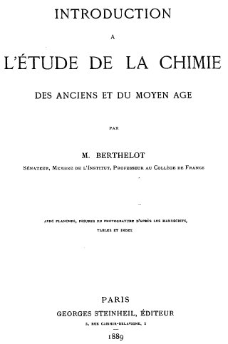
frontispice de l'Introduction à la Chimie des Anciens, 1889
XIX. — SUR STEPHANUS ET SUR LES COMPILATIONS DU CHRÉTIEN ET DE L'ANONYME - Introduction à la Chimie des Anciens pp. 287-301
Les traités des Alchimistes gréco-égyptiens ont été réunis en collection, d'abord par Zosime au IIIe siècle de notre ère, puis vers le VIIe siècle, au temps d'Héraclius, ainsi qu'il a été exposé dans la première partie de cette Introduction (p. 200 à 203). [sur Zosime, voir le tome IV des Alchimistes Grecs, les Ecrits authentiques aux Belles Lettres et le chapitre spécial que Jung a consacré aux Visions de Zosime dans les Racines de la conscience]. Ils sont devenus aussitôt l'objet de commentaires multipliés, écrits par des praticiens d'une part, et d'autre part, par des philosophes mystiques. En ce qui touche les développements pratiques donnés à l'antique doctrine, nous rappellerons qu'ils ont été, depuis le temps de Zosime jusqu'au XIVe siècle et jusqu'à la fin du moyen âge, consignés dans des traités et dans des mémoires : nous avons publié ce qui est venu jusqu'à nous dans la Collection des anciens Alchimistes grecs. Parmi les commentaires mystiques, les plus anciens, d'une portée philosophique incontestable, ont été conservés dans les ouvrages de Synésius et d'Olympiodore. Puis sont venus des glossateurs byzantins, étrangers à l'œuvre expérimentale, qui ont disserté sur les vieux traités, avec une subtilité scolastique mêlée d'exaltation. C'est à cet ordre de compositions qu'appartiennent les livres de Stephanus, du Philosophe Chrétien, et du Philosophe Anonyme. Stephanus est un personnage connu (Origines de l'Alchimie, p. 199.), à la fois philosophe, médecin, astrologue et professeur, contemporain et courtisan de l'empereur Héraclius (vers l'an 620). Ses ouvrages alchimiques, rédigés dans un langage mystique et enthousiaste, n'ont pas un grand intérêt scientifique ; le texte grec en a été publié par Ideler dans ses Physici et medici graeci minores (2 vol. in-8, Berlin 1841-1842, p. 199 à 237), d'après une copie de Dietz, faite sur un manuscrit de Munich, et collationnée, paraît-il, sur le vieux manuscrit de Venise, dont le manuscrit de Munich d'ailleurs est lui-même une copie directe ou indirecte (Voir le présent volume, p. 198,). Cette publication laisse fort à désirer, l'éditeur ayant transcrit les signes alchimiques purement et simplement, sans les comprendre, avec plus d'une erreur, et n'ayant donné aucune variante. Cependant elle permet de prendre une connaissance suffisante de l'œuvre de Stephanus; surtout si on la complète par la lecture de la traduction latine de cet auteur, publiée en 1573, à Padoue, par Pizimentius, dans l'ouvrage qui porte le titre suivant : Democriti de Arte magnâ. Dans ces conditions, il ne nous a pas paru indispensable de faire une nouvelle édition de Stephanus, notre publication étant consacrée essentiellement aux œuvres originales et inédites. Mais pour fournir au lecteur du présent ouvrage, une connaissance complète des vieux alchimistes grecs, nous croyons utile de donner ici l'analyse du Traité de Stephanus. Ce Traité se compose de 9 Leçons, adressées à l'Empereur Héraclius, et d'une lettre à Théodore.
La Iere Leçon est une longue déclamation sur les merveilles de l'Alchimie, où l'on retrouve reproduits les formules et les axiomes, mystiques des anciens écrivains :
« O nature supérieure aux natures et qui en triomphes, ô nature que le traitement (chimique) élève au-dessus de toi-même..., qui tires le Tout de toi-même et qui l'accomplis.... O corps de la magnésie, par lequel se produit tout le mystère; ô source céleste où l'or découle... ô nature identique... dominante et dominée... etc. » [voir Turba pour l'expression corps de la magnésie]
— Toutes ces merveilles viennent de Dieu, à qui toute admiration doit être rapportée. — Deux prières chrétiennes, au début et à la fin, encadrent cette leçon qui ne renferme que des phrases vagues, sans aucun renseignement positif. La Leçon II débute par ces mots :
« La multitude des nombres résulte de l'unité naturelle et indivisible ».
Leur développement circulaire et sphérique dérive de la combinaison des nombres 6 et 5 ; et ils sont disposés suivant les quatre côtés semblables du carré, de façon à former un tout accompli. — A ce développement pythagoricien succède un exposé des relations numériques des tons musicaux; puis l'auteur passe à la révolution diurne du ciel autour de la terre et aux rayons du soleil qui communiquent leur lumière aux astres et à la lune; ce qui l'amène à citer et à commenter les phrases d'Hermès sur l'effluve lunaire :
« ce qui tombe de l'effluve lunaire; comment on le trouve ; comment on le traite et comment cela possède une nature qui résiste au feu ( Cp. Traduction, p. 131, 132. ) ». [allusion à ce que les alchimistes nommeront plus tard le crachat de Lune : sputum lunae]
Puis vient une paraphrase métaphorique sur la blancheur lunaire, l'aphrosélinon oriental, la magnésie lydienne, l'antimoine d'Italie, la pyrite d'Achaïe, etc. Stephanus cite alors la vieille phrase hermétique (Cp. Traduction, p. 124.) :
« Après l'affinage, l'atténuation du cuivre, son noircissement, puis son blanchiment, viendra le jaunissement stable ».
Et il la commente, toujours en termes vagues, pour passer ensuite à cette autre phrase, qui termine le traité démocritain (Cp. Traduction, p. 57.) :
« rien n'a été omis, sauf la vapeur et la montée de l'eau ». [il faut entendre par là l'Aigle et les sublimations philosophiques, voir Philalèthe, Introïtus, VI] « Ainsi, dit-il, le vieux maître vous révèle le Tout, afin que vous ne vous égariez pas dans la matière multiple (Cp. Traduction, p. 63.); que vous n'entendiez pas par là le safran de Cilicie, la plante du mouron, la rhubarbe pontique, ou les autres sucs; non plus que là bile des quadrupèdes et des reptiles, ou les pierres et minéraux destructibles : toutes choses contraires à la nature parfaite et unique. Il ne veut pas que vous soyez égarés parmi les fourneaux, les appareils de cuivre, les alambics,les matras, les kérotakis, les vapeurs, etc. »
Puis vient l'éloge de la vapeur (mercurielle) : c'est le nard celtique, la mer atlantique, le minéral britannique, l'océan, couronne du monde, l'abîme incommensurable, etc. Et Stephanus termine, comme la première fois, par l'éloge de la puissance divine. On voit que ces leçons sont l'œuvre d'un bel esprit déclamateur, qui cherche à éblouir son lecteur, c'est-à-dire l'Empereur Héraclius; mais, il ne fournit point de renseignements nets sur les opérations chimiques auxquelles il fait allusion. La Lettre à Théodore, qui vient ensuite, est d'un style tout différent et d'un caractère allégorique singulier; elle fait allusion à des doctrines mystiques, sinon mieux définies, du moins susceptibles de donner lieu à certains rapprochements avec les autres textes. Le personnage auquel elle est adressée porte d'ailleurs le même nom que celui pour lequel a été écrite la dédicace en vers, qui figure en tête de notre Collection (Traduction, p. 84.), et il n'y aurait rien d'improbable à les identifier. Quoi qu'il en soit, cette lettre est assez courte pour être donnée ici :
« Sache qu'il y a dans le champ beaucoup de laboureurs inutiles; si tu ne les mets hors du champ, tu ne pourras en tirer profit. Ce sont les six frères (Les six métaux autres que l'or ? Probablement ils étaient employés pour fabriquer le Claudianos, alliage formé plus essentiellement par deux d'entre eux, le cuivre et le plomb. (Cp. Introd., p. 244.)) qui entourent le Claudianos et ses congénères. Or il n'y en a que deux d'utiles (Le cuivre et l'argent ?) ;la blancheur éclatante ne sert à rien. — Le champ renferme un serpent dont le souffle dessèche ce lieu ; et (les frères) y deviennent languissants. Je le vois, avec ses écailles de couleur variée. La naissance de sa queue est blanche comme du lait; son ventre et son dos sont couleur de safran (Cp. la figure du serpent. Introd., p.159.) ; sa tête est d'un noir verdâtre. — II faut que tu partages le champ en trois : place les quatre frères (La tétrasomie, ou ensemble des quatre métaux vulgaires) dans une partie ; et la grande pierre (La pierre philosophale.), dans une partie. Cest ainsi que les anciens tâchent d'opérer pour trouver (la chose cachée). Ainsi opère Théodore Magistrianus, et Jacques Cabidarius l'enseigne avec vérité.— II y a une vapeur humide et une vapeur sèche (Cp. Aristote, dans ce volume, p. 247). La vapeur humide est extraite au moyen de l'appareil à gorge; la vapeur sèche (sublimée), au moyen de la marmite pourvue d'un couvercle de cuivre, par le procédé employé pour tirer le mercure du cinabre. En arrosant le (sublimé) avec la vapeur humide, tu accomplis l'œuvre divine. — Sache que les minéraux et vapeurs sont tous des substances, ou bien le deviennent; lorsqu'on les arrose, elles deviennent des vapeurs humides. La comaris scythique, mélangée avec la vapeur, suffit pour tout accomplir. — Autre chose est la Chimie fabuleuse; autre chose est la Chimie symbolique et cachée (Cp. DÉMOCRITE. Traduction, p. 51). La Chimie fabuleuse se répand (en vain) en une multitude de discours; tandis que la Chimie symbolique procède avec méthode à l'ordonnance du monde, afin que l'homme inspiré de Dieu et né de lui soit instruit par des discours divins et allégoriques de la marche exacte de l'œuvre. » La Leçon III est intitulée : Sur le monde matériel.—En voici le sommaire.
« L'œuvre chimique est l'image du monde; elle amène à l'unité les corps métalliques transformés, en opposant leurs natures. La semence, mise en terre sous l'influence lunaire, est conduite à perfection par le soleil. Ce sont la scorie, Ia cadmie, la cendre des bois blancs, les matières sulfureuses changées en cendre, qui produisent l'œuvre divine, l'eau divine (ou de soufre natif)... Pour ne pas être déçu par ton inexpérience, écoute la parole d'Hermès (Cp. Traduction, p. 107, où cet axiome est attribué à Zosime.) : « Si tu vois que tout est devenu cendre, sache que la préparation a réussi »... Les bois changés en cendre deviennent incombustibles; de même les (minéraux) étant brûlés et incinérés, puis mêlés à la liqueur d'or, résistent ensuite au feu et sont aptes à produire toute sorte de teintures sur les marbres, les terres, les pierres, les bois, les peaux... » [la semence en terre représente l'or enté de Fulcanelli ; l'influence lunaire est celle du Mercure. Sur la scorie, voir Turba]
Ces phrases indiquent une sorte d'essai de théorie de la teinture des divers corps. Elles sont suivies par un exposé vague des transmutations métalliques, spécialement des traitements que doit subir le cuivre pur, rendu « meilleur que l'or » (Cp. Traduction, p. 136.), avec le concours de la pierre philosophale et de l'eau divine : « ce sang qui teint tout, préparé au moyen de notre instrument, comme le sang l'est au moyen du foie ». Suivent des comparaisons anato-miques et médicales, rappelant la profession de Stephanus, qui était à la fois médecin, astrologue et professeur, comme la plupart des savants de cette époque ; mais rien n'indique dans son écrit qu'il ait eu des connaissances précises en chimie et fait autre chose que commenter les vieux textes.
La Leçon IV porte en sous-titre : Sur ce qui sert à .l'opération. — Ce sont encore des citations de vieux axiomes :
« Un est le Tout, par lui est le Tout, etc. (Ce volume, p. 133.). — Une seule nature accomplit la chose cachée. — Si tu ne dépouilles la matière, si tu ne rends pas les corps incorporels (Cp. Traduction, p. 21, 101 et 124), tu ne réussiras pas.— Le but de la philosophie, c'est la séparation de l'âme et du corps. » —
Ces citations sont accompagnées d'une paraphrase enthousiaste et mystique. Puis vient un texte singulier, qui semble avoir un caractère archaïque et poétique:
« Combats, cuivre; combats, mercure; joins le mâle à la femelle ; c'est là le cuivre qui reçoit la couleur rouge et l'ios tinctorial doré; c'est la décomposition d'Isis, etc..... Combats, cuivre; combats, mercure ; le cuivre est détruit; rendu incorporel par le mercure, et Je mercure est fixé par sa combinaison avec le cuivre...» [expressions qui font partie des plus célèbres de tout le corpus alchimique. Elles reparaissent inchangées dans la Turba et d'autres textes.] Reparaît alors la phrase de Démocrite :
« Prends le mercure et fixe-le ; unis-le au corps de la magnésie, etc. (Cp. Traduction, p. 132) ». [là encore, tout ceci fut remployé par le compilateur de la Turba]
La Leçon V porte de même en sous-titre : Ce qui sert à l'opération de l'art divin. — L'auteur débute, comme toujours, par une prière; puis, dit-il, « revenons à notre sujet ». Il pose toujours au début un vieil axiome, base du commentaire qui suit : « Les sulfureux sont dominés par les sulfureux (Traduction, p. 21) ». [voir Idée alchimique II où Berthelot évoque la Turba dans deux articles. sulfura sulfuribus continentur... p. 449 de la T1 in BCC, sententia XIV et T2, p. 483, sententia XV.] Il parle des quatre éléments et de leurs dérivés, au double point de vue médical et chimique. On tire de l'air le sang, principe chaud et humide, assimilable au mercure; on tire du feu la bile jaune, principe chaud et sec, assimilable au cuivre [aurichalque ou REBIS] ; on tire de la terre la bile noire, principe sec et froid, assimilable à la scorie [voir scoria in sententia XIV, T2, BCC, p. 483] ; on tire de l'eau le phlegme ou pituite, principe sec et humide, assimilable à l'eau tirée de l'or. — Les éléments contraires ne peuvent être unis, si ce n'est par quelque intermédiaire, possédant les qualités des deux extrêmes (Cp. Platon, Timée, I, p. 91, trad. de H. Martin.).
[on voit que de
 on tire
le
on tire
le  par sublimation ; que du
par sublimation ; que du 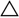
se tire l'homme double igné dont parle l'Azoth ; la fournit
la scorie assimilable aux fèces du
fournit
la scorie assimilable aux fèces du
 qui
sont un point essentiel des allégories symboliques ;
qu'enfin de
qui
sont un point essentiel des allégories symboliques ;
qu'enfin de  on
termine l'oeuvre par la coagulation. Ce n'est pas la première
fois que nous remarquons que, des quatre Eléments, c'est la qui
pose le plus de problème pour ce qui est d'une
interprétation rationnelle; contrairement aux autres
Eléments qui n'apparaissent qu'une fois, la apparaît deux fois, au début puis
à la fin de l'oeuvre, sous forme de terra damnata d'abord
assimilée à Lucifer
on
termine l'oeuvre par la coagulation. Ce n'est pas la première
fois que nous remarquons que, des quatre Eléments, c'est la qui
pose le plus de problème pour ce qui est d'une
interprétation rationnelle; contrairement aux autres
Eléments qui n'apparaissent qu'une fois, la apparaît deux fois, au début puis
à la fin de l'oeuvre, sous forme de terra damnata d'abord
assimilée à Lucifer  ; sous forme de terra alba foliata
ensuite, au
crépuscule vespéral quand paraît Hesperus
; sous forme de terra alba foliata
ensuite, au
crépuscule vespéral quand paraît Hesperus 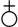
ou stibine]Il existe ainsi trois intermédiaires ou clefs, pour chacun des 4 éléments; ce qui fait 12 combinaisons. Par suite, l'art est assimilé au dodécaèdre et aux douze figures du Zodiaque, lesquelles se rapportent aux 4 saisons. Ces 12 signes sont parcourus par les 7 planètes, assimilables aux 7 couleurs et aux 7 métaux. De même les hommes vertueux seront introduits après 7 siècles par Jésus-Christ dans le repos divin. — On voit quel étrange mélange d'idées chimiques, médicales et religieuses se trouve dans les écrits de Stephanus.
Dans la Leçon VI, l'auteur parle d'abord des corps indivisibles (atomes) et sans parties, qui constituent tous les corps ; puis des quatre éléments, des 3 dimensions géométriques, de la forme et de la matière, des deux exhalaisons sèche et humide (Cp. Aristote cité dans ce volume, p. 247 et 259.), des nombres 6 et 9, du carré et du triangle, et il fait ensuite l'éloge de la philosophie, qui rend l'homme semblable à Dieu. Cette revue incohérente des idées des divers philosophes aboutit au Ier vers de l'énigme sibyllin (Traduction, p. 256), que l'auteur commente avec une puérilité emphatique; puis il se livre à une digression sur la digestion, et il appelle l'admiration du lecteur sur ce qu'il vient de lire et termine par un retour à Dieu.
La Leçon VII est encore un long et incohérent verbiage, où il est question d'abord du molybdochalque, de la phrase finale de Démocrite, de la rhubarbe du Pont (Cp. Traduction, p. 62.), assimilée au travail de la composition dans le mortier, de Pammenès et de ses dires :
« Projette l'or et le corail d'or se produira ». [corail d'or ou coquille d'or, voir Chevreul, critique de Hoefer, I à propos du soufre apyre et Livre de Crates; comparez avec Atalanta XXXII. Notons encore que l'étain comprenait le corail et toute sorte de pierre blanche, voir Fontenay. Pernety écrit à propos de l'étain : Étain. Lorsqu'il est cuit il se nomme Argent, Magnésie, Soufre blanc. Quand il a pris la couleur rouge, on lui donne les noms d'Orpiment, de Corail, d'Or, de Ferment, de Pierre, d'Eau lucide. Voir Dictionnaire Mytho- hermétique.]
Cet or serait le molybdochalque. Et encore :
« Prenant le mercure tiré du mâle (arrenoV), fixe-le suivant l'usage ».
[arrenoV est proche de arrenikon ou arsenic; il s'agit là de sels arsenicaux; toutefois, l'allusion à l'hermaphrodite est implicite : arreniko est congénère de arseniko et arrenoqhluV est le nom grec du Rebis : si l'on considère que qhlunw a le sens d'amollir, on comprendra peut-être mieux en quoi le mâle - le sec, anudroV - qui est assimilé au coagulum, doit être lié à la femelle - la mollesse, malakia - où il faut comprendre la solutio. En somme, il faut ici obtenir une âme douce...]
Stephanus commente ce dernier dire dans des termes tels qu'il semble ne pas avoir compris qu'il s'agissait ici du mercure tiré de l'arsenic, par opposition au mercure tiré du cinabre (Ce volume, p. 99, 239 et 282.). [c'est-à-dire qu'il faut ici disitnguer le cambar ou kinnabariV du zandarith ou sandarakh, voir Turba et Artephius. Précisément, il semble que le zandarith puisse produire cette poudre jaune] Puis il cite la parole de Pébéchius :
« Partagez la préparation en deux et cuisez le plomb avec du bois de laurier dans la composition blanche » ; [en grec, le laurier - dajnh - renvoie par cabale à Apollon, Soufre naissant ]
et plus loin, le dire d'Ostanès :
« Allez vers le courant du Nil » [allusion aux sublimations, i.e. aux Aigles, voir Diodore de Sicile]
: toutes citations accompagnées de paraphrases, mais dont on ne voit pas l'enchaînement. Il semble ici que Stephanus se soit proposé surtout d'éblouir le lecteur par un vain cliquetis de sentences. La Leçon VIII a pour sous-titre : La division de l'art. — Après l'axiome :
« Rends les corps incorporels et donne un corps aux incorporels »,
viennent un discours sur l'emploi du mercure et de la magnésie et des subtilités alchimiques.
« Le cuivre est comme l'homme; il a corps et âme » (Origines de l'Alchimie, p. 270.) ;
comparaison qui est suivie pendant quelque temps; puis arrive une explosion mystique, ou la science de l'or se confond avec la connaissance divine.
Dans la Leçon IX, l'auteur revient encore une fois sur la phrase finale de Démocrite :
« rien ne manque, rien n'est omis, sauf la vapeur et la montée de l'eau ».
Il s'agit, dit-il, de l'eau tirée du vitriol ; là se trouve la génération du cuivre et le vitriol fait l'or. Puis il expose tout un commentaire, qu'il déduit comme un prédicateur. Les quatre éléments se changent les uns dans les autres; le feu devient terre, la terre devient eau, l'eau devient air, et l'air redevient terre. [voir Ripley Scrowle] Les qualités s'opposent antre elles, non les substances. La voûte du ciel condense les vapeurs émises par la terre, à la façon d'une marmite et de son couvercle, etc., [voir Paracelse, in Jung, Synchronicité et Paracelsica] phénomènes comparables à la distillation dans l'alambic. — L'argent amolli par le feu, absorbe l'esprit igné provenant de la matière projetée. — Le fixateur de toutes les couleurs fugaces est l'alabastron, pierre tout à fait blanche (Traduction, p. 121.). [voir prima materia] — Ici sont cités Marie et les écritures judaïques, Théophile, fils de Théagène, qui dit :
« Il existe une pierre excellente dans le pays d'Egypte » ;
Agathodémon, etc. — Tout provient d'une composition unique, la teinture et l'objet; ce qui fuit et ce qui poursuit ; le mâle et la femelle, l'époux et l'épousée, l'élément actif et l'élément passif. Puis ce sont les axiomes sur le serpent, sur le Tout, énoncés par Chymes. Stephanus parle enfin du safran de Cilicie, de la dissolution dans l'eau des cendres des bois blancs et, après avoir énoncé la phrase :
« laisse descendre et cela s'accomplira »
— ea katw kai genhseta — il développe les relations des planètes et des métaux, dans un texte que j'ai déjà cité en raison de son importance historique. Je rappellerai que sur ce point, le seul texte logique et complet se trouve dans le ms. 2327 (Ce volume, p. 84) ; le ms. de Saint-Marc étant mutilé à cet endroit, ainsi que le texte d'après lequel Pizimentius a fait sa traducion. Nous arrivons ainsi aux variantes finales de la 9e leçon, sur lesquelles j'ai exposé tout un ensemble de faits (Ce volume, p. 179) que mettent en lumière la filiation des manuscrits : je n'y reviendrai pas ici.
Cette analyse caractérise suffisamment l'ouvrage de Stephanus et elle montre pourquoi il ne nous a pas paru utile d'en faire une réimpression spéciale : car il ne renferme guère que des déclamations, saufquelques fragments de vieux textes perdus aujourd'hui ; il a d'ailleurs été imprimé par Ideler et traduit en latin par Pizimentius. Il en est autrement des ouvrages du Philosophe Chrétien et du Philosophe Anonyme, inédits jusqu'à ce jour. Ce sont des compilations, avec commentaires, faites d'après les vieux auteurs. L'étendue initiale de ces compilations n'est pas exactement connue, les copistes y ayant rattaché successivement des morceaux qui n'en faisaient pas partie à l'origine, ainsi qu'il sera expliqué plus loin. Certains rapprochements, sinon certaines confusions, existent même entre les deux compilations. Ainsi les variétés de fabrication sont ramenées à 135, dans le Chrétien (Collection, etc. VI, xi, p. 396), comme dans l'Anonyme (Collection, etc. VI, xv, p. 409) ; ces variétés sont rattachées en outre aux quatre parties de l'œuf dans les deux auteurs (le Chrétien, p. 393; l'Anonyme, p. 409), puis par voie de subdivision aux espèces obtenues par voie sèche, humide, ou mixte (le Chrétien, p. 394; l'Anonyme, p. 414), etc. Enfin, sous le nom de l'Anonyme, il semble que plusieurs auteurs différents aient été groupés.
La date initiale du Chrétien et celle de l'Anoayme seraient déterminées, si l'on pouvait s'en rapporter aux indications du manuscrit du Vatican (Ce volume, p. 191. — Rapport de M. André Berthelot dans les Archives des missions scientifiques, 3e série, t. xIII (1887)). En effet, le traité de l'Anonyme (C'est le traité auquel nous avons donné le titre : « Musique et Chimie », Collect. des Alch. grecs, VI, xv ; voir aussi III, xliv) qui débute par les mots To won tetra-mereV... est dédié dans ce manuscrit à Théodose, le grand Empereur : sans doute Théodose II, auquel Héliodore a aussi dédié son poème alchimique. Mais les chapitres sur les Soufres, sur les Mesures et sur la Teinture unique (Collect. des Alch. grecs, III, xxi, xxii et xviii), que nous avons publiés dans les œuvres de Zosimes et qui font partie de la compilation du Chrétien dans les manuscrits, sont aussi dédiés au grand Empereur Théodose dans le manuscrit du Vatican. Dans le premier de ces chapitres, les deux premières lignes (Texte grec, p. 174, I. 11 et 12) sont supprimées, et l'auteur débute par ces mots : Isteon, w kratiste BasileuV ; puis il continue par : oti ou monon o jilosojoV, etc., comme à la ligne 13, jusqu'à la dernière ligne du chapitre. Cette suppression et cette interpolation sont suspectes, et il est permis de supposer que le nom de Théodose a été ajouté après coup, comme il est arrivé trop souvent dans ce genre de littérature. Parmi les autres chapitres de ces mêmes compilations, ceux qui ne sont pas transcrits d'après les vieux auteurs roulent sur des subtilités d'une assez basse époque, et ils sont assurément plus modernes que Synésius et Olympiodore, contemporains effectifs de Théodose. On trouve dans l'œuvre du Chrétien, telle qu'elle est transcrite dans le manuscrit de St-Marc, une autre mention qui paraît plus moderne et plus authentique, car elle ne s'en réfère pas au nom d'un empereur : c'est la dédicace à Sergius du traité sur l'Eau divine : il s'agit probablement de Sergius Resaïnensis, traducteur syriaque des Philosophes grecs, qui a vécu à la fin du VIe siècle (Origines de l'Alchimie, p. 205). Etait-il vraiment contemporain du Philosophe Chrétien ? On pourrait en douter à la rigueur, si l'on s'attachait à la citation du nom de Stephanus (Zosime, p. 162.), reproduit dans l'un des chapitres du Chrétien : « Sur l'exposé détaillé de l'œuvre » ; chapitre que nous avons publié dans les œuvres de Zosime (III, xvi), en raison des indications qui y sont contenues et parce qu'il renferme des fragments extraits de Démocrite. Mais tous ces textes ont été tellement interpolés par les copistes, que l'on ne doit pas attacher une signification trop absolue à de semblables citations, ajoutées souvent après coup. En fait, je serais porté à regarder la dédicace à Sergius comme la seule tout à fait authentique, et par conséquent à fixer la date du Chrétien à l'époque de cet écrivain, c'est-à-dire un peu avant Stephanus. On serait également reporté vers une époque qui ne peut guère être abaissée au delà du Ve ou VIe siècle, par les opinions relatives à la nécessité de la grâce divine, opinions exposées dans le morceau VI, 1, sur la Constitution de l'or. (Collection, etc., p. 385.) Quant au Philosophe Anonyme, il cite aussi Stephanus, non en passant, mais dans un développement historique, relatif aux autorités alchimiques (Collection, etc., VI, xiv), et je pense dès lors qu'il doit être regardé comme postérieur. Mais il pourrait être contemporain avec les auteurs pseudonymes des Traités perdus, attribués à Héraclius et à Justinien (Ce volume, p. 176, 214 ; Collection, etc., p. 368.). L'attribution de certains chapitres à l'Anonyme offre d'ailleurs diverses confusions, qui semblent indiquer plusieurs écrivains. Entrons maintenant dans des détails plus circonstanciés sur la compilation du Chrétien. La forme la plus moderne et la plus développée, sous laquelle nous possédions cette compilation, est celle qui existe dans le manuscrit Lb (2251 de Paris), copié vers le milieu du XVIIe siècle; en vue, ce semble, d'une publication qui n'a pas eu lieu. Le copiste a pris comme base le manuscrit E (2329 de Paris), un peu plus ancien, qu'il a d'abord enrichi par des additions marginales; il a fait subir ensuite aux textes des remaniements considérables, lesquels le plus souvent ne sont pas des améliorations ; enfin il a complété la compilation du Chrétien, en y intercalant des morceaux qui n'en font pas partie avec pleine certitude dans les autres manuscrits (sauf E). Nous allons, pour préciser la discussion, donner un tableau comprenant les 53 chapitres attribués au Chrétien dans le manuscrit L et ceux qui lui sont attribués dans le manuscrit E ; avec l'indication des feuillets de M (manuscrit de St-Marc, XIe siècle), de B (2325 de Paris; XIIIe siècle), et de A (2327 de Paris, XVe siècle), où se trouvent certains de ces chapitres; ainsi que celle des feuillets du manuscrit du Vatican, qui en renferment quelques-uns ; nous y joindrons les numéros correspondants de la vieille liste du manuscrit de St-Marc (Introd., p. 175.) ; enfin les numéros de notre propre publication des Alchimistes grecs, où ces divers chapitres sont imprimés. Cela fait, nous examinerons de plus près la composition même de la compilation.
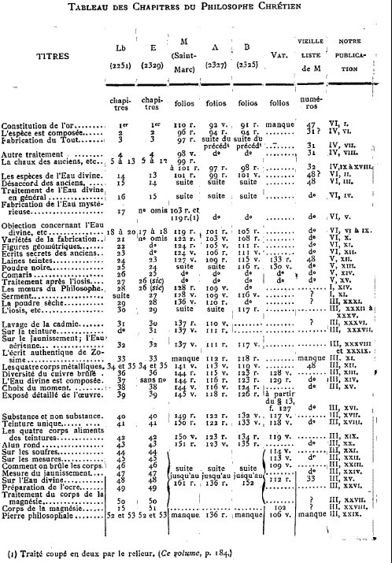
tableau des chapitres du Philosophe Chrétien
Dans le manuscrit du Vatican, il manque la majeure partie des chapitres du Chrétien ; deux groupes d'articles seulement s'y trouvent : l'un va du ch. 36 au ch. 51 , l'autre, du ch. 24 au ch. 27. Ce dernier groupe offre un caractère spécial et technique, sur lequel nous allons revenir. Mais il est difficile de tirer des inductions trop absolues de ces lacunes.
Indiquons maintenant la nature des sujets traités et expliquons comment nous avons été conduit à démembrer la compilation du Chrétien, pour en reporter un certain nombre de morceaux dans les parties précédentes. Ce démembrement était tout indiqué par notre plan, dans lequel nous nous efforcions de reconstituer les textes avec leur caractère le plus ancien. Or la compilation du Chrétien a été faite à l'origine en vertu du système général suivi par les Byzantins, du VIIIe au Xe siècle, période pendant laquelle ils ont tiré des anciens auteurs qu'ils avaient en main des extraits et résumés, tels que ceux de Photius et de Constantin Porphyrogénète. Ce procédé nous a conservé une multitude de débris de vieux textes; mais il a concouru à nous faire perdre les ouvrages originaux. Un semblable résultat a été particulièrement regrettable en ce qui touche les ouvrages scientifiques, que leurs abréviateurs comprenaient mal, négligeant la partie technique pour s'attacher aux morceaux mystiques et déclamatoires. Quoi qu'il en soit, les livres originaux n'existent plus (Cp. Ce volume, p. 277) et le problème est de les rétablir, autant que possible, à l'aide des fragments conservés par les abréviateurs. C'est le travail qui a été fait pour les historiens antiques et c'est celui que j'ai essayé d'exécuter pour les alchimistes. Voilà comment j'ai restitué à Zosime et aux vieux auteurs les fragments, souvent altérés et modifiés par des commentaires ultérieurs, qui se retrouvent dans les compilations du Chrétien et de l'Anonyme ; les chapitres 29 à 53 de Lb, notamment, ont ainsi passé dans la IIIe partie de la Collection des Alchimistes grecs ; les chapitres 28 et 28 bis de Lb, qui ont une physionomie spéciale, ont été reportés dans la partie Il. Les chapitres 2 à 13, que j'ai signalés plus haut comme extraits de vieux auteurs, d'après l'ancienne liste de Saint-Marc, sont rentrés dans la IVe partie. Les chapitres 24 à 27, qui se distinguent tout à fait par leur caractère technique, ont été maintenus dans la Ve partie.
Il ne faut pas se dissimuler que cette répartition prête un peu à l'arbitraire. Cependant elle me semble préférable au système qui consisterait à conserver en bloc ces compilations. Le tableau ci-dessus constate d'ailleurs l'état exact du Chrétien dans les manuscrits, indépendamment de toute hypothèse. Ce travail d'élimination terminé, il est resté encore un nombre considérable de morceaux, se rattachant plutôt à la classification générale de la compilation qu'à des sujets scientifiques déterminés ; c'est ce résidu qui constitue les chapitres du Chrétien, tels qu'ils ont été transcrits des manuscrits, dans la VIe partie de la Collection des Alchimistes grecs.

Currus Triumphalis antimonii (édition tardive)
XII. — SUR LE NOM DE L'ANTIMOINE - Introduction à la Chimie des Anciens pp. 279-81
L'origine du nom de l'antimoine est des plus controversée. Il ne convient pas de s'arrêter à l'étymologie puérile, d'après laquelle ce nom aurait été donné au métal par suite de son action vénéneuse constatée sur les moines d'un couvent. Ce nom est également fort antérieur au personnage mythique appelé Basile Valentin, auquel on attribue parfois la découverte de ce corps, et sous le nom duquel nous sont parvenus divers ouvrages (Char triomphal de l'Antimoine, Haliographie, etc.), lesquels ne paraissent pas antérieurs au XVIe siècle. Le sulfure d'antimoine d'ailleurs était connu des anciens sous les noms de stibium, stimmi et j'ai indiqué comment ils ont aussi obtenu l'antimoine métallique, confondu par eux avec le plomb (ce volume, p. 224). Le stimmi figure continuellement chez les vieux alchimistes grecs. Mais on n'y trouve pas le nom plus moderne de l'antimoine. Cependant on rencontre le mot : antemonion, dans le traité d'orfèvrerie que nous avons imprimé en tête de la Ve partie de la Collection des Alchimistes grecs. (Texte grec, §§ 44 et 45, p. 334, 1. 2, 4, 5, 6 ; Traduction, p. 319). Le sulfure d'antimoine y est employé pour affiner l'or et le séparer de l'argent (ce volume, p. 285). Ce texte nous est venu par un manuscrit de la fin du XVe siècle et il est assurément plus ancien; mais il est écrit en grec du moyen âge.
Ici se présente une circonstance singulière. L'antimoine ne paraît ni sous son nom ancien, ni sous son nom moderne, dans les traités latins qui sont réputés traduits des alchimistes arabes et qui représentent les débuts de l'alchimie dans le monde latin, vers le XIIe ou XIIIe siècle. Du moins je n'ai réussi à rencontrer ces noms ni dans les traités attribués à Geber, ni dans ceux du Pseudo-Aristote (De perfecto magisterio), ni dans ceux d'Avicenne, reproduits soit dans le Theatrum Chemicum, soit dans la Bibliotheca chemica. [voir bibliographie et Artephius] Je n'y ai trouvé d'autre désignation attribuable aux sulfures d'antimoine que celle de marcassite et de magnésie, qui les désignent certainement dans plusieurs cas, mais qui s'appliquent aussi à d'autres sulfures et dérivés métalliques.
Cependant l'antimoine figure sous le nom d'antimonium, et non de stibium ou stimmi, dans le Speculum naturale de Vincent de Beauvais (liv. VIII, ch. xlix),auteur qui écrivait vers le milieu du XIIIe siècle. Du Cange l'a même rencontré dans Constantin l'Africain, médecin de Salerne, qui vivait vers l'an 1100. C'est donc vers le XIe siècle que ce mot se trouve introduit en Occident, où il a supplanté l'ancienne dénomination. Son étymologie se rattache, suivant une opinion émise par Huet et acceptée par Littré (Dictionnaire de la langue française, t. I ; et Supplément : «. mots d'origine orientale», par Marcel Devic), à une forme arabe, telle que athmoud ou othmoud, qui serait devenue directement antimoine: ou bien ithmid, dérivé de stimmi, avec addition de l'article al altéré dans sa forme. Peut-être d'ailleurs le mot grec stimmi était-il lui-même d'origine orientale, auquel cas les Arabes n'auraient pas eu besoin de l'emprunter aux Grecs. Quoi qu'il en soit, on trouve divers exemples de ce genre d'altération dans les transcriptions latines de mots arabes relatées au Lexicon Alchemiae de Rulandus (1612) :parexemple le mot tinkar (le borax des alchimistes latins, qui signifie soudure ou fondant vitreux) s'écrit aussi attinkar et anticar. Au mot même antimonium est citée encore comme synonyme la forme analogue antistini. Les transcriptions des mots techniques et des noms de lieux arabes et grecs, dans le latin du moven âge, sont fécondes en altérations de cette espèce.
XIII. — L'ARSENIC MÉTALLIQUE CONNU PAR LES ANCIENS - Introduction à la Chimie des Anciens pp. 281-283 Les composés de l'arsenic et leurs transformations ont été connus dès l'antiquité; ils jouèrent un rôle important dans les pratiques de l'Alchimie. Les sulfures d'arsenic, en effet, existent dans la nature; ils étaient désignés, l'un, le réalgar, sous le nom de sandaraque [voir les vieux traités d'alchimie où ce corps est désigné comme zandarith : Turba, Artephius, Senior]; l'autre, l'orpiment, sous le nom d'arsenic, [idem : cambar ou kinnabariV] nom transporté depuis par les modernes au corps simple proprement dit. Divers arsénio-sulfures métalliques sont aussi signalés clairement par les alchimistes. On savait dès lors changer les sulfures d'arsenic en acide arsénieux par des grillages ménagés, précédés par l'action de divers réactifs (vinaigre, sel, etc.), ainsi que le montre une description détaillée d'Olympiodore, auteur du Ve siècle (Collection des Alchimistes grecs, traduction, p. 82.). En voici le résumé :
« L'arsenic (sulfuré) est une espèce de soufre qui se volatilise promptement..... Prenant de l'arsenic Iamelleux couleur d'or 14 onces, tu le coupes en morceaux, tu le porphyrises...; puis tu fais tremper dans du vinaigre (Vinaigre signifiait toute liqueur douée d'activité chimique, ou spécialement acide.), pendant 1 ou 3 jours et autant de nuits, la matière renfermée dans un vase de verre à col étroit, afin qu'elle ne se dissipe pas... décante ensuite et lave avec de l'eau pure, jusqu'à ce que l'odeur du vinaigre ait disparu... Laisse la masse se dessécher et se contracter à l'air; mélange et broie avec 5 onces de sel de Cappadoce... On opère ensuite dans un vase de verre luté, vase imaginé par Africanus (auteur du IIIe siècle), et muni d'un double couvercle luté, afin que l'arsenic brûlé ne se dissipe pas. Fais-le donc brûler à plusieurs reprises et pulvérise-le, jusqu'à ce qu'il soit devenu blanc. On obtient ainsi de l'alun blanc et compact. » [remarquez la définition du vinaigre, comparez avec Turba et Artephius]
On voit que l'acide arsénieux est désigné dans ce passage sous le nom d'alun; ailleurs, il est appelé céruse. [voir chimie et alchimie] Mais la description ne laisse aucun doute sur sa nature. En faisant réagir soit l'acide arsénieux, soit les sulfures d'arsenic sur les métaux purs ou alliés, par fusion dans un creuset, ou par évaporation et cémentation dans un appareil de digestion, les alchimistes communiquaient aux métaux diverses teintures superficielles ou profondes, de façon à obtenir soit des alliages blancs, analogues au tombac, soit des alliages dorés; alliages qu'ils cherchaient ensuite à faire passer pour de l'or ou de l'argent véritable. Ces teintures des métaux, analogues à celles que développe le mercure, jointes à la volatilité de l'arsenic et de ses composés, les conduisirent à assimiler l'arsenic lui-même au mercure et à le regarder comme un second mercure, mercure tiré de l'arsenic (sulfuré) ou de la sandaraque, par opposition au mercure ordinaire, tiré du cinabre (ce volume, p. 99 et 236; Collection des Alchimistes grecs, Traduction, p. 66 et 74). L'aptitude de l'arsenic métallique à se sublimer à la façon du mercure, dans des conditions de température et de désulfuration analogues, ainsi que sa faculté de ramollir les métaux et de former avec eux des alliages fusibles et colorés; enfin, l'existence du réalgar, souvent confondu avec le cinabre, en raison de sa couleur, donnaient une force apparente à cette assimilation. [les textes alchimiques bâtiront des allégories subtiles à partir de ces recettes chimiques]
« Fixez le mercure tiré de l'arsenic (sulfuré) ou de la sandaraque »,
dit le Pseudo-Démocrite ( Collection, etc.; Traduction, p. 53);
« projetez-le sur le cuivre et le fer traité par le soufre, et le métal deviendra blanc. »
Ailleurs, dans un fragment attribuable à Zosime (p. 213), sous le titre de « Fabrication du mercure », on lit :
« Prenant de la céruse (acide arsénieux, voir plus haut) et de la sandaraque, par parties égales, délaie avec du vinaigre jusqu'à ce que la masse s'épaississe; ensuite, mettant dans un vase non étatné, recouvre avec un couvercle de cuivre; lute tout autour et fais chauffer doucement sur des charbons. Lorsque tu présumes que l'opération est à point, découvre légèrement, et, avec une barbe de plume, enlève le mercure. »
Cette préparation est fort claire, à quelques détails près ; elle répond à une préparation d'arsenic métallique sublimé. Les traités des alchimistes grecs renferment un grand nombre d'indications analogues.
Nouvelles lettres sur la chimie considérée dans ses applications à l'industrie, à la physiologie et à l'agriculture - éd. publ. par M. Charles Gerhardt, Paris : Charpentier, 1852
Histoire de la chimie. — Origine de la chimie moderne — Principal but des premières recherches chimiques. — Première période : AIchimie. — Pierre philosophale. Causes de la croyance à la transmutation des métaux. Cas où elle aurait réussi. — Utilité de l'alchimie par son incitation aux recherches. — Opinions actuelles sur la possibilité de certaines découvertes importantes. — Deuxième période : Chimie phlogistique — Coordination des faits d'après les analogies. — Troisième période : Chimie antiphlogistique — Emploi des poids et des mesures dans l'appréciation des phénomènes
Pour apprécier toute l'étendue des connaissances de la chimie actuelle, il est nécessaire de jeter un coup d'oeil rétrospectif sur les siècles passés. L'histoire d'une science est une page de l'histoire de l'esprit humain; il n'en est pas de plus curieuse, de plus instructive que l'histoire de l'origine et des progrès de la chimie. Des circonstances fortuites l'ont fait généralement considérer comme toute jeune, mais la chimie est une des sciences les plus anciennes. À la fin du siècle dernier, un esprit insensé s'empara d'un peuple éminemment civilisé et lui fit démolir les monuments de sa gloire, bâtir des autels à la déesse de la Raison, et créer un nouveau calendrier. Ce même esprit donna naissance à une fête des plus bizarres, où l'on vit madame Lavoisier en costume de prêtresse, livrer aux flammes, sur un autel, le système phlogistique, pendant que la musique jouait un requiem solennel. Les chimistes français se réunirent alors pour changer tous les termes techniques, tous les noms désignant les combinaisons et les décompositions chimiques: Ils imaginèrent une nomenclature nouvelle qui, étant l'expression d'un système nouveau et complet, vint s'imposer aux savants de tous les pays. On s'explique ainsi l'abîme qui semble exister entre la science actuelle et l'ancienne chimie. En effet, les nouveaux noms et les nouvelles théories rompirent les liens du passé et effacèrent l'origine de toutes les découvertes importantes, de toutes les observations partielles, faites jusqu'au temps de Lavoisier, dans les autres pays de l'Europe. Beaucoup de gens ne voient dans nos connaissances actuelles que l'héritage exclusivement légué par l'école française d'alors, et s'imaginent que l'histoire de la chimie ne va pas au delà. Mais c'est là une erreur.
Il en est du progrès des sciences physiques comme de l'histoire des peuples, où tout événement est toujours la conséquence de circonstances ou d'événements qui l'ont précédé. De même que tout phénomène, dans la nature animée ou inanimée, suppose toujours certaines conditions qui le provoquent, de même le progrès, dans les sciences naturelles, est déterminé par l'acquisition antérieure de certains faits, de certaines vérités ou connaissances dues à des faits déjà observés. Un nouveau système, une nouvelle théorie est tou jours le résultat d'observations plus ou moins étendues, contraires aux doctrines en vigueur. Au temps de Lavoisier, on connaissait tous les corps, tous les phénomènes dont il s'est occupé. Lavoisier n'a découvert aucun corps nouveau, aucune propriété nouvelle, aucun phénomène nouveau; toutes les vérités qu'il a établies étaient la conséquence nécessaire de travaux antérieurs. Le mérite de cet homme immortel est d'avoir doué la chimie d'un sens nouveau, d'avoir rassemblé les membres épars du corps de la science, et d'en avoir trouvé les jointures.
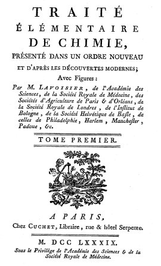
frontispice du Traité élémentaire de Chimie de Lavoisier
« L'or donne le pouvoir; il n'est point de jouissance sans la santé, et une longue vie tient lieu de l'immortalité. » (Goethe.)
Ces trois conditions suprèmes de la félicité humaine, on les croyait trouver réunies dans la pierre philosophale. Pendant bien des siècles, les travaux de tous les chimistes avaient pour unique but de découvrir la terre virginale, la substance mystérieuse qui, dans les mains du sage ou du savant, devait transformer le vil métal en or. Plus tard, cet or, employé comme médicament dans son plus haut degré de perfection, passait pour guérir toutes les maladies, pour rajeunir le corps et prolonger la vie.
[la terre virginale est la prima materia qui contient l'Acier des Sages ; la substance mystérieuse que Liebig associe à cette terre est en fait le Mercure qui n'est pas le vif argent vulgaire et dont on a donné ce nom de mercure, uniquement pour l'analogie avec ce métal qui est liquide à la température ambiante] Il faut se rappeler, pour bien apprécier le caractère de l'alchimie, que, jusqu'au XVIe siècle, la terre était considérée comme le centre de l'univers. On croyait alors à une relation intime entre la vie, la destinée des hommes, et le mouvement des astres. Le monde était un grand tout, un organisme dont les membres réagissaient continuellement les uns sur les autres.
[certains croient toujours aux idées des Chaldéens; Robert Fludd a entretenu d'ailleurs cette idée du monde dont toutes les parties interagiraient. Newton pensait, également, qu'il existait un milieu ténu qu'il appelait le sensorium Dei. Nous l'appelons espace - temps. Notons que ces idées se sont ensuite retrouvées dans la philosophie de la physique quantique.]
« Les forces créatrices rayonnent de tous les points du ciel vers la terre, et déterminent les choses terrestres. » (Roger Bacon.)
« Lorsqu'on mange du pain, dit Paracelse, ne savoure-t-on pas à la fois le ciel, la terre et les astres, puisque le ciel par la ptuie fécondante, la terre par le sol, et le soleil par ses rayons chauds et lumineux, concourent à produire le pain, et que le tout est présent dans la partie ? » [on pourrait penser qu'il s'agit là de déductions abusives. Si la Raison y trouve son compte, le Sensible y est indifférent : le texte de la Tabula Smaragdina est à la base des propos paracelsiens]
Ce qui se passait sur la terre, on le croyait lire dans les étoiles; ce qui était écrit dans le ciel, devait s'accomplir sur la terre. Mars, Vénus, ou toute autre planète régissait les événements de la vie de chaque homme, dès sa naissance. Les comètes, dont l'apparition est si irrégulière, étaient des signes menaçants, annonçant aux populations misère et malheur. La magie avait pour objet d'étudier les forces de la nature; jointe à l'art de guérir, elle passait pour contenir toute une science secrète. [voir Chevreul, critique de Salverte, une Histoire de la Magie] On attribuait à l'action d'esprits invisibles les manifestations de la vie organique et les phénomènes grandioses de la nature, comme le tonnerre, les éclairs, la tempête, la grêle. Ce qu'un penseur s'était acquis par l'observation, était inaccessible à la foule ; pour elle, il faisait commerce avec des êtres surnaturels, sa science était un pouvoir à l'aide duquel il dominait les esprits.
« Les démons, dit Caesalpinus, conçoivent par un sens interne, sans avoir besoin de corps; mais ils ne peuvent, sans moyens naturels, exercer aucune influence sur les hommes et les auimaux. Ceux de la mauvaise espèce causent les ensorcellements et toutes sortes de maléfices. » [Césalpin est l'un des trois métallurgistes les plus célèbres du XVIe siècle avec Biringuccio et Perez des Vargas, voir prima materia].
Pendant quatre siècles, ces alliances supposées de l'homme avec l'esprit malin faisaient condamner par les tribunaux des milliers de victimes. Les pactes auxquels on croyait étaient d'une bien singulière espèce, puisque aucune des parties contractantes n'en tirait un bénéfice : les malheureux, en effet, qui avaient voué leur âme au diable, vivaient ordinairement dans une profonde misère, ils ne participaient pas aux puissances terrestres, et leur part du ciel, étant dévolue au diable, n'avait ptus pour eux aucune valeur.
Si l'on tient compte de cet état de l'esprit humain, on peut dire que l'alchimie était plus avancée que d'autres sciences, quant à la connaissance de la nature, et, en vérité la chimie d'alors, jusqu'au XVe siècle, n'était pas plus arriérée que l'astronomie, elle se trouvait au même degré de développement. Ce fut d'Égypte, par les Arabes, que se répandit l'idée que la pierre philosophale était le moyen de transformer en or les métaux communs. La conquête de l'Égypte mit les Arabes en possession des connaissances physiques, qui étaient probablement, dans l'origine, le fruït des travaux d'une caste de prêtres jaloux; enseignées dans les temples sous forme de mystères, elles n'étaient alors accessibles qu'aux initiés. Hérodote et Platon avaient fait leurs études dans ce pays remarquable. Neuf cents ans avant la conquête, l'Académie d'Alexandrie était déjà devenue un centre scientifique, et encore à l'époque où les Arabes incendièrent la fameuse bibliothèque, Alexandrie était l'asile et le siège le plus important de la science grecque. Chez ce peuple, d'une intelligence encore vierge, ni le fatalisme de Mahomet, si opposé au développement de la médecine, ni les préceptes du Coran qui interdit formellement les rêveries, ne purent empêcher la culture des sciences, de la médecine, de l'astronomie, des mathématiques : aussi les doctrines des savants d'Alexandrie, sur la transformation des métaux, durent-elles trouver chez lui un sol propice, préparé d'avance et fécond. Au temps où Bagdad, Bassora, Damas, étaient les centres du commerce du monde, il n'y eut pas de peuple plus habile, plus actif, plus avide de lucre et d'or que les arabes. Leurs contes nous ont conservé leurs souhaits favoris, mobiles de leur activité. Tandis que les elfes et les nixes, les nains et les ondines des contes germaniques étaient les dispensateurs d'épées auxquelles aucun ennemi ne pouvait résister, ou d'onguents qui guérissaient toutes les plaies, ou de coupes qui ne se vidaient jamais, ou de tables qui étaient toujours servies, les esprits des Mille et une nuits sont toujours les dépositaires d'immenses trésors, ou les gar-diens de jardins remplis de fleurs et de fruits d'or ou de pierres précieuses. La lampe merveilleuse des conteurs arabes, par laquelle l'homme pouvait acquérir toutes ces magnificences, était considérée comme quelque chose d'aussi réel, d'aussi accessible que, quelques siècles plus tard, les balais sur lesquels chevauchaient les sorcières du Blocksberg, et dansaient leur sabbat échevelé la nuit de la Saint-Sylvestre. En Égypte, la lampe merveilleuse prit la forme de la pierre philosophale. Les écoles arabes, par la recherche de cette pierre philosophale, donnèrent la première impulsion scientifique à toute l'Europe occidentale et y introduisirent ainsi les connaissances chimiques. Sur le modèle des universités de Cordoue, de Séville, de Tolède, visitées depuis le Xe siècle par les curieux de tous les pays, se formèrent bientôt de nouveaux centres scientifiques à Paris, à Salamanque, à Padoue, et comme l'exigeait d'ailleurs l'état de civilisation du temps, les prêtres chrétiens devinrent les seuls dépositaires et les propagateurs des doctrines des savants arabes. Bien des siècles après, l'alchimie conservait encore, des prêtres égyptiens, ces interprétations dont l'obscurité était passée en proverbe, ce style mystique rempli d'images et entremêlé d'idées religieuses. Les écrits de Geber, ce Pline du VIIIe siècle, dénotent une variété de connaissances chimiques vraiment admirables pour l'époque.
[rappelons que la Summa Perfectionis n'est pas de Geber - Djabir - mais de Paul de Tarente : OFM (late 13th cent.) by W. R. Newman, The genesis of the Summa perfectionis, Archives internationales d'histoire des sciences 35 (1985) 240--302 et Sylvain Matton : Notices « Paul de Tarente (pseudo-Geber) », « Petrus Bonus », « Augurelli », « Bracesco », « Diacceto », « Crispo », « Fludd », « Nizolius », « Saint-Romain », « Thybourel » de l'Encyclopédie philosophique universelle, sous la direction d'André Jacob, III : oeuvres philosophiques, Paris : P.U.F., 1992 - Newman W.R., The Summa Perfectionis of Pseudo-Geber, A critical edition, translation and study, E.J. Brill, Leiden, 1991 (Une introduction de 250 pages présente le débat alchimique à la fin du XIIIe siècle puis les sources de la Summa Perfectionis et la question de son attribution à Paul de Tarente]
Les théories des éminents savants du XIIIe siècle, de Roger Bacon et d'Albert de Bollstadt (Albertus Magnus, évéque de Ratisbonne), peuvent certainement, pour la richesse des idées et l'étendue des conceptions, se comparer aux théories de nos écoles philosophiques modernes. Déjà au temps de Geber, on classait, comme aujourd'hui, les corps par groupes, suivant leurs analogies, suivant certaines ressemblances de leurs propriétés. Tous les métaux partagent certaines propriétés fondamentales, ils ont tous l'éclat dit métallique : il en est qui sont inaltérables au feu, c'étaient les métaux appelés nobles; la plupart des autres perdent au feu leur éclat ou leur ductilité, c'étaient les métaux imparfaits ou les demi-métaux. À cause de leur éclat métallique, la galène et la pyrite ne pouvaient pas être séparées des métaux : la galène, en effet, a presque la couleur du plomb, la pyrite a celle de l'or. De la galène et de la pyrite, on peut extraire du soufre ; de la première ou peut, sans en changer la couleur, retirer du plomb ductile, fusible, doué de l'éclat métallique, Qu'y avait-il de plus naturel, d'après cela, que de croire que tous les métaux contenaient du soufre et qu'il en modifiait les propriétés suivant qu'il y entrait en quantité plus ou moins grande ? Et comme, en expulsant du soufre de la galène, on la transformait en plomb métallique, n'était-il pas probable qu'en en séparant un peu plus de soufre, on rendrait le plomb encore plus noble, on parviendrait à le convertir en argent ? On connaissait la propriété que possède le mercure de se réduire eu vapeurs. Quoi de plus naturel alors que de supposer que la formation de la rouille, que la perte des propriétés métalliques subie par les métaux dans la calcination, provenaient du dégagement d'un mercure volatil ? [réflexions qui rejoignent absolument la cabale hermétique : voir le Rosarium Philosophorum
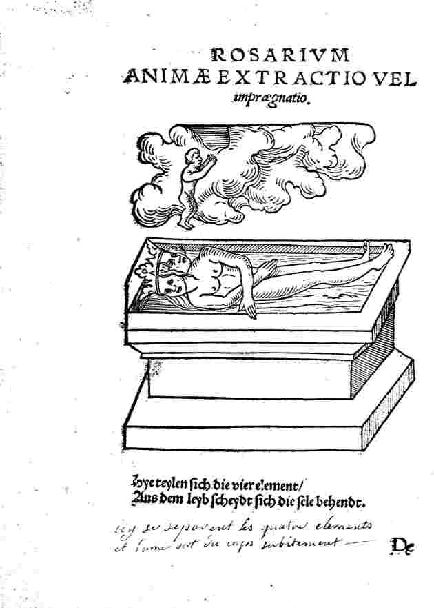
Ros. Phil. figure 8
où l'on peut observer, dans le petit personnage qui s'échappe des corps morts, cet esprit volatil ; son idéogramme est
 ]
Aujourd'hui encore l'expérience
nous conduit a admettre un
principe colorant particulier dans toutes les matières qui ont
de la couleur. La couleur rouge du rubis, la couleur verte de
l'émeraude, la couleur bleue du saphir, sont dues à des
causes semblables à celles qui déterminent la coloration
des étoffes. [voir teinture]
On peut durcir le fer doux
par une légère addition d'un
corps étranger, adoucir et rendre ductile la fonte brute par
certaines opérations, communiquer au cuivre la couleur de l'or
par le traitement avec de la calamine, donner à ce même
cuivre rouge la couleur blanche de l'argent par un mélange
d'arsenic. [Marc-Antoine
Gaudin considérait que
le cuivre était une sorte de Protée, voir Soufre]
L'or chauffé avec
du sel ammoniac devient d'un jaune rougeâtre, tandis que le borax
le blanchit. Avec de l'encre ordinaire (contenant du vitriol bleu) nos
enfants convertissent encore aujourd'hui le fer en cuivre. On extrait
de l'or du sable de certaines rivières ; on obtient du fer en
calcinant de l'argile rouge avec de l'huile.
]
Aujourd'hui encore l'expérience
nous conduit a admettre un
principe colorant particulier dans toutes les matières qui ont
de la couleur. La couleur rouge du rubis, la couleur verte de
l'émeraude, la couleur bleue du saphir, sont dues à des
causes semblables à celles qui déterminent la coloration
des étoffes. [voir teinture]
On peut durcir le fer doux
par une légère addition d'un
corps étranger, adoucir et rendre ductile la fonte brute par
certaines opérations, communiquer au cuivre la couleur de l'or
par le traitement avec de la calamine, donner à ce même
cuivre rouge la couleur blanche de l'argent par un mélange
d'arsenic. [Marc-Antoine
Gaudin considérait que
le cuivre était une sorte de Protée, voir Soufre]
L'or chauffé avec
du sel ammoniac devient d'un jaune rougeâtre, tandis que le borax
le blanchit. Avec de l'encre ordinaire (contenant du vitriol bleu) nos
enfants convertissent encore aujourd'hui le fer en cuivre. On extrait
de l'or du sable de certaines rivières ; on obtient du fer en
calcinant de l'argile rouge avec de l'huile.Qu'y avait-il de plus naturel pour un esprit inexpérimenté, que d'attribuer les propriétés des métaux à certaines substances particulières ; que d'admettre la possibilité de communiquer les propriétés de l'or ou de l'argent au plomb ou au cuivre, par l'addition ou par la séparation de certaines parties? La teinture imparfaite donnant la couleur, une teinture plus parfaite devait donner les autres propriétés. On ne s'étonnera pas que les anciens alchimistes aient pris certains sulfures pour des métaux, si l'on se rappelle que les chimistes modernes eux-mêmes ont considéré pendant vingt-six ans, comme des métaux simples, un oxyde, le protoxyde d'urane, et une combinaison azotée, l'azoture de titane. II existe, dit Geber, des moyens de produire et de transmuter les métaux, ainsi que le prouvent certains faits, incontestables selon lui. Ces moyens dérivent de trois états particuliers sous lesquels on obtient les corps. Dans le premier état, ils constituent les matériaux bruts, tels que nous les offre la nature. Dans le second état, les minerais sont purifiés par des opérations chimiques. Enfin, les corps s'obtiennent dans le troisième état par une nouvelle épuration qui donne le grand magisterium, la teinture rouge, le grand élixir, la pierre philosophale. [les alchimistes nomment prima materia ce premier état quand les matériaux sont pris au sortir de la minière; la purification s'apparente à la sublimation, voir fig. 8 du Ros. Phil.] Les alchimistes supposaient dans les métaux la présence d'un principe particulier qui leur communiquait le caractère de la métallité: c'était le mercure des sages. [plus exactement, le Mercure
ou dissolvant des métaux, permettait de «
réorienter » le Soufre du
métal avant de l'infuser dans la matrice minérale]
Un métal commun
devenait plus noble en fixant une plus grande
quantité de ce principe. En extrayant le principe
métallique d'une matière, en augmentant sa force par
l'épuration, en préparant ainsi la quintessence de la
métallité, on obtenait la pierre qui, portée sur
des métaux communs, les transformait en métaux nobles.
Cette pierre philosophale agissait, selon certains alchimistes,
à la manière d'un ferment. « La levure, par une transmutation des parties, ne convertit-elle pas les sucs végétaux, et l'eau sucrée en eau-de-vie fortifiante et rajeunissante ? n'effectue-t elle pas le départ de toutes les impuretés ! » (Georges Rippel, XVe siècle.) [sic : Georges Ripley, voir Compound of Alchemy et Ripley Scrowle]
Dans son plus haut degré de perfection, la pierre philosophale était une panacée universelle : suivant Roger Bacon, une seule partie suffisait pour convertir en or un million de parties, ou même, selon Raymond Lulle, mille millions de parties de métal commun. Selon Basile Valentin, cependant, la puissance de transmutation de la pierre philosophale ne se bornait qu'à 70 parties de métal commun, et même, selon John Price, le dernier faiseur d'or du XVIIIe siècle, qu'à 30 ou à 60 parties. [il doit s'agir de James Price, que Louis Figuier évoque dans son Alchimie et les alchimistes :
Un
événement qui produisit beaucoup de
sensation en Angleterre, contribua encore à ouvrir les yeux du
public et à
démontrer la réalité des accusations
portées contre les adeptes. En 1783, le
chimiste James Price, qui avait dix fois exécuté avec
succès des transmutations
publiques, soumis par les membres de la Société royale de
Londres à une
surveillance plus sévère, et pressé de
manière à ne pouvoir tromper les
assistants, s'empoisonna sous les yeux même des personnes
convoquées pour être
témoins de ses prodiges. Ce fait produisit à cette
époque beaucoup d'impression
en Angleterre, et l'on nous permettra d'en rappeler les principaux
détails. James Price, homme riche et
savant, était médecin à Guilford. Il s'occupait de
chimie, et son nom est resté
attaché, dans cette science, à quelques travaux
intéressants. Mais il eut le
travers de se jeter dans les folies alchimiques, et il s'imagina, en
1781,
avoir réussi à composer une poudre propre à la
transmutation du mercure et de
l'argent en or.
Cette poudre avait de si faibles
vertus, le profit qu'on pouvait en retirer était si
médiocre, et les
expériences si pénibles, qu'il hésita pendant deux
ans à rendre publique sa
prétendue découverte. Il se décida
néanmoins à la confier à quelques amis. Le
père Amierson, naturaliste zélé et chimiste
habile, les frères Russel,
conseillers à Guilford, et le capitaine Grose, connu par
quelques écrits sur
l'antiquité, furent ses premiers confidents. Cependant,
à mesure que le
bruit de ses opérations se répandait au dehors, il
s'enhardissait davantage, et
il finit par acquérir une confiance en lui-même qui lui
avait manqué jusque-là.
De l'art de se tromper soi-même à l'art de tromper les
autres, il n'y a qu'un
pas. En 1782, Price montrait à qui voulait les voir deux poudres
rouge et
blanche avec lesquelles il transmuait à volonté les
métaux vils en argent ou en
or. Il exécuta plusieurs transmutations publiques, et pour
répondre d'une
manière péremptoire aux objections qu'elles avaient
provoquées, il institua une
série d'expériences exécutées à
Guilford dans son laboratoire, en présence d'un
grand nombre de personnes distinguées de la ville. Ces
expériences, qui
durèrent deux mois, consistèrent surtout à agir
sur le mercure ou sur des
amalgames, au moyen de ses deux poudres. L'opérateur transmuait
à volonté ce
métal en argent ou en or. Il faisait souvent usage d'huile de
naphte pour
ajouter au mercure, qui devenait mat et épais par son
mélange avec ce liquide.
Le borax et le charbon de bois jouaient aussi un rôle comme
ingrédients dans
les opérations. Les expériences ne donnaient en
général que de petites
quantités de métal précieux ; mais, dans la
neuvième séance, qui eut lieu le 30
mai 1782, et dans laquelle on laissa le chimiste opérer seul, on
obtint, avec
soixante onces de mercure, un lingot d'argent pesant deux onces et
demie. La
quantité de poudre philosophale employée fut de douze
grains. Le lingot
d'argent provenant de cette expérience fut offert en
présent au roi
d'Angleterre, Georges III.
Pour donner toute publicité
à ces expériences, James Price en fit imprimer, à
Londres, les procès-verbaux
détaillés sous le titre de Relation de
quelques expériences sur le mercure, l'or et l'argent.
Ces procès-verbaux
portent la signature des principaux témoins des
expériences : outre les noms de
Russel, Amierson et Grose, on y remarque ceux de lord Onslow, lord
King, lord
Palmerston, le chevalier Garrwaide, sir Robert Parker, sir Manning, sir
Polie,
le docteur Spence, le capitaine Hausten, les lieutenants Grose et
Hollamby, les sieurs Philippe Clarke, Philippe Norton, Fulham,
Robinson,
Godschall, Gregory et Smith, noms aujourd'hui tous inconnus. Cependant
James Price était membre de
la Société royale des sciences de
Londres. Comme les croyances alchimiques avaient depuis quelque temps
perdu
leur prestige la société voulut savoir le fond de
l'affaire. Le chimiste fut
donc sommé de répéter ses expériences
devant une commission choisie parmi ses
membres et composée de deux chimistes Kirwan et Higgins. James
Price refusa de
répéter devant eux ses expériences de Guilford. Il
donnait pour prétexte que sa
provision de pierre philosophale était épuisée, et
qu'il fallait beaucoup de
temps pour en préparer d'autre. Il alléguait encore que,
faisant partie de la
société des Rose-Croix, il ne pouvait divulguer l'un des
secrets de sa
confrérie. Mais toutes ces défaites étaient
jugées à leur véritable valeur, et
ses amis le pressaient de toute manière d'obéir au
vœu de la Société royale. Un
des membres les plus illustres de cette Société, sir
Joseph Banks, insista
surtout pour lui faire comprendre jusqu'à quel point son honneur
et celui de la
compagnie scientifique dont il était membre, étaient
engagés dans cette
affaire. Ainsi poussé à bout, James Price
se
décida à recommencer ses expériences afin de
préparer une nouvelle quantité de
sa poudre transmutatoire. Au mois de janvier 1783, il partit pour
Guilford,
afin de s'y livrer à ses recherches, annonçant son retour
pour le mois suivant.
Arrivé à Guilford, il
s'enferma dans son laboratoire. Ensuite, avant de rien entreprendre, il
commença
par préparer une certaine quantité d'eau de
laurier-cerise, poison très
violent. Il écrivit ensuite son testament, qui commençait
par ces mots : « Me croyant sur le point de partir pour un monde
plus sûr, je
consigne ici mes dispositions dernières... » Ce n'est
qu'après ces préliminaires
sinistres qu'il se mit au travail. Six mois se
passèrent sans que l'on
entendît parler à Londres du chimiste Price. Au bout de ce
temps, on apprit son
retour ; mais, comme on assurait qu'il revenait sans avoir
réussi dans sa
tentative, tous ses amis les plus chers l'abandonnèrent au juste
mépris que
méritait sa conduite. Ce ne fut donc point sans surprise que la
Société royale
reçut de James Price la prière de se rendre en corps,
à un jour désigné du mois
d'août 1783, dans son laboratoire. Deux ou trois personnes
seulement, parmi
tous les membres de la Société, crurent pouvoir
répondre à l'invitation de leur
collègue. James Price ne put résister à cette
dernière marque de mépris ; il
passa dans un petit cabinet attenant à son laboratoire et avala
tout le contenu
du flacon d'eau de laurier-cerise qu'il avait rapporté de
Guilford. Quand on
reconnut, à l'altération de ses traits, les signes du
poison, on s'empressa de
lui chercher des secours ; mais il était trop tard, et les
médecins qui
accoururent le trouvèrent mort. Le docteur Price laissait, par
son testament,
une fortune de soixante-dix mille thalers, avec une rente de huit mille
thalers
qu'il distribuait à ses amis.
On peut considérer que James Price fut le dernier souffleur qui ait eu à pâtir de sa passion.]
Pour
préparer la pierre philosophale, il fallait d'abord la
matière première, la terre adamique, la terre virginale [il y a
confusion : la terre adamique est la materia prima d'où le
sulphur est
tiré; c'est une terre limoneuse ou boueuse. La terre virginale
est d'essence mercurielle et sert à la préparation du sel
 ] : cette terre, quoique
répandue partout, ne pouvait se découvrir que dans
certaines conditions, connues seulement des initiés.
] : cette terre, quoique
répandue partout, ne pouvait se découvrir que dans
certaines conditions, connues seulement des initiés.
D'autres descriptions de la manière de préparer la pierre philosophale sont encore plus obscures et entremêlées d'explications mystiques. L'usage où l'on était d'apprécier le temps d'après la durée des prières passa, vers le Xe ou le XIIe siècle, dans les laboratoires, et l'on s'explique aisément comment on fut conduit peu à peu à attribuer la réussite d'une opération à la prière qui, dans l'origine, en devait simplement indiquer la durée. [cette interprétation de la prière, sur la durée d'une opération semble originale et doit être lue avec, à l'esprit, les planches du Mutus Liber] Au XVIe siècle, les idées alchimiques étaient si complètement confondues avec les idées religieuses, qu'on se servait très souvent de mois alchimiques pour désigner ces dernières. Ainsi, dans les écrits des sectateurs mystiques (par exemple de Jacob Boehme, mort en 1624), la pierre philosophale ne signifie plus la matière qui produit l'or, mais elle veut dire conversion [on s'approche d'ailleurs de la terminologie propre à la psychanalyse, dans le sens d'individuation : voir Aurora consurgens et Ripley Scrowle] ; le fourneau de terre, c'est le corps de l'homme ; le lion vert, c'est le lion de David, etc. Avant l'invention de l'imprimerie, il était facile aux alchimistes de tenir leurs recherches secrètes; ils n'échangeaient leurs expériences que contre les expériences d'autres initiés. [voir à ce sujet B.J. Dobbs, À la recherche du Lion vert, Trédaniel, 1981 sur les travaux alchimiques de Newton] Les opérations chimiques qu'ils ont fait connaître sont claires et intelligibles, lorsqu'elles ne conduisent à aucun résultat ayant directement rapport au but principal de leurs recherches. Mais ce sont des images et des symboles quand il s'agit de leurs travaux relatifs au grand œuvre : ils expriment alors, dans un langage inintelligible, ce qu'eux-mêmes ils ne concevaient que fort vaguement. Ce qui étonne le plus, c'est que l'existence de la pierre philosophale ait pu passer, pendant tant de siècles, pour une vérité incontestable, alors cependant que personne ne la possédait, et que chacun soutenait qu'un autre l'avait.
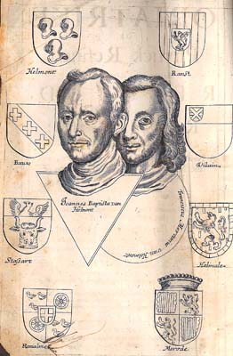 Van Helmont |
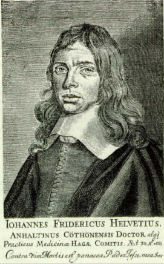 Helvetius |
Comment d'ailleurs le doute était-il possible, quand Van Helmont (1618) racontait avoir reçu d'une main inconnue un quart de grain du corps précieux avec lequel il avait transformé huit onces de mercure en or pur ! Et Helvétius, le célèbre médecin du prince d'Orange, l'adversaire déclaré de l'alchimie, n'avait-il pas aussi donné les preuves les plus concluantes en faveur de l'existence de la pierre philosophale, dans son Vitulus aureus quem mundus adorat et orat (1667) [voir bibliographie, Chevreul, critique de Hoefer et Idée alchimique, III] ? Lui, en effet, le sceptique, avait reçu d'un étranger un petit morceau de la grosseur d'un demi-grain de pavot, et, en présence de sa femme et de son fils, il avait converti sis drachmes de plomb en or, parfaitement contrôlé par la monnaie de la Haye (Histoire de la chimie, par M. Hermann Kopp, t. IV, 171) !
[ces recensions de transmutation ont fait l'objet de travaux tels que : An Investigation on the Activity Pattern of Alchemical Transmutations, JOAQUÍN PÉREZ-PARIENTE, Journal of Scientific Exploration, Vol. 16, No. 4, pp. 593–602, 2002 mettant en évidence une corrélation entre la durée du processus de transmutation, telle qu'elle est rapportée dans les textes et le « pouvoir transmutatoire » de la poudre de projection. Dans cette publication, Pérez-Pariente rapporte le cas de huit transmutations dûment documentées : Van Helmont, 1614 - Helvetius, 1667 - Seyler, 1675 (?) - Boyle, 1678 - C. Eisenberg, 1698 - Goetzius, 1716 - Colonna, 1717 - Cyliani, 1832. Notons que la référence à l'Adepte Cyliani paraît douteuse et qu'elle sort du cadre proprement historique. Sur les transmutations, cf. chimie et alchimie. Il ressort de ce travail que la poudre de projection se comporterait comme un agent catalytique... voir aussi :
(1999). The twelfth adept. In White, R. (Ed.), The Rosicrucian Enlightment Revisited (pp. 141–192). New York: Lindisfarne Books. In my opinion, the most notorious example of a piece of gold surviving for some years the projection has been reported by professor L. M. Principe, The Aspiring Adept (Princeton, NJ: Princeton University Press, 1998). In his book, professor Principe describes Boyle’s witnessing of a projection and the fact that he (Boyle) always carries with him a fragment of transmuted gold (op. cit., p. 105). Also mentioned in this book is a piece of silver transmuted into gold that Olaus Borrichius sent to the king of Denmark (op. cit., p. 260).
Veut-on d'autres preuves ? Le comte de Russ, directeur des mines, transforma deux livres et demie de mercure en or fin, et cela en présence de l'empereur Ferdinand III, à Prague, à l'aide d'un grain d'une poudre rouge qu'il tenait d'un certain Richthausen, et que celui-ci avait reçue d'un inconnu. On frappa avec cet or une grande médaille où était représenté le Dieu du soleil (l'or, tenant le caducée de Mercure (pour indiquer la production par le mercure), et avec cette inscription : Divina metamorphosis exhibita Prague, XV, Jan. an. MDCXLVIII, in praesentia Sac. Caes. Maj. Ferdinandis Tertii, etc. Selon J.-F. Gmelin, cette médaille se voyait encore en 1797, à la trésorerie de Vienne.
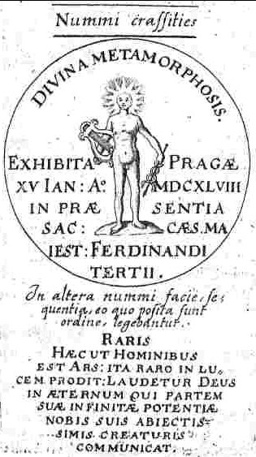
médaille de transmutation de Ferdinand III, 1648, figurant dans le Vitulus Aureus de Helvetius, p. 200 de la Bibliotheca Chemica Curiosa, tome I, de Manget
Les alchimistes racontent aussi que le landgrave Ernest Louis, de Hesse-Darmstadt, avait reçu d'une main inconnue un petit paquet contenant de la teinture rouge et blanche, avec la manière de s'en servir. Avec l'or qu'il retira ainsi du plomb, on frappa des ducats, et avec l'argent, les écus de Hesse au millésime de 1717 portant pour devise : Sic Deo placuit in tribulationibus. Il arriva probablement à ces amateurs d'alchimie ce qui advint au fameux J.-S. Semler, professeur de théologie à Halle (1791) (Histoire de la chimie, par M. Hermann Kopp, II, p. 271 - voir Traité d'or sur la pierre des philosophes et Aphorismes basiliens. JOHANN SALOMO SEMLER (1725-1791) : Unparteische Samlungen zur Historie der Rosenkreuzer, 3 parties, Leipzig (G. E. Beer) , 1786-1788), qui s'occupait, en 1786, d'une célèbre médecine universelle dont un certain baron de Hirsch faisait le commerce, sous le nom de sel d'air (Euftsal). Il croyait avoir découvert la production de l'or dans ce sel, humecté et tenu chaud. Il adressa, en 1787, à l'Académie de Berlin, une partie de ce sel avec l'or qui y avait poussé. Klaproth, qui l'examina, y trouva du sel de Glauber, du sel amer
[extrait de : Stöckhardt, Adolf, La chimie usuelle appliquée à l'agriculture et aux arts, Librairie agricole de la Maison rustique, 1861 -
Notez l'importance du sel amer dans l'art d'Hermès. Ce n'est pas la première fois que nous évoquons le sulfate de magnésie. On se tromperait, bien sûr, si l'on y voyait l'aimant des Sages : celui-ci peut être distingué dans la planche XV du Mutus Liber en forme de pierre herculéenne. Des détails de cabale n'échapperont pas, toutefois, à l'amoureux de science : la pierre serpentine figure notre dragon babylonien qui est occis par notre chevalier. Celui-ci y porte son glaive - huile de vitriol - pour l'ouvrir avant de le laisser en putréfaction. C'est là ce que les Adeptes appellent l'opération du Lion vert. L'aqua fortis permet de maintenir le sulphur
à l'état sublimé et
l'opération est réitérée. Nous obtenons
ainsi le lien du ou sel harmoniac. Cette phase de
l'oeuvre est encore appelée « laveures de Flamel ».
La planche XXI du Splendor
solis y fait directement référence. Voir Mercure de nature.] enveloppé dans un magma d'urine et de l'or en feuilles d'une assez grande dimension. Semler envoya aussi à Klaproth du sel, où il n'avait pas encore poussé d'or, ainsi qu'une liqueur qui
« contenait la graine d'or et fécondait le sel » d'air par la chaleur. »
Mais il se trouva que le sel était déjà mélangé avec de l'or. Semler croyait sérieusement à la production de l'or; il écrivit en 1788 :
« Deux verres portent de l'or ; tous les cinq ou six jours, je l'enlève, il y en a toujours de 12 à 13 grains ; deux ou trois autres verres sont en voie, et l'on distingue déjà les fleurs de l'or qui percent par le bas. »
Mais un nouvel envoi à Klaproth, en feuilles de 4 à 9 pouces carrés, fit voir que la qualité de la plante s'était altérée, car elle portait de l'or faux, du tombac.
[le tombac est un alliage dont il existe plusieurs variétés : il faut fondre ensemble seize livres de cuivre, une livre d'étain et une de zinc. Pour réaliser le tombac rouge, mettez dans un creuset cinq livres et demie de cuivre ; ajoutez, quand la fusion a lieu, une demi-livre de zinc : ces métaux se combineront et formeront un alliage rouge, plus brillant et plus durable que le cuivre. Quant au tombac blanc, on l'obtient ainsi : le cuivre est combiné avec l'arsenic, on les fond ensemble dans un creuset fermé, et en couvrant la surface de muriate de soude, pour prévenir l'oxidatio. Un alliage blanc et fragile apparaît alors.]
La chose s'éclaircit alors. Le domestique de Semler, chargé des soins de la serre, avait mis de l'or dans les verres pour faire plaisir à son maître ; par suite d'un empêchement du domestique, sa femme prit sur elle l'affaire, mais elle pensait que l'or faux revenait moins cher et remplissait le même but. Aux XIVe, XVe et XVIe siècles, on n'était pas aussi familiarisé, qu'au temps de Semler, avec les moyens de distinguer l'or ou l'argent vrai des mélanges qui leur ressemblent, et les fraudes grandioses commises par les faiseurs d'or n'étaient pas de nature à affaiblir la croyance à la transmuttation des métaux. Henri VI, roi d'Angleterre (1423), fit un appel, dans quatre décrets consécutifs, à tous les nobles, docteurs, professeurs et prêtres, pour qu'ils s'adonnassent, dans la mesure de leurs forces, à l'étude de l'art, afin de trouver les moyens de payer les dettes de l'Etat. [cette affaire rappelle celle des Nobles à la rose du temps d'Edouard III, en 1312 où Ramon Lull avait trempé. Voir chimie et alchimie, Elucidation du Testament, Chevreul, critique de Hoefer, Clavicule, prima materia] Les prêtres, pensa le roi, doivent pouvoir trouver la pierre philosophale, puisqu'ils savent transformer le pain et le vin en le corps et le sang du Christ. A l'aide de Dieu, ils doivent réussir à convertir en or les métaux communs. On peut juger de l'effet de ces décrets en considérant que le parlement d'Écosse ordonna une surveillance sévère dans tous les ports, et surtout à la frontière, afin d'empêcher l'introduction de la fausse monnaie. On trouve encore, dit-on, à Birmingham, des descendants de ces faiseurs d'or. [cette assimilation du lapis au vin et au corps du Christ allait en droite ligne dans le sens de l'interprétation qu'en ferait, au XXe siècle, un certain C.G. Jung. Voir Aurora consurgens et Ripley Scrowle. L'un des textes éclairant le mieux cette doctrine se trouve dans Aïon et aussi dans les Essais sur la symbolique de l'Esprit, trad. Albin Michel] Au XVIe siècle, il y avait des alchimistes à la cour de tous les princes : l'empereur Rodolphe II et le palatin Frédéric étaient surtout connus pour les protéger. On s'occupait d'alchimie dans toutes les classes de la société, et l'on sacrifiait des sommes considérables pour la découverte de la pierre philosophale, à peu près comme aujourd'hui les princes, les particuliers ou les compagnies font de foles dépenses pour des entreprises de mines de charbon ou de sel. Il surgit alors une foule d'aventuriers qui essayèrent de se faire passer auprès des grands seigneurs pour des adeptes, c'est- à-dire pour des possesseurs du grand secret; mais c'était là un jeu dangereux, car ceux qui réussirent quelque part à justifier leur qualité d'adeptes par des transmu-lations de métaux habilement executées, et qui en reçurent honneurs et richesses, finirent par échouer ailleurs, et leur fin consistait ordinairement à être pendus à une potence dorée, en habits couverts d'oripeaux. À d'autres, dont la fraude ne pouvait pas être prouvée, des princes cupides firent payer, par la prison et la torture, l'honneur d'être possesseurs de la pierre philosophale. Le traitement cruel que ces malheureux eurent à subir passait pour la plus grande preuve de la vérité de leur art (H. Kopp). Bacon de Vérulam, Luther, Spinosa, Leibnitz, croyaient à la pierre philosophale et à la transmutation des métaux. [voir bibliographie] Plusieurs arrêtés rendus par les facultés de droit du temps font voir quelles profondes racines ces idées avaient alors. La faculté de droit de Leipzig (1580), dans un jugement contre David Beuther, le déclara convaincu de possession de la pierre philosophale.
[voir :
Leiden MS. Vossianus Chym. F. 18. 391 folios. Paper. 310x200mm. 16th Century.
- 6. f280-281v Hans Jenitz: publie une attestation, délivrée par plusieurs notabilités de Sankt Joachimstadt en faveur des réussites alchimiques, surtout en matière d'arsenic, de feu Davidt Beutter [David Beuther.]
- 7. f282-322 Hans Jenitz [description of alchemical processes concerning fire of David Beuther.]
- 8. f323 [Letter from Gabriel Ortell to the Elector of Saxony on the verity of the processes with fire of David Beuther. Manly Palmer Hall [P.R.S.] MS. 115. 12 folios. 206x162mm. 18th Century.
[This is included in the Bacstrom Collection MS. 102, Vol. 10.]
Particular Processes of David Beuther. M.D. Essay Master and Philosopher. Written whilst he was in prison To His Electoral Highness Augustus Prince Elector of Saxony Philosopher and Adept published by Anonymus. Leipsig 1717. 8. translated from the German by S.B. 1798.]
Le même corps signa une consultation dans l'affaire de la comtesse Anne-Sophie d'Erbach contre son mari, le comte Frédéric-Charles. La comtesse avait donné asile, en son château de Frankenstein [sic Tankerstein], à un individu poursuivi pour braconnage; celui-ci, qui était un adepte, pour témoigner sa reconnaissance, transforma en or la vaisselle d'argent de la comtesse. Le comte en réclama pour lui la moitié, se fondant sur ce que la plus-value avait été acquise sur sa propriété, et lui revenait par le mariage. La faculté se prononça contre le comte, parce que, selon elle, l'objet en litige avait été
[site consulté :http://homepages.ihug.com.au/~panopus/parachemy/parachemyi1.htm
(From: IN THE PRONAOS OF THE TEMPLE OF WISDOM by Franz Hartmann)]
avant la transmutation, la propriété de la comtesse, et que celle-ci ne pouvait pas, par cette transmutation, perdre son droit de propriété. On n'est que trop disposé, de notre temps, à considérer comme une funeste aberration de l'esprit humain les opinions des disciples de l'école arabe, sur la trans-mutation des métaux ; cependant cette idée de la nature variable des choses répond bien à l'expérience commune, et précède toujours l'idée de la nature immuable. Ce n'est que depuis que Dalton a introduit dans la science la doctrine des particules définies non divisibles (les atomes), qu'on admet l'existence des corps simples ; toutefois l'idée qu'on y rattache semble si peu naturelle, qu'il n'est aucun des chimistes modernes qui envisage les métaux comme des corps indécomposables. Il n'y a pas longtemps encore que Berzelius croyait fermement à la nature composée de l'azote, du chlore, du brome et de l'iode. Les corps que nous appelons simples ne passent pas pour tels, parce que nous les croyons indécomposables, mais parce que, dans l'état de nos connaissances, nous ne pouvons pas démontrer scientifiquement leur décomposition ; mais il ne nous parait pas impossible que cette décomposition réussisse un jour. En 1807, les alcalis et les terres passaient aussi pour des corps simples, et H. Davy les a bien décomposés.
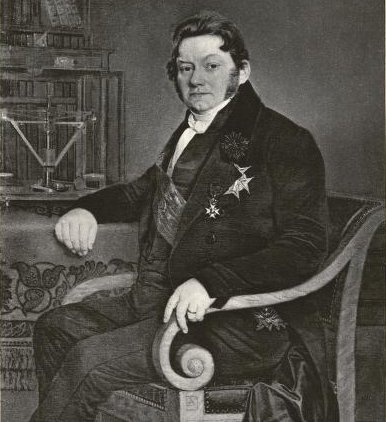
Jöns Jakob Berzelius (1779-1848)
L'imagination la plus vive, l'intelligence la plus subtile ne sauraitrien trouver qui agit sur l'esprit et sur l'activité des hommes plus puissamment et d'une manière plus persistante que l'idée de la pierre philosophale. C'est bien elle aussi, c'est la même puissance d'impulsion qui fit accourir au nouveau monde avec Christophe Colomb, et après lui, des milliers d'aventuriers, décidés à exposer leur fortune et leur vie; qui, de nos jours encore, pousse tant d'individus au delà des chaînes Rocheuses de l'Amérique, où ils vont répandre la civilisation de l'ancien monde. Pour savoir enfin que la pierre philosophale n'existe pas, il fallut examiner et observer, avec toutes les ressources du temps, tout ce quiétait accessible aux investigations, et c'est en cela précisément que consiste l'influence presque merveilleuse de cette idée. Sa puissance ne put être brisée qu'alors que la science eut acquis un certain degré de perfection. Pendant des siècles, quand des doutes surgirent, quand les travailleurs commencérent à se lasser, il arriva toujours à temps un inconnu mystérieux qui convainquit un homme digne de foi et éminent de la réalité du grand œuvre. Une personne étrangère à la science, qui prendrait la peine de lire une seule page d'un traité dechimie, serait émerveillée de la masse de faits isolés qui y sont consignés; chaque mot, pour ainsi dire, y exprime une expérience, un phénomène.
[là encore,Jung, à partir de 1930, eut à la fois l'intelligence et le courage de réaliser une synthèse magistrale de tous ces faits accumulés, rapportés à la psyché. Il n'est pas évident, néanmoins, que l'interprétation qu'il en a formulée soit à tous égards convaincante car il semble méconnaître la portée opératique du grand oeuvre pour ne conserver que ce qui ressortit de l'oratoire]
Toutes ces expériences ne se sont pas d'elles-mêmes présentées à l'observateur; il a fallu les chercher et les découvrir péniblement. Où en serait la chimie d'aujourd'hui sans l'acide sulfurique, qui est une découverte des alchimistes, vieille de plus de mille ans ou sans l'acide muriatique, l'acide nitrique, l'ammoniaque, sans les alcalis, les nombreuses combinaisons métalliques, l'alcool, l'éther, le phosphore, le bleu de Prusse ? [voir compendium] On ne saurait se faire une idée des difficultés qu'avaient à surmonter les alchimistes dans leurs travaux; ils imaginaient eux-mêmes leurs outils, leurs opérations, et ils étaient obligés depréparer de leurs propres mains tout ce qu'ils employaient.
L'alchimie n'a jamais été autre chose que la chimie elle-même. [ce n'était pas l'opinion de Fulcanelli] On est fort injuste envers les alchimistes, en les confondant avec les faiseurs d'or du XVIe et du XVIIe siècle. Il y eut toujours, parmi les alchimistes, un noyau de véritables expérimentateurs qui souvent, il est vrai, se faisaient des illusions, tandis que les faiseurs d'or se trompaient eux-mêmes et trompaient les autres. L'alchimie était la science, l'art de faire de l'or comprenait toutes les industries chimiques. On peut hardiment mettre en parallèle, avec les plus belles découvertes de notre siècle, ce que Glauber, Boettger et Kunkel ont produit sous ce rapport. [voir plan Chevreul] Quiconque ignore les services déjà rendus par lascience, trouverait tout aussi extravagantes que les idées des alchimistes certaines théories qui dirigent les travaux des chimistes modernes. Ce n'est pas que nous croyions à la transmutation des métaux, si vraisemblable pour les anciens,mais nous admettons la possibilité de réaliser des choses bien plus singulières. Nous sommes si habitués aux merveilles que rien ne nous étonne plus. En effet, nous fixons sur le papier les rayons du soleil, [voir héliographie dans Chevreul et Niepce] et nous faisons parcourir à notre pensée les plus grandes distances avec la rapidité de l'éclair. Nous faisons fondre le cuivre dans l'eau, et nous en coulons à froid des statues. Nous faisons congeler l'eau et même le mercure dans des creusets chauffés au rouge, et nous obtenons ainsi de véritable glace ou du mercure solide et malléable. Nous croyons possible d'éclairer de la manière la plus brillante dessilles entières avec des lampes sans flamme, sans feu, et auxquelles l'air n'a point d'accès. [on peut dire qu'il s'agit- par cabale - du feu de Vulcain à l'état de pureté : les hermétistes parlent alors de feu innaturel, voir cristallogénie] Nous préparons dans nos fabriques l'outremer, la plus précieuse des substances minérales, et nous croyons que demain ou après-demain quelqu'un trouvera le moyen de faire de magnifiques diamants avec du charbon de bois, des saphirs on des rubis avec de l'alun [cette prophétie de Liebig s'est réalisée : Marc-antoine Gaudin préparait vers 1850 le rubis à partir de tartre vitriolé] ; la magnifique matière colorante de la garance, la bienfaisante quinine ou la morphine, avec le goudron de houille.
[est-il nécessaire d'insister sur le bienfait immense que produit la morphine, de nos jours, dans le traitement antalgique de certaines maladies chroniques. Mais dans le même temps, les méfaits dévastateurs de l'héroïne ne doivent-ils pas être mis en exergue ? Ne voyons-nous pas, là encore, cette coexistence consubstantielle, pour ainsi dire, du Bien et du Mal dont la † forme l'alpha et l'oméga dans notre civilisation judéo-chrétienne ?]
Ce sont là autant de choses tout aussi précieuses, et même bien plus utiles que l'or.Tout le monde s'occupe de la découverte de ces choses, et personne cependant ne s'en occupe isolément : elles sont l'objet des recherches de tous les chimistes, en ce sens que les chimistes étudient les lois des transformations et des métamorphoses des corps, mais aucun d'eux ne prend pour unique tâche de sa vie la production du diamant ou de la quinine. Sans doute, s'il y avait un homme armé des connaissances nécessaires, qui voulut entreprendre ce travail , et qu'il fût animé du courage et de la persévérance des alchimistes, il aurait la chance de résoudre le problème ; les dernières découvertes qui ont été faites sur les bases organiques nous autorisent à le croire, et personne n'aurait le droit de se moquer de lui comme d'un faiseur d'or. La science a démontré que l'homme qui réalise toutes ces merveilles se compose d'air condensé ; qu'il vit d'air condensé et d'air non condensé ; qu'il se vêtit d'air condensé ; qu'il prépare ses aliments à l'aide d'air condensé, et que c'est encore par de l'air condensé qu'il met en mouvement , avec la rapidité du vent, les plus lourds fardeaux. Ce qu'il y a encore de plus singulier, c'est que des milliers de semblables boites d'air condensé, à deux pattes, viennent s'entre-détruire, dans de grandes batailles, avec de l'air condensé, afin de conquérir cette abondance d'air condensé nécessaire a leur entretien. Beaucoup de gens considèrent les propriétés de l'être immatériel, conscient, pensant et sensible qui habite ces boites, comme un simple effet de leur structure et de leur disposition intérieure; mais la chimie fournit la preuve irrécusable que, s'il en était ainsi, l'homme devrait être identique avec le bœuf ou avec l'animal le plus inférieur de l'échelle, puisqu'il ne diffère pas de ces animaux, sous le rapport de cette composition ultime et délicate qui échappe aux sens. Mais revenons à l'alchimie. Ou oublie trop, en la jugeant, que la science représente un organisme intellectuel où n'arrive la conscience, comme chez l'homme, que lorsqu'il se trouve à un certain degré de développement. Il est certain que les buts particuliers que les alchimistes cherchaient à atteindre concouraient tous à un but plus élevé : le chemin qui y a conduit est évidemment le meilleur. Pour bâtir un palais, il faut beaucoup de pierres, et il faut les extraire de la carrière ; il faut aussi beaucoup d'arbres qui ont besoin d'être abattus et taillés : le plan vient d'en haut, l'architecte seul le connaît. La pierre philosophale, qu'une aspiration vague et confuse faisait chercher aux anciens, n'est autre chose, dans son état de perfection, que la science chimique elle-même.
[Jung a montré que le lapis n'était autre qu'une projection dans l'âme de la matière d'une partie des contenus inconscients de la psyché. La question qui se pose est de savoir d'une part ce que représente l'âme de la matière; d'autre part ce que représente ce contenu projeté. Jung considérait qu'il s'agissait d'éléments appartenant au SOI - voir Aurora consurgens et Ripley Scrowle. Quant à l'âme de la matière, comme nous l'avons souligné supra, sa fonction, si ce n'est sa nature, est précisée en tout dans la Tabula Smaragdina. ]
La chimie, en effet, n'est-elle pas la pierre philosophale qui promet d'augmenter la fertilité de nos terres et d'assurer la prospérité à des millions d'hommes ? N'est-ce pas la chimie qui prétend faire produire au même champ, au lieu de sept, huit grains et davantage ? N'est-ce pas elle qui façonne toutes les parties du globe terrestre en produits utiles, que le commerce transforme en or ? N'est-ce pas elle, enfin, qui se charge d'approfondir les lois des phénomènes vitaux, et qui nous donnera les moyens de guérir les maladies, de prolonger la vie ? Chaque découverte livre à nos investigations des terrains nouveaux, plus vastes, plus féconds. C'est bien encore la terre virginale que nous cherchons dans les lois de la nature, et nous n'aurons jamais fini de la chercher, nons la chercherons toujours. C'est par ignorance de l'histoire qu'on a généralement une espèce de dédain, et même de mépris, pour la deuxième période de la chimie, appelée la période du phlogistique. Nous ne concevons pas, dans notre orgueil, que les expériences de Jean Rey [1, 2, 3, 4, 5], sur l'augmentation de poids des métaux par la calcination, soient restées inaperçues, tandis qu'à la même époque l'idée du phlogistique ait pu se développer et trouver des partisans. C'est qu'alors les efforts de tous les chimistes étaient tournés vers la coordination des faits acquis. Les observations de Jean Rey
[Essays sur la recherche de la cause pour laquelle l’estain et le plomb augmentent de poids quand on les calcine, G. Millanges, Bazas, 1630, 144 p. in-8° (BN : Rés. p. S 158). Découverte et preuve de la pesanteur de l’air (1630). Essais de Jean Rey Docteur en médecine. Edition nouvelle avec commentaire publiée par Maurice Petit, pharmacien de première classe, A. Hermann, Paris, 1907. Cf. infra l'article de Hallopeau et Poisson -]
furent sans influence, parce qu'elles ne semblaient avoir aucun rapport avec la combustion en général, et que d'ailleurs il y avait beaucoup de corps qui, dans les mêmes circonstances, semblaient devenir plus légers, ou même disparaître complètement. Le but de tous les travaux de Becher, de Stahl, et de leurs successeurs était précisément la recherche des phénomènes appartenant à la même, catégorie et dus à la même cause.

Georg Ernest Stahl (1660-1734)
C'est le grand mérite de Stahl d'avoir découvert et mis en lumière les relations qui existent entre la calcination des métaux et le phénomène de la combustion. Avant lui, on ne savait pas que le feu est encore contenu dans la rouille, que le soufre est encore renfermé dans l'acide sulfurique, et qu'on peut en extraire de nouveau le feu et le soufre.
[ ces trois remarques attirent l'attention : dire que le feu est contenu dans la rouille, c'est dire que le sulphur
-
premier état de l'anima  - est
inclus dans le spiritus abscondus . C'est
le but du Mercurius , par la circulation
permanente qu'il entretient et par la Force
qui en résulte, d'extirper le dragon de la prima materia
où il tient sa résidence]
- est
inclus dans le spiritus abscondus . C'est
le but du Mercurius , par la circulation
permanente qu'il entretient et par la Force
qui en résulte, d'extirper le dragon de la prima materia
où il tient sa résidence] Cest donc une découverte immense que celle de l'analogie qui existe entre la calcination des métaux et la production de l'acide sulfurique par le soufre, entre la revivification des métaux par les chaux métalliques et l'extraction du soufre de l'acide sulfurique. [cette revivification se nomme, en alchimie, la réincrudation et en psychologie, l'individuation - voir Jung Mysterium conjunctionis] Cette découverte est l'origine d'un progrès qui s'est continué jusqu'à nous ; elle renferme une vérité encore aujourd'ui incontestée, et indépendante des poids. Avant de peser, il fallait savoir ce qui était à peser; avant de mesurer, il fallait connaître les rapports qui existent entre les choses à mesurer.
[la planche 14 du Mutus Liber témoigne de ce que les alchimistes avaient ce sens moderne de la mesure. Ils savaient également - les récits de transmutation le montrent - que les métaux augmentent de poids à la calcination]
Nous estimons les faits en raison de leur immuabilité, et parce qu'ils sont te terrain d'où surgissent les idées ; mais un fait n'acquiert une valeur réelle que par l'idée même qui en découle. Stahl manquait de faits, mais l'idée lui appartient. Cavendish et Watt ont l'un et l'autre découvert la composition de l'eau : Cavendish établit le fait, Watt eut l'idée. Cavendish dit, l'eau naît d'air inflammable et d'air dephlogistiqué; Watt dit, l'eau se compose d'air inflammable [ gaz hydrogène] et d'air déphlogistiqué. [rappelons que l'air phlogistiqué est notre gaz azote et que l'air dephlogistiqué est notre oxygène, voir Chevreul critique de Hoefer, III] Entre ces deux expressions, la différence est grande. C'est d'ailleurs manquer de jugement que d'attacher une valeur exagérée aux simples faits, et le plus souvent cela ne sert qu'à déguiser la pénurie des idées. Il est des idées d'une étendue, d'une profondeur telles que, quoique entièrement usées, il leur reste encore assez d'étoffe pour occuper pendant tout un siècle l'esprit de plusieurs générations. Le phlogistique est une idée de ce genre. Il ne fut d'abord qu'une abstraction, et il importait peu, pour l'usage qu'on en faisait, qu'elle fût dépourvue de réalité ; l'idée était bonne tant qu'elle servait à coordonner des faits et à trouver de nouvelles généralisations. La notion du poids fit sans doute découvrir les relations que la combustion présente avec une certaine partie de l'air, mais elle n'ajouta rien à l'explication du phénomène. Stahl ne connaissait pas les rapports d'après lesquels l'air ou le corps en combustion augmentent de poids, et, aujourd'hui, nous ne savons pas davantage quelles relations existent entre le dégagement de lumière et de chaleur, et l'augmentation ou la diminution de poids dans la combustion. Ce que Stahl considérait comme essentiel, nous le négligeons : voilà la différence. Il faut laisser aux choses leur cours naturel. Les chimistes ont dû d'abord se familiariser avec les choses tangibles, avant de s'occuper des corps invisibles. L'idée que nous nous faisons aujourd'hui de la combinaison chimique nous vient de la chimie pneumatique: à l'époque de Stahl, on n'avait aucune notion de la nature chimique des gaz et de l'air. L'attraction chimique ne devint évidente pour les gaz qu'alors qu'on eut observé des disparitions, des diminutions de volume. Hales (1727) vit se dégager de l'air d'une grande quantité de corps, par l'action du feu ; tout ce qui avait l'état gazeux et élastique était pour lui de l'air; il ne savait pas distinguer de l'air commun le gaz carbonique et les gaz inflammables. Il considéra la diminution du volume des gaz au contact de l'eau ou par la combustion, non comme une dissolution ou comme une combinaison, mais comme une perte de la faculté de dilatation.
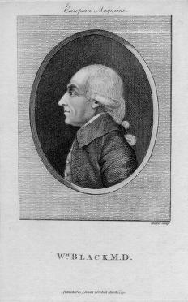
Joseph Black (1728-1799)
[dans la Poétique de l'Espace (PUF, 1957), Bachelard parle de deux phénomènes qui interviennent dans la compréhension et l'intégration d'un poème : d'abord la résonance, ensuite le retentissement. Nous pouvons comprendre la résonance comme l'intégration du MOI et du ÇA, voir Aurora consurgens. Quant au retentissement, il faut y voir l'intégration du MOI au SOI. Par ailleurs, Bachelard emploie l'expression de « conscience rêveuse » : voilà qui rappelle le concept d'imagination active défini par Jung et M.-L. von Franz (trad. la Fontaine de Pierre, 1989). La résonance ressortit de la « simple perception »; le retentissement, de la « sophistique ». C'est-à-dire, qu'il y a d'abord impression sensorielle et/ou sensitive puis expression, voir ce que nous en disons dans le commentaire sur le chef d'orchestre Sergiu Celibidache.]
Cette division est entièrement fausse quant aux sciences inductives. L'éclaircissement d'un phénomène exige trois conditions : il faut d'abord étudier le phénomène sous toutes ses faces, puis déterminer dans quelles relations il se trouve avec d'autres phénomènes, et enfin, quand ces rapports sont établis, mesurer ces rapports, les formuler par des nombres (On connaît depuis les temps les plus anciens l'effervescence du calcaire et de la potasse par les acides; ce n'est qu'au XVIIe siècle qu'on s'aperçut que ce phénomène est du au dégagement d'une espèce d'air, différent de l'air commun ; que cet air particulier se rencontre dans les eaux minérales, qu'il se produit dans la fermentation et dans la combustion du charbon ; que les animaux y sont asphyxiés, et que la flamme s'y éteint. Il se passa des siècles avant qu'on connût le phénomène de l'effervescence sous toutes ses faces. Cette connaissance acquise, on découvrit que la causticité ou la non causticité de la chaux et des alcalis dépend de l'absence ou de la présence de l'acide carbonique ; que le durcissement du mortier à l'air est dû à une fîxation d'acide carbonique ;que le dégagement de l'acide carbonique, dans la fermentation du vin et de la bière, dépend de la décomposition du sucre, etc. Finalement on décomposa l'acide carbonique, on détermina sa composition, sa chaleur spécifique, sa chaleur latente, et l'on établit les proportions d'après lesquelles il se combine avec la chaux et les oxydes métalliques, ainsi que les rapports de dépendance de son état gazeux avec la chaleur et la pression.). La science chimique embrasse tous les phénomènes du monde matériel qui sont déterminés par les mêmes causes; elle s'est développée dans trois périodes qui correspondent aux trois conditions nécessaires à la connaissance de chaque phénomène séparément.
- Dans la première période, toutes les facultés de l'observateur se sont concentrées sur les propriétés des corps. C'est la période de l'alchimie.
- Dans la seconde période, on a déterminé les relations qui existent entre ces différentes propriétés, et on les a rattachées les unes aux autres. C'est la période de la chimie phlogistique.
- La troisième période, enfin, est celle où nous nous trouvons : nous précisons par les poids et les mesures les rapports de dépendance qui existent entre les propriétés des corps.
Les sciences inductives commencent par la matière; puis arrivent les idées justes, et enfin, les mathématiques, avec leurs nombres, qui achèvent l'œuvre. L'histoire politique des peuples présente également trois époques. Dans la première, les attributs de l'homme se développent en même temps que leurs contraires; la faiblesse est soumise à la force; la sagesse, l'intelligence sont révérées comme des attributs divins; les conditions générales de la vie sociale se résument dans des commandements commençant tous par les mots, « tu dois »; les hommes ont des devoirs, ils n'ont pas encore des droits. Dans l'époque suivante se développent tous les rapports de dépendance entre tes différents attributs; la lutte entre les attributs contraires conduit aux lois; de la conscience du droit surgit la conscience du juste; tes exigences collectives des droits semblables produisent les pouvoirs; la lutte entre les pouvoirs opposés engendre tes révolutions. Une révolution est le prélude d'un nouvel équilibre. Dans la dernière époque, enfin, les rapports de dépendance entre tous les attributs, entre tous les droits, entre tous les pouvoirs, sont définitivement établis dans la société, de manière à assurer à chaque individu le libre et complet développement de ses facultés, sans porter préjudice à la liberté de son voisin. Alors les révolutions sont finies.
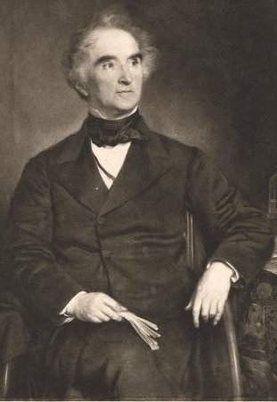
Justus Freiherr von Liebig (1803-1873)
Suite de l'histoire de la chimie.— Fausse direction des savants du moyen âge; Influence de l'Église. — Progrès déterminé par d'importantes découvertes sur la terre et dans le ciel, par l'imprimerie et par une méthode d'investigation plus rationnelle, — Opinion d'Aristote sur l'origine et sur les propriétés des corps, les quatre éléments,—Système médical de Galien.— Ses opinions sur l'efficacité des remèdes. Rapport entre ces opinions et la pierre philosophale.— Adoption de trois Éléments nouveaux : le soufre, le mercure, le sel. Changement du sens primitif de ces mots. — Vertu médicamenteuse de la pierre philosophale. Introduction des produits chimiques dans la thérapeutique. — Paracelse. — Ressemblance entre les opinions des médecins modernes et celles de Galien et de Paracelse.
D'innombrables germes de la vie intellectuelle remplissent l'univers, mais ils ne trouvent un sol propice que dans de rares esprits, qui vivifient l'idée, venue on ne sait d'où, qui savent approfondir les secrets de la nature et les rendre compréhensibles pour tous.
Les conquêtes de l'esprit humain, les progrès de la science ne sont pas liés aux hauts faits des princes ou des guerriers puissants, mais aux noms immortels de Christophe Colomb, de Copernic, de Kepler, de Galilée, de Newton. L'Église, par l'empiétement du dogme sur toutes les branches du savoir, et une fausse philosophie, arrêtèrent pendant plus de mille ans, jusqu'au xiv siècle, le libre essor de la pensée humaine. La philosophie scolastique anéantit toute recherche du vrai par un système d'instruction assez semblable à celui des savants chinois, qui éprouvent un souverain plaisir à la lecture d'une page de noms dénués de sens. Semblables à un arbre qui, entravé dans sa croissance, se rabougrit et se contourne bizarrement, les facultés les plus nobles dépérirent alors et s'usèrent dans les efforts d'une dialectique subtile. Des hommes d'une réputation et d'un savoir incontestés écrivirent des volumes sur les orages, sur les pluies de sang, où il était question de tout, excepté de ces phénomènes. Les intelligences les plus distinguées s'occupèrent de questions et de recherches qui passeraient aujourd'hui pour des signes certains d'aliénation mentale. Ainsi, il y eut des discussions sur la question de savoir si Adam, tant qu'il avait été sans péché, avait aussi connu le Liber sententiarum de Pierre Lombard (mort évêque à Paris, en 1164). On écrivit des traités sur l'âge et le costume de l'ange qui avait apporté à la vierge Marie le message divin ; on examina si l'on trouve aussi des excréments au paradis, si les anges parlent grec ou hébreu, combien de milliers d'anges peuvent tenir sur la pointe d'une aiguille sans être serrés, etc. Des savants en renom publièrent une foule d'écrits sur le don que possédaient les rois de France et d'Angleterre de guérir les goitres par le simple attouchement ; ils cherchèrent à démontrer si ce don merveilleux était inhérent au trône ou à la famille, car ils le comptaient parmi les forces secrètes dont l'expérience avait suffisamment confirmé l'existence. À l'époque de la philosophie scolaslique, l'humanité manqua donc entièrement d'un guide expérimenté pour suivre le véritable sentier de la science. Elle apprécia trop peu et elle négligea même entièrement le trésor de connaissances légué par l'antiquité, qui fut ainsi perdu pour elle. Toutes les questions de physique furent alors résolues par des subtilités de dialectique. En renonçant ainsi à l'expérience, qui, elle seule, donne le savoir, ou bannit la véritable science. Faute d'exercer la pensée, on oublia lu manière de poser exactement les questions relatives aux causes des phénomènes, et l'on désapprit à les observer, à en saisir les liens par l'expérience. Cet état intellectuel fait comprendre l'inlluence, sur les idées d'alors, de l'astrologie, de la cabale, de la chiromancie, de la croyance aux sorciers, aux loups-garous, aux magiciens, et il n'est pas étonnant que, plusieurs siècles après, on considérât encore les maladies comme des punitions du ciel, ou comme l'œuvre de Satan, et les prières, les amulettes, l'eau bénite, les reliques, comme les moyens de guéri-son les plus efficaces. Ces aberrations singulières se rencontrèrent même chez les classes lettrées, comme le prouve entre autres l'histoire de la dent d'or
(Cette dent miraculeuse s'était développée dans la mâchoire d'un enfant de dix ans, natif des environs de Schweidnitz en Silésie. Jacques Horst, médecin de la ville, ayant entendu raconter l'anecdote à Helm» staedt, où il était professeur (1595), écrivit sur elle un livre fort singulier, dans lequel, sans douter un seul instant de la véracité du fait, il range l'apparition de la dent au nombre des phénomènes surnaturels et la fait dépendre des constellations sous lesquelles l'enfant était né. En effet, le 22 décembre 1586, époque à laquelle cet enfant était venu au monde, le soleil se trouvait en conjonction avec Saturne dans le signe du Bélier. Cette cause surnaturelle, déterminant une augmentation de chaleur, accrut prodigieusement la force nutritive, de sorte qu'au lieu d'une substance osseuse, ce fut de l'or qui se trouva sécrété. Horst passe ensuite à l'examen des prédictions qu'on peut tirer du phénomène. De même que les éclipses de soleil et les tremblements de terre sont annoncés par des signes particuliers, de même on doit considérer cette dent comme l'indice d'un siècle d'or. L'Empereur chassera de l'Europe les Turcs, ces ennemis de la chrétienté, et alors on verra commencer le siècle d'or et un empire qui durera des milliers d'années. Pour prouver le fondement de cette prophétie, Horst cite le second chapitre de Daniel, dans, lequel la tête d'or
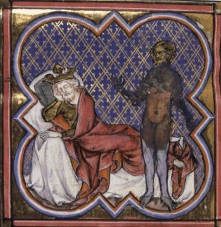
songe de Nabuchodonosor, Manuscrits Français 157, Guiard des Moulins, Bible historiale, France, Paris, XIVe siècle
de la statue annonce la formation d'un grand État [Liebig résume ici Dn, 2, 26 où il est question de la statue aux pids d'argile, voir Ripley Scrowle]. Mais comme la dent d'or de l'enfant silésien était la dernière de sa rangée, la puissance de l'Empereur s'anéantira aussi peu de temps avant l'arrivée du Christ ; et comme la dent se trouvait sur le côté gauche de la mâchoire inférieure, cette position indique que le siècle d'or sera précédé de grandes misères. Deux autres praticiens, Martin Ruland le jeune, de Lavingen, alors médecin à Ratisbonne, d'où il se rendit ensuite à Prague, [le Lexicon Alchimiae de Rulandus est de la main de Ruland le vieux, voir Ferguson, II, p. 303] et Jean Ingolsteller, de Nuremberg, disputèrent non pas sur le fait, car tous deux paraissaient en être convaincus, mais sur la théorie et sur l'explication qu'on en pouvait donner. Le premier avait tenté de l'attribuer à des causes naturelles, mais Ingolsteller, autant qu'on en peut conclure d'après le titre de son ouvrage, voulut prouver que c'était un vrai miracle, un événement surnaturel. Duncan Siddel, [sic Liddel, de dente aureo, in-8°, Hamb. 1628] Ecossais de naissance, publia une très bonne réfutation des chimères que Horst avait avancées, Balthazar Caminaeus avait déjà remarqué, vers la fin de l'année 1595, que depuis quelque temps le miraculeux enfant ne se laissait plus examiner la bouche par les savants, et devenait presque furieux lorsqu'on voulait l'y contraindre; ce qui fit naître le soupçon que la célèbre dent était simplement recouverte d'or, et que ses racines n'étaient point formées du même métal, (Sprengel, Histoire de la médecine, t. III.) -[ Liebig cite Kurt Sprengel, t. III, Section neuvième, chapitre premier - Causes préparatoires, p. 247-250. Ruland publia là-dessus : Ruland, nova et in moni memoria inaudita historia de aureo dente, qui nuper in Selisia puero cuidam septenni (decenni) succrevisse animadversus est, in-4°. Francof. 1595 - Ej. demonstratio judicii de aureo dente pueri silesii adversus Ingolstetteri responsionem. in-8°. Francof. 1597 et Ingolstetter, De aureo dente pueri silesii responsio ad judicium Rulandi, qua demonstratur, neque dentem, neque ejus generationem naturalem esse. in-8°, Lips. 1596 -] )
qui fit tant de bruit en Allemagne, vers la fin du XVIe siècle. Lorsque Christophe Colomb défendit son opinion sur la forme de la terre et sur la possibilité d'en faire le tour, devant le collège de Salamanque, composé des plus savants professeurs d'astronomie, de géographie, de mathématiques, et des dignitaires les plus éminents de l'Église, la majorité des assistants le prit pour un visionnaire ridicule, ou pour un aventurier digne de mépris. Aucune discussion scientifique n'exerça plus d'influence sur le développement intellectuel de l'humanité. Elle fut l'aurore d'un nouveau jour, le précurseur de la victoire qu'allait remporter la vérité sur la foi aveugle du temps. À cette époque, les preuves mathématiques perdirent leur valeur, quand elles semblaient contraires à certains passages de l'Écriture ou à certaines interprétations des Pères de l'Église. Comment la terre pourrait-elle être ronde, dit-on, puisqu'on lit dans les Psaumes que le ciel est tendu comme une peau [ce qui en un sens n'est pas faux si l'on tient compte que le cosmos est fibré ; Newton l'appelait le sensorium dei] ; et quand saint Pierre, dans sa lettre aux Hébreux, compare le ciel à un tabernacle ou à une tente déployée sur la terre, comment nier encore qu'elle soit plate ? [il peut s'agir d'une allusion à l'Épître aux Hébreux, He, 9, 2. Son auteur est inconnu] Lactance ne s'est-il pas prononcé contre l'existence des antipodes.
« Y aurait-il quelqu'un d'assez fou pour croire qu'il y a des hommes dont les pieds sont placés contre les nôtres, qui marchent les jambes en l'air et » la tête en bas; pour croire qu'il existe une contrée où tous les objets sont sens dessus dessous, où les branches des arbres poussent de haut en bas, où il » grêle, neige et pleut de bas en haut. »
Saint Augustin ne dit-il pas aussi que la doctrine des antipodes est entièrement incompatible avec les racines historiques de la foi chrétienne ?
« Car celui qui affirme qu'il existe des pays habités de l'autre côté de la terre, admet par cela même qu'il y a là des peuples ne descendant point d'Adam, puisqu'il aurait été impossible aux descendants d'Adam de traverser l'Océan pour y arriver. Une semblable opinion détruirait toute la véracité de la Bible, qui dit explicitement que tous les hommes descendent des mêmes parents. »
Quelle prétention, pour un homme du commun, de vouloir faire une si grande découverte, quand la forme du monde a fait l'objet des méditations de tant de philosophes et de savants, quand tant de hardis marins y ont navigué depuis dos milliers d'années ! Ainsi dirent les adversaires du grand homme. Deux ans après, Christophe Colomb revint des Indes. La terre était étroite et petite, elle était une sphère, il y avait décidément des pays habités de l'autre côté de l'hémisphère. Non seulement la terre, le ciel aussi contredisait les doctrines des plus hautes illustrations cléricales. Avec Copernic, en effet, la terre cessa d'être le centre du monde ; elle n'était plus seulement petite, étroite, sphé-rique, elle n'était aussi qu'un simple point dans un espace immense, une petite planète se mouvant autour du soleil. Comme surpris par un tremblement de terre, le monde chrétien fut alors saisi d'une terreur inexprimable; il sentit s'ébranler sous lui ce que l'habitude et la réflexion lui avaient fait prendre pour de plus ferme et de plus solide; les découvertes de la science lui inspirèrent la peur et le doute. La terre n'était plus le centre de l'univers, la voûte du ciel avait perdu ses appuis, le trône de Dieu avait perdu sa base, il n'y avait plus ni haut ni bas. Tout l'édifice de la foi était brisé, anéanti ; la vérité était devenue l'erreur. Dans la
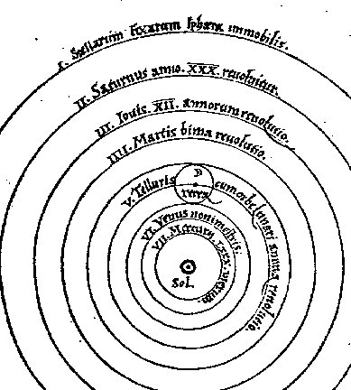
les sept sphères du monde copernicien, De Revolutionibus Orbium Coelestium, Libri VI, Norimbergae,1643
première moitié du XVIe siècle, de nombreuses prophéties rattachèrent la découverte du nouveau monde à la destruction prochaine de l'ancien monde; elles témoignent de l'agitation profonde que les nouvelles découvertes produisirent dans les esprits.
Après que Christophe Colomb eut pris à l'Océan ses terreurs et que Copernic eut enseigné la confiance dans la puissance de l'observation, qui n'admet d'autre autorité que celle de la raison, d'autres hommes éminents s'armèrent de courage pour aller explorer de nouvelles régions intellectuelles. Une impulsion puissante fut donnée dans toutes les parties de la science, et, semblable au cœur qui imprime au sang tous les mouvements du corps humain, l'invention de l'imprimerie par Gutenberg (Gutenberg inventa l'imprimerie l'année même de la naissance de Christophe Colomb (1436) vint répandre une vie bienfaisante dans le nouvel organisme intellectuel. Au XVe siècle, après l'établissement des nombreuses universités en Europe (1300, Oxford; 1347, Prague; 1384t Vienne; 1385, Heldelberg; 1388, Cologne; 1392, Erfurth; 1401, Cracovie; 1400, Wursburg; 1409, Leipzig), après la conquête de Con-slantinople par les Turcs (1458), et la propagation de la science grecque en Occident, l'attention des savants se porta enfin sur les trésors intellectuels laissée par les Grecs et les Romains. Ils s'inspirèrent de ces modèles inimitables, ils s'éclairèrent de leur lumière vivifiante, et bientôt ils brisèrent les chaînes de la scolastique qui avaient tenu leur esprit emprisonné. Ils reconnurent alors dans la nature une source inépuisable de connaissances pures, qui leur apparurent comme une nouvelle Atlantide noyée dans la mer de l'ignorance. Vers la même époque surgit un champion vigoureux pour la défense de la pureté de la foi. Luther dépeint fort bien cet engouement pour les sciences physiques qui s'empara des esprits au temps de la réforme.
« Nous sommes maintenant, dit-il, dans l'aurore de la vie future, car nous allons de nouveau acquérir la con-naissance des choses créées que nous avions perdue par la chute d'Adam. Nous envisageons la créature plus hardiment que jamais sous le régime de la papauté. Mais Erasme ne s'en soucie pas; il s'inquiète peu de savoir comment le fruit se prépare et se façonne dans le ventre de la mère. Nous autres, grâces en soient rendues, nom commençons aussi à comprendre, dans la simple fleur, les merveilles du Créateur, quand nous pensons à sa toute-puissance, à sa bonté suprême. »
La nature mit en œuvre des forces extraordinaires, pour assurer le triomphe de la raison, au commencement de cette lutte des nations européennes contre la tyrannie des prêtres et des princes, de cette lutte de la vérité contre la superstition et l'erreur. Une foule des plus grands hommes se suivirent, sans interruption jusqu'à ce que le grand œuvre fût accompli et que le succès fût assuré. Kepler naquit cent ans après Copernic; Newton vint au monde l'année même de la mort de Galilée. L'Église au moyen âge avait établi une espèce de science universelle, qu'elle avait consolidée de toute l'autorité de la foi religieuse. Toute erreur contraire il cette science était un vice, toute opposition aux doctrines théologiques, une hérésie niant les révélations du ciel; la torture et le bûcher attendaient le libre penseur. L'Église prit naturellement ombrage de la diffusion des sciences physiques. Une caste ignorante et jalouse y vit le plus grand danger pour son pouvoir; car, à mesure que se dévoilèrent les lois des phénomènes, les causes surnaturelles durent aussi disparaître à l'aide desquelles les prêtres dominaient les esprits. Cent ans après Luther, Galilée fut contraint par l'Église de nier le mouvement de la terre. Il abjura son hérésie dans la prison de l'inquisition, à genoux et en chemise. Le fameux e pur si muove qu'il murmura en se levant, démontre bien la puissance irrésistible du fait établi. On ne saurait lire sans émotion la lettre célèbre qu'il écrivit, à ce propos, à la grande-duchesse douairière Christine; elle ne réussît cependant pas à convaincre ses adversaires. Toutes ces entraves, d'ailleurs, ne purent arrêter l'essor des sciences, pas plus que, dans le siècle suivant, la guerre de trente ans ne put s'opposer aux progrès des nouvelles idées religieuses ; car l'erreur passe, tandis que la vérité est éternelle. L'erreur n'est que l'ombre projetée par la vérité, quand la marche de ses rayons est arrêtée dans leur passage à travers l'esprit épais et opaque de l'homme. La chimie aussi marcha vers une révolution dans ce temps remarquable : elle se confondit avec la médecine et prit ainsi une direction nouvelle, entièrement différente. L'alchimie avait forgé les armes avec lesquelles la chimie allait conquérir un nouveau terrain dans la médecine, et mettre fin à la domination séculaire du système de Galien. La médecine subit une grande et salutaire révolution, quand, renonçant enfin à la foi dans l'autorité, elle reconnut l'insuffisance et les erreurs des théories qui avaient eu cours jusqu'alors sur la nature et les propriétés des corps. La nouvelle lumière fut une acquisition des alchimistes; ce fut elle qur transforma complètement la doctrine des philosophes anciens sur les causes des phénomènes.
De tout temps, l'homme a toujours cherché à se rendre compte de l'origine et des propriétés des choses. Le procédé le plus court semble être celui des mathématiciens qui étudient sans moyens extérieurs les lois des figures mathématiques. C'est la précisément la voie qu'avaient choisie les philosophes grecs pour arriver à la connaissance des lois de la nature. Considérant les propriétés si variées des corps comme des choses en elles-mêmes, ils avaient cherché à relier leurs observations par le raisonnement, et à déterminer ainsi les propriétés communes à tous les corps. La génération et les propriétés de toutes choses supposent, selon Aristote, trois espèces d'agents fondamentaux. La première produit la matière sans propriétés (ulh) ; la seconde communique à la matière les caractères de la forme (eidoV); la troisième comprend les causes (ou les forces, dans le sens des mots, force médicamenteuse , force de nutrition) qui altèrent la matière et la privent de ses propriétés (sterhsiV, privation).
[les deux premiers agents correspondent en alchimie d'une part au chaos ou dragon; d'autre part au sel
. La
privation correspond à l'absence de forme, à
l'état amorphe: on est end roit d'y trouver le spiritus
abscondus qui monte des corps morts dans la figure 8 du Ros. Phil, voir
supra. Ce principe de privation ressortit donc du Mercurius ] Ce qui précède le changement de propriétés dans la matière, c'est la cause (to poioun, l'agent) ; ce qui suit ce changement, c'est l'effet (tiloV, le but). D'après cela, les propriétés des choses matérielles seraient donc semblables aux couleurs que le peintre fixe sur la toile pour en faire un tableau, ou aux habits qui donnent la forme à l'homme, et qu'on peut mettre et retirer. Cette idée a été la base de l'alchimie et du premier système médical.
[nous sommes d'accord avec cette idée de propriété au sens où il s'agit du concept de l'accrétion de la forme, déterminée par un agent qui infuse à un corps, au départ pourvu d'esprit - animus
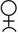
- mais dépourvu d'âme - anima - le
principe tinctorial]Il serait difficile, sans autre moyen de perception que les sens, de distinguer plus de quatre propriétés appartenant à tous les corps. Les corps présentent à l'œil et au goût une infinité de variétés: il y en a d'incolores et de colorés, de sapides et d'insipides, d'odorants et d'inodores. Mais tous les corps sont humides ou secs, chauds ou froids. Tout ce qui est tangible possède deux d'entre ces propriétés. Du corps est ou solide ou liquide, il possède une certaine température. Ces propriétés, dit Aristote, sont évidemment opposées, car le froid peut être neutralisé par le chaud, le sec peut être détruit par l'humide. [voir Idée alchimique, V - Atlas de Chevreul] Les corps deviennent solides par l'action simultanée de deux propriétés non contraires, comme le sec et le froid; ils deviennent liquides ou aériformes par l'humide ou le chaud. On conçoit ainsi les rapports qui existent entre ces différentes propriétés ; non seulement ces propriétés fondamentales déterminent la nature froide ou chaude, mais aussi la densité ou la légèreté : le froid est la cause de la densité, car il rapproche les parties matérielles ; la légèreté est produite par la chaleur. Toutes les autres propriétés sont dans un rapport défini avec les quatre propriétés fondamentales, car la couleur, l'odeur, la saveur, l'éclat, la dureté des corps, etc., éprouvent un changement par une addition ou par une soustraction d'humidité, de chaleur, de sécheresse ou de froid. Il est clair, dit Aristote, que toutes les propriétés qu'on peut percevoir dans les corps matériels sont sous la dépendance de ces quatre propriétés fondamentales; car, à mesure que celles-ci varient, toutes les autres propriétés changent en même temps : il est donc évident que ces autres propriétés sont déterminées par les quatre propriétés fondamentales ou élémentaires. On ne saurait contester la justesse de cette abstraction, en tant qu'elle s'applique aux propriétés qu'on constate dans les corps par la simple perception. La différence qui existe entre celle opinion et nos idées d'aujourd'hui consiste en ce que nous attribuons à deux causes contraires, au lieu de quatre, l'état liquide, solide et gazeux, ainsi que la température. On admet encore, de nos jours, que toutes les propriétés physiques des corps dépendent, dans une certaine mesure, de la force de cohésion et du calorique.
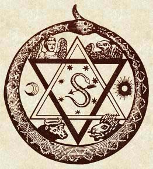
les quatre Éléments assimilés au Tétramorphe
Entre quatre choses, dit Aristote, six combinaisons deux à deux, six couples sont possibles. Mais quand deux propriétés contraires s'accouplent, comme le froid et le chaud, l'humide et le sec, elles s'annulent réciproquement, et le couple ne peut pas être perçu par les sens. Il ne reste donc que quatre combinaisons qui s'accordent avec les quatre corps dont se compose le globe. La terre, comme représentant, du solide, est froide et sèche ; l'eau est froide et humide ; l'air est humide et chaud ; le feu est chaud et sec. C'est donc par ces couples que se produisent les quatre éléments matériels : ces quatre éléments donnent naissance à tous les autres corps, ils sont contenus dans tous. Les différences outre les propriétés des autres corps dépen-dent uniquement du rapport suivant lequel les quatre éléments sont réunis : l'élément prédominant communique au corps ses propriétés. Comme le fait voir la figure suivante, deux corps élémentaires partagent toujours une des propriétés fondamentales : [voir cristallogénie et Idée alchimique, V, tableau n°1]
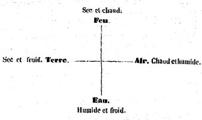
Il est évident, d'après cela, que lorsqu'on enlève au corps aériforme, par le froid, la propriété fondamentale du chaud, l'air peut être converti eu eau; que, de même, l'eau peut être transformée en air par le chaud, en terre par le sec. Suivant Aristote, le feu implique l'idée de clarté et de sensation; l'eau et l'air, celle de transparence; la terre, celle d'opacité. Les couleurs se produisent par le mélange du feu et de la terre. [ce mélange est l'objet de la réincrudation, c'est-à-dire, pour Jung, de l'individuation] La transparence du cristal de roche provient de l'eau. (On dit encore aujourd'hui : un diamant d'une belle eau. - voir pierres précieuses I -) Mais l'eau est aussi une partie essentielle des yeux, comme l'air est la base de l'ouïe; l'air et l'eau, celle de l'odorat; la terre, celle du toucher. La saveur est déterminée par l'humidité : plus les parties sapides adhèrent à ta langue, plus le corps est amer ; plus elles se dissolvent, plus le corps est salé. Mais quand les parties sapides sont échauffées et échauffent par cela même les parties de la bouche, il se produit la saveur acre ; lorsqu'elles entrent en fermentation et développent des bulles, la saveur est acide. Dans tous les cas, les propriétés physiques, exactement perçues, des choses agissant sur les sens sont considérées comme les causes ou les conditions des phénomènes. L'effet perçu est donc envisagé comme la cause même de l'effet. On explique donc le phénomène en décrivant simplement ses caractères. Ces doctrines de la philosophie grecque servirent à Galien pour édifier les bases du premier système théorique de médecine. Suivant Galien, toutes les parties du corps organisé naissent du mélange, en proportions variables, des quatre propriétés élémentaires. Dans le sang, elles sont uniformément mêlées ; dans le mucus, c'est l'eau qui prédomine ; dans la bile jaune, le feu ; dans la bile noire, la terre. Les quatre tempéraments reposent sur la prédominance de ces quatre sucs cardinaux. [les alchimistes reprendront à leur compte le concept de bile dans la description de leur matière et de ses états successifs] La santé est un état d'équilibre, déterminé par une qualité appropriée des parties homogènes (des organes), et par un juste mélange des éléments. Ces rapports sont troublés dans l'état du maladie: la maladie est un état contre nature de la forme ou du mélange. Par reflet d'une disproportion des propriétés élémentaires, les humeurs se trouvent dans un état d'échauffement, de refroidissement, d'humidité ou de sécheresse. Quand le mouvement des humeurs est arrêté et que la transpiration est troublée, les humeurs se corrompent et les différentes fièvres se produisent. La chaleur contre nature, propre à la fièvre, est une conséquence de cette putréfaction. La fièvre quotidienne, tierce ou continue, résulte de la putréfaction du mucus , de la bile jaune ou de la bile noire. Quant à la vertu des médicaments, Galien l'attribue à leurs propriétés fondamentales : ils sont selon lui, chauds ou froids, humides ou secs. Un remède, suivant les proportions de la propriété fondamentale du chaud, peut échauffer insensiblement, ou d'une manière sensible, peu ou beaucoup ; chaque qualité possède quatre semblables degrés d'action. Les substances d'une saveur mordicante sont des médicaments chauds; celles d'une saveur fraîche sont des médicaments froids. La guérison, le rétablissement de la santé repose, suivant Galien, sur la restitution de la qualité manquante ou sur la privation d'une qualité dominante. Dans ce système logique, toutes les maladies et l'efficacité de tous les remèdes sont ramenés à un très petit nombre de causes. Les maladies, comme les médicaments, se rangent en un certain nombre de rayons; quand on a reconnu la place occupée par une maladie, le médecin trouve, dans le rayon opposé, les moyens propres à opérer la guérison. Il sait d'où vient la maladie, il sait pourquoi le remède guérit.
La méthode expérimentale, qui avait conduit Hippocrate à une riche moisson d'observations et à une admirable diététique, fut ainsi remplacée par une théorie qui relia les faits, qui les coordonna et en donna l'explication. L'art du médecin de Cos pouvait s'apprendre par imitation; le nouveau système se prêtait infiniment mieux à l'enseignement et facilitait l'étude.
[La doctrine de Galien sur la nature est assez confuse : ici il en fait une force, et là un être ; tantôt il entend ce mot dans le sens universel, tantôt dans le sens particulier ; aussi est-il très-difficile, pour ne pas dire impossible, de tirer quelques notions générales des diverses délinitions que nous trouvons dans ses nombreux ouvrages, où les opinions de ses devanciers sont presque toujours placées à côté de celles qui lui sont propres. Ainsi Galien admet, dans plusieurs passages, la définition que l'on retrouve le plus souvent dans les écrits hippocratiques, c'est-à-dire que la nature est la substance universelle formée par le mélange des quatre éléments quelquefois, des quatre humeurs. Ailleurs , on lit : « La nature est la substance première qui forme la base de tous les corps nés et périssables, » ou bien encore « la nature est une force, une faculté mise en nous, qui gouverne le corps avec ou sans notre volonté. » - voir Charles Daremberg, Galien considéré comme philosophe, Paris, Fain et Thunot ]
Les philosophes grecs, comme Galien, n'avaient aucune notion des propriétés particulières qui se manifestent par le contact des corps hétérogènes.
[ils savaient néanmoins deux choses qui s'avérèrent assurées : c'est que la base des corps périssables, et aussi des corps minéraux et métalliques, est un chaos. Et que chacune des natures est orientée par une archée qui conditionne sa substance et sa forme]
L'idée fondamentale du système de Galien est, comme on le voit, la même que celle qui servait de guide aux alchimistes : c'est l'idée de la transmutabilité des corps élémentaires par l'addition ou par la soustraction de qualités élémentaires. En effet, suivant les alchimistes, l'éclat, la couleur, la fixité au feu, la volatilité, peuvent être enlevés et remplacés, augmentés ou diminués. L'or est le métal le plus parfait, on ne peut lui ajouter aucune propriété : il les possède toutes ; il représente, parmi les métaux, l'homme à l'état de santé.
« Amenez-moi, s'écrie Geber, les six lépreux (l'argent, le mercure, le cuivre, le fer, le plomb et l'étain), pour que je les guérisse ! »
Le laiton est de l'or malade, le mercure est de l'argent malade; par le moyen de la troisième espèce (p. 276), on peut les convertir en or, c'est-à-dire les guérir. La génération de l'or est assimilée à la génération des animaux ou des plantes. Raimond Lulle compare la préparation de la pierre philosophale avec la digestion, la production du sang et la sécrétion des humeurs. [la digestion est assimilable à la nigredo, la sécrétion humorale à l'albedo; enfin celle de la production hématique, au rubigo] Les alchimistes avaient su distinguer certaines particularités, dans les propriétés des corps, qui étaient inconnues des philosophes grecs, ou dont ceux-ci n'avaient tenu aucun compte. Ainsi vinrent s'ajouter aux éléments d'Aristote trois nouveaux éléments dont l'existence n'était plus douteuse. Aux quatre causes des propriétés physiques, on joignit trois causes fondamentales des propriétés chimiques les plus générales : le mercure, le soufre et le sel. [voir les sections spécifiques sur le Mercure et le Soufre. Pour le Sel, on pourra consulter chimie et alchimie] On considéra donc le soufre et le mercure ordinaires comme les parties constituantes de tous les métaux, et, en cela, on ne fit que se conformer à l'esprit des temps les plus anciens, où l'on attribuait à des esprits invisibles les activités qui ne se pouvaient pas percevoir par les sens, et à des êtres tangibles les propriétés perçues par les sens. On attribua ainsi certaines propriétés au soufre et au mercure, comme plus tard on attribua la causticité de la chaux et des alcalis à un principe caustique, l'odeur particulière de certains corps à l'esprit recteur, l'acidité des acides à un acide primordial.
[sur l'esprit recteur, voir Voltaire : Dictionnaire philosophique, Air, section II, de la puissance des vapeurs :
« Ce sont des vapeurs qui font les éruptions des volcans, les tremblements de terre, qui élèvent le Monte-Nuovo, qui font sortir l’île de Santorin du fond de la mer Égée, qui nourrissent nos plantes, et qui les détruisent. Terres, mers, fleuves, montagnes, animaux, tout est percé à jour; ce globe est le tonneau des Danaïdes, à travers lequel tout entre, tout passe et tout sort sans interruption. On nous parle d’un éther, d’un fluide secret; mais je n’en ai que faire; je ne l’ai vu ni manié, je n’en ai jamais senti, je le renvoie à la matière subtile de René, et à l’esprit recteur de Paracelse. Mon esprit recteur est le doute, et je suis de l’avis de saint Thomas Didyme, qui voulait mettre le doigt dessus et dedans. »
Pour Berthelot, Synthèse chimique, p. 37 :
« l'amertume appartient à un principe amer, déguisé de diverses manières, mais toujours identique à lui-même ; l'odeur réside dans l'arome ou esprit recteur... »
Ce que Voltaire énonce, en se référant à Paracelse, Berthelot le caractérise plus vivement par l'odeur: l'esprit recteur ressortit pour l'alchimiste de ce que Paracelse nommait l'Iliaster et qui ne peut se comparer qu'au Mercurius
de Jung, voir Synchronicité et Paracelsica,
trad. Albin Michel, 1990. Sur l'Iliaster, cf. Ripley Scrowle et comparer avec
l'aquaster.]Il faut considérer que le langage vulgaire évite les notions abstraites, et il était donc fort naturel qu'au commencement des investigations scientifiques, on dérivât les propriétés des corps de certains êtres matériels. Lavoisier lui -même ne pouvait pas renoncer à l'idée d'un acide primitif: il prit l'oxygène pour le générateur de cet acide primitif, et, longtemps après lui, beaucoup de chimistes envisagèrent l'hydrogène comme déterminant les propriétés particulières des acides. Peu à peu, cependant, le soufre et le mercure réels furent remplacés, dans l'esprit des alchimistes, par un soufre idéal, un mercure idéal, qui étaient censés réunir un ensemble de propriétés. Plus tard, ces substances idéales devinrent elles-mêmes des qualités élémentaires. [on doit noter la différence essentielle à faire entre les éléments simples et principiés, voir Chevreul, critique d'Artephius ] On distinguait donc les mercures, les soufres, les sels. La classe des mercures comprenait les corps qui pouvaient se volatiliser au feu sans perdre leurs autres caractères, qui se sublimaient comme l'arsenic, ou se distillaient comme le mercure. La classe des soufres était volatile au feu, et altérable comme le soufre. Enfin la troisième classe, altérable et fixe, comprenait les sels de cendres.
[dans ces classes mercurielle, soufrée et saline réside une bonne part du secret alchimique : nous devons comprendre que le Mercurius est cet esprit recteur évoqué par Liebig et que Basile Valentin a fait mettre sur sa Clef VI en tant que médiateur entre le patient et l'agent. L'agent est le Sulphur
; le
patient, la résine de l'or ou Sel .
Ce Sel est la salamandre des Sages, une chaux métallique tenant
le milieu entre celles du  et de
et de  ,
à la base de ce qu'on appelait autrefois le verre
malléable. Cette chaux n'est point combustible dans le feu,
caractère que n'a pas la chaux sulfureuse - ioV - qui
représente chez Jung le spiritus abscondus et que nous nommons -
voir Aurora consurgens - le
spiritus corruptus. Le sort de cet esprit est étudié dans
le Ripley Scrowle. Il s'agit du sel
de cendres - spodia - dont la consistance n'est pas
éloignée de la lave.]
,
à la base de ce qu'on appelait autrefois le verre
malléable. Cette chaux n'est point combustible dans le feu,
caractère que n'a pas la chaux sulfureuse - ioV - qui
représente chez Jung le spiritus abscondus et que nous nommons -
voir Aurora consurgens - le
spiritus corruptus. Le sort de cet esprit est étudié dans
le Ripley Scrowle. Il s'agit du sel
de cendres - spodia - dont la consistance n'est pas
éloignée de la lave.] 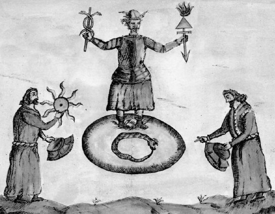
Speculum Veritatis, XVIIe siècle
Comme nous venons de le dire, les mots soufre, mercure (arsenic) et sel, devinrent finalement des abstractions, des éléments simples dans le sens des quatre éléments d'Aristote. De même que nous parlons de la forme d'une pensée, sans nous représenter par là une forme matérielle, de même on exprimait autrefois les concepts par des objets matériels, sans désigner autre chose que des propriétés. Les noms de ces objets devinrent, pour certaines propriétés, des noms collectifs que nous employons encore aujourd'hui, avec la différence cependant que nous y ajoutons le mot force (par exemple, force catalytique) pour indiquer la nature immatérielle des êtres que nous voulons ainsi désigner. Basile Valentin s'exprime ainsi, en parlant de l'alcool :
« Quand on enflamme une eau-de-vie rectifiée, le mercure et le soufre se séparent, le soufre brûle très vivement, car il est tout feu, et le mercure subtil se répand dans l'air pour rentrer dans son chaos. »
L'alcool était un mercure végétal contenant du soufre, ce qui veut dire qu'il était inflammable et volatil. Le sens de l'idée primitive se perdit lorsqu'on confondit par la suite les notions de l'inflammabilité (soufre), de la fixité (sel), ou de la volatilité (mercure) avec certaines propriétés des corps inflammables, fixes ou volatils, soumis aux expériences. De là les expressions: mercure huileux, gras, terreux; soufre huileux, gras, terreux, très inflammable ou difficilement inflammable; sel terreux, fusible, vitreux; terre combustible, grasse, huileuse, mercurielle, etc. Pour avoir reçu trop d'extension, l'idée n'exprima donc plus la chose observée, et quand Boyle s'enquit du soufre, du mercure et du sel des alchimistes, ces éléments n'existaient plus: l'idée était usée. [voir The Sceptical Chymist, part I et II, 1661 ] Longtemps après, on désignait par le mot sulfureux les propriétés asphyxiantes d'un gaz ; par le mot calcination (transformation en chaux), la combustion d'une substance fixe au feu; mais ces mots désignaient alors certaines propriétés au soufre brûlant, ou du calcaire. Il en est de même de notre langage d'aujourd'hui. Il n'est plus possible de donner, d'un acide ou d'un sel, une définition comprenant tous les corps désignés sous ces noms. Ainsi, nous avons des acides qui sont sans saveur, qui ne rougissent pas le tournesol, et ne neutralisent pas les alcalis ; nous en avons qui renferment de l'oxygène sans hydrogène, et d'autres qui contiennent de l'hydrogène, mais point d'oxygène. Le sens du mot sel a même tellement été changé, que le sel marin, ce sel des sels, qui a donné son nom à tous les autres, a fini par être exclu de la classe des sels proprement dits. On voit par là comment une notion simple et définie perd de sa précision quand d'autres notions viennent s'y confondre. Au lieu de la notion usée, nous trouvons, dès que nous nous mettons à distinguer, un certain nombre de notions nouvelles mieux définies. La notion primitive peut même se perdre Jusqu'au nom, et il est fort possible qu'on ne trouve plus un jour ni acides ni sels, de même qu'on ne trouva plus ni soufre ni mercure, dès qu'on n'en eut plus besoin; tout le monde d'abord en admit l'existence, mais on ne les cherche réellement que quand ils étaient déjà devenus inutiles.
Les éléments chimiques ne pouvaient pas s'isoler, on le conçoit, car ils ne désignaient que des propriétés. Aussi personne ne songeait à les obtenir; on les considérait comme les parties constituantes de tous les corps. On ne distinguait pas les corps organiques des substances minérales; on attribuait leur nature différente aux proportions différentes des éléments. On plaçait le vinaigre dans la même classe que les acides minéraux, l'alcool ou esprit-de-vin dans la même classe que le bichlorure d'étain ou esprit de Libavius, le chlorure ou beurre d'antimoine dans la même classe que le beurre de vache.
Au temps de Geber, l'action chimique fut assimilée à une action organique; au XIIIe siècle, l'idée surgit que le phénomène de la vie était analogue à l'action chimique. Dans les tout premiers temps, on crut que les métaux se développaient par des semences, comme les plantes: plus tard, on admit que les actions chimiques produisaient la semence. Les anciens envisagèrent la fermentation et la putréfaction comme la cause de la production des plantes et des animaux, tandis qu'aujourd'hui quelques physiologistes et pathologistes considèrent, au contraire, la production et le développement de certains végétaux ou animalcules comme la cause de la fermentation et de la putréfaction. Les phénomènes physiques ne peuvent être rendus sensibles qu'à l'aide d'images ou de notions empruntées à la science même de la nature. Aussi s'explique-t-on aisément l'introduction des termes alchimiques, dans le langage vulgaire où ils désignent les choses communes de la vie, si l'on songe que depuis le VIIIe jusqu'au XVe siècle, tout ce qu'on savait de la nature et de ses forces se réduisait à l'alchimie, à la magie et à l'astrologie. Les phénomènes organiques, la vie elle-même, la mort, la résurrection, semblèrent plus intelligibles dans le langage de l'alchimie, c'est-à-dire de la science d'alors.
« Nous, pauvres hommes, dit Basile Valentin (H. Kopp, Histoire de la Chimie, t. II, p 236), nous sommes salés par la mort, que nous avons bien méritée, et nous restons dans la terre jusqu'à ce que, pourris par le temps, nous soyons enfin éveillés par la chaleur et le feu célestes, pour ressusciter au ciel, pour être purifiés par la sublimation, qui fait le départ de tous les excréments, péchés, et impuretés. »
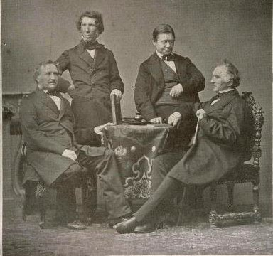
de gauche à droite : Heinrich Buff (1805-1878) - Friedrich Wöhler (1800-1882) -
Hermann Kopp (1817-1892) - Justus Liebig (1803-1873)
Luther fait l'éloge de l'alchimie dans sa Canonica.
« À cause, dit-il, des belles et délicieuses images sur la résurrection des morts; car, de même que le feu extrait la meilleure partie de chaque matière et fait le départ du mal, de même qu'il élève l'esprit au-dessus du corps et qu'il en détache la matière morte, ainsi Dieu, au jugement dernter séparera, par le feu, les impies des fidèles et des justes; les justes seront alors enlevés au ciel, les impurs resteront dans l'enfer. »
Ce n'est qu'au XIIIe siècle que prit naissance l'idée de la vertu curative et rajeunissante de la pierre philosophale. [voir prima materia. Cette note de Liebig est fondamentale] Elle fut la conséquence de l'opinion qu'on avait sur la nature chimique du phénomène de la vie. À l'aide de la pierre philosophale, ou pouvait guérir les métaux de leurs maladies, les mettre en état de santé, les transformer en or. On dut nécessairement, après cela, lui supposer une action semblable sur le corps de l'homme. Arnold de Villeneuve, Raimond Lulle, Isaac Hollandus, prouvèrent à l'envi les vertus médicamenteuses de la pierre philosophale. Hollandus dit dans son Opus Saturnis :
« Qu'on en mette dans du vin, gros comme un grain de blé, et qu'on le fasse boire au malade, l'effet pénétrera au cœur et se répandra dans toutes les humeurs. Le malade transpirera, mais sans s'affaiblir ; il devieudra au contraire plus vaillant et plus gai. Qu'on répète cette dose tous les neuf jours, et il semblera au patient n'être plus un homme, mais un esprit. Il croira être neuf jours en paradis et s'y nourrir de ses fruits. »
Salomon Trismosin [voir Toyson d'or, alias Splendor solis] prétend s'être rajeuni, à un âge très avancé, moyennant un grain de pierre philosophale ; sa peau jaune et ridée serait devenue lisse et blanche, ses joues auraient pris un beau teint rosé, ses cheveux gris seraient devenus noirs, son dos courbé se serait redressé. Il aurait aussi, à l'aide de la pierre philosophale, rendu toute sa jeunesse à des femmes de quatre-vingt-dix ans. Cette vertu médicamenteuse une fois admise, on fut naturellement conduit à employer des préparations chimiques en médecine. C'est alors que commença une nouvelle ère pour la chimie. En effet, la pierre philosophale ayant, au même degré, la vertu d'ennoblir les métaux communs et de guérir les maladies, le corps malade était bien plus commode pour la recherche des conditions dans lesquelles la materia prima s'élabore et s'ennoblit; car la qualité des préparations chimiques pouvait s'éprouver, sous ce rapport, par le nombre des maladies qu'elles étaient susceptibles de guérir. Plus une préparation guérissait de maladies, plus ses propriétés la rapprochaient de la pierre philosophale. La véritable pierre devait guérir toutes les maladies. La thérapeutique de Galien ne contenait pas des médicaments chimiques, mais elle ne comprenait que des substances organiques; le musc, la rhubarbe, le castoreum, le camphre, le tamarin, le gingembre, la racine de zédoaire, et d'autres substances semblables composaient les principaux médicaments. Tout l'art du pharmacien consistait à en faire des sirops et des électuaires ; les herbes, les écorces et les racines s'administraient sous forme de poudres et de décoctions. Sur l'autorité de Galien, toutes les préparations métalliques étaient, jusqu'alors, exclues de la thérapeutique. Les préparations mercurielles étaient considérées comme des poisons absolus. Avicenne, il est vrai, avait attribué à l'or et à l'argent la propriété de purifier le sang; toutefois, ces métaux, n'étaient ordinairement employés que pour recouvrir les pilules, et encore, au commencement du XVe siècle, l'usage externe de l'onguent mercuriel éprouva la plus vive opposition. Si l'on considère que les opinions de Galien sur les causes des maladies et sur l'efficacité des médicaments avaient passé, pendant treize siècles, pour des vérités in-contetestables, qu'elles avaient acquis toute l'autorité d'articles de foi, ou comprend l'impression que dut faire sur les médecins, au XVIe siècle, la découverte des effets merveilleux des préparations à base de mercure, d'antimoine et d'autres métaux. Tout un champ nouveau fut ouvert aux investigations par les idées des alchimistes, par l'emploi des médicaments chimiques. On reconnut dans le sang une propriété que présentaient les alcalis ; dans le suc gastrique, une propriété que possédaient les acides. Cette opposition de caractères parut correspondre aux contraires des qualités de Galien.
En mettant les acides en contact avec des alcalis, on vit se produire de nouveaux corps, ni acides, ni alcalins, mais doués de propriétés toutes nouvelles. On constata dans les alcalis non caustiques la propriété de faire effervescence avec les acides, et l'on crut ainsi avoir l'explication de toutes les fermentations. On observa un dégagement de chaleur par le mélange des acides avec les alcalis, sans qu'on vit s'opérer de véritable combustion : le dégagement de chaleur dans la respiration trouva ainsi son interprétation. Comment, après toutes ces observations, pouvait-on ajouter foi à la théorie de Galien ? comment pouvait on encore y croire quand on avait la preuve de la fausseté de ses opinions sur les métaux et les préparations métalliques, quand on avait découvert que les phénomènes organiques et les effets des médicaments reposaient sur des causes fondamentales inconnues de Galien ? On sentait qu'il fallait, dans l'explication des fonctions physiologiques, tenir compte non seulement des causes fondamentales qui déterminent les propriétés physiques, mais encore de certains éléments auxquels sont dues les propriétés chimiques. Les phénomènes vitaux et les effets des médicaments dépendaient non seulement des proportions de l'humide et du sec, du chaud et du froid, mais encore des proportions du sel, du mercure, du soufre, de l'alcali et de l'acide. Ces notions nouvelles durent entièrement transformer la médecine. D'après la nouvelle théorie, la santé était la conséquence de l'état normal des qualités chimiques des humeurs ; dans tout autre état, contraire à cet état normal, les qualités chimiques devenaient les causes prochaines des maladies; on pouvait donc arrêter les maladies, les guérir par les qualités chimiques prédominantes des médicaments. D'après cela, il fallait, dans le choix des moyens de guérison, tenir principalement compte de la nature chimique de la bile, de la salive, de la sueur, de l'urine. C'était là un progrès immense. On avait fait la découverte importante que la nature de l'urine dépendait des maladies à certains égards, et, comme dans cette période de la science, tous les effets étaient pris pour les causes elles-mêmes, on considérait Jes sédiments de l'urine (le tartre) comme les causes de beaucoup de maladies. Les idées de ce temps eurent particulièrement pour défenseur Paracelse. Quelques années après que Luther eut brûlé la bulle du pape, Paracelse suivit son exemple et livra aux flammes, à Bàle, les œuvres de Galien et d'Avicenne. Ce fut la fin des anciennes doctrines.
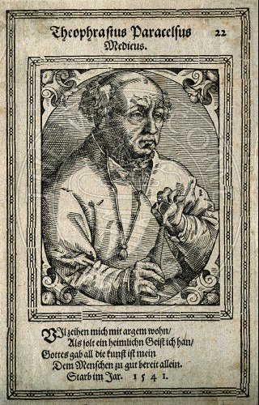
Paracelse, d'après une gravure de 1541
Selon Paracelse, on avait jusqu'alors déserté la nature pour s'adonner à des rêves creux ; il renvoyait donc au livre ouvert de la nature écrit de la main même de Dieu. Le soleil, dit-il, et non une pauvre lampe de ca-binet, donne la vraie lumière; les yeux qui se délectent à l'expérience sont les véritables professeurs; le fatras des livres et les élucubrations de l'esprit humain ont produit la confusion et le charlatanisme. Voici comment il débute dans son Paragranum :
« Suivez-moi, je ne viendrai pas à vous, Avicenne, Rhasès, Galien, Mesur ! Suivez-moi, vous, de Paris, de Montpellier, de Misnie, de Cologne, de Vienne, vous, habitants des bords du Danube, du Rhin, ou des Iles de la mer, Italiens, Grecs, Arabes, Israélites, suivez-moi, l'empire m'appartient. »
Les écrits de Paracelse reflètent toutes les idées, toutes les erreurs de son temps. On y voit une puissance gigantesque en lutte contre des entraves extérieures. Paracelse a l'instinct, mais non la conscience de la bonne voie; il la cherche en vain dans le désert qui l'entoure; de là ses contradictions, son incohérence. Mais sa parole donne l'impulsion à tout un siècle :
« le véritable but de la chimie, dit-il, n'est pas de faire de l'or, mais de préparer des médicaments. »
Paracelse arracha la chimie des mains des faiseurs d'or, pour la mettre au service des médecins, qui avaient bien plus d'instruction. Lui et ses successeurs préparèrent eux-mêmes leurs médicaments, et, depuis lors, la connaissance des principes et des opérations chimiques fut considérée comme essentielle au médecin. On continua encore, pendant le XVIe et le XVIIe siècle, à se disputer sur la réalité de certaines qualités mystérieuses, jusqu'à ce qu'enfin des expériences plus étendues conduisissent à cette vérité importante, que la matière est inséparable de ses propriétés. On croyait, longtemps encore après Paracelse, que les opérations chimiques produisent sur les médicaments le même effet que la digestion sur les aliments d'où naît le sang. Trois sublimations du sublimé corrosif avec le mercure métallique donnaient le mercure doux ; neuf sublimations donnaient la panacée mercurielle. [sur les dérivés du mercure, voir Huginus a Barma]
Les causes fondamentales spiritualisantes qui, selon Platon, déterminent les activités vitales, sont représentées, chez les disciples de Paracelse, par l'arohée, qui a son siège dans l'estomac et qui, douée de toutes les passions de l'homme, régit la digestion, les phénomènes du mouvement et les manifestations de l'âme. Les médecins modernes ont un profond mépris pour les théories de Paracelse et de ses successeurs ; ils les prennent en pitié comme des aberrations de l'esprit, qui n'ont pas plus de valeur que les idées des alchimistes sur la transmutation des métaux. Qu'on compare cependant ces théories avec les théories actuelles sur les causes des maladies et sur les méthodes curatives, et l'on se sentira profondément humiliés la vue des erreurs et des contradictions qui abondent dans ces dernières. En effet, les idées de Galien et de Paracelse dominent encore dans l'esprit de la plupart des médecins : sauf les expressions, les mêmes opinions se sont conservées. L'archée du XVIe siècle est devenue, au XVIIIe et au commencement du XIXe siècle, la force vitale des philosophes de la nature, et aujourd'hui encore elle continue de figurer dans les théories de médecine sous le nom de force nerveuse, comme une espèce d'agent universel. [rappelons que l'archée représente aujourd'hui le code ADN = différenciation des espèces] On ne saurait se faire illusion sur l'état de la théorie médicale, si l'on songe que de nos jours, où les vrais principes de l'investigation scientifique semblent cependant répandre de vives lumières, certaines doctrines ont pu être émises que nos descendants trouveront certainement incroyables.
Comment admettre que la plupart des hommes instruits de notre époque soient plus éclairés, sur les phénomènes et les forces de la nature, que les médecins chimistes du XVIe siècle, quand on voit tant de médecins, sortant de nos écoles, professer des principes contraires à toute expérience et même à tout bon sens; quand on les voit attribuer les effets des médicaments à certaines forces ou qualités que le frottement ou l'agitation pourrait mettre en mouvement, renforcer ou communiquer à d'autres substances inertes; quand on voit, enfin, ces mêmes médecins nier l'universalité des lois de la nature, en leur supposant des exceptions en faveur des médicaments, de telle sorte que leurs effets seraient d'autant plus considérables qu'ils seraient plus divisés et qu'ils renfermeraient moins de matière active ? Vraiment, en présence de semblables théories, on est disposé à considérer la médecine comme la plus arriérée des sciences naturelles. De même que certains agriculteurs attendent leur salut d'une nouvelle charrue, d'un nouvel engrais ou d'une nouvelle méthode de culture, bien que ces moyens ne fassent que les ruiner plus tôt, s'ils n'y joignent en même temps la connaissance des vrais principes d'agriculture, de même la plupart des médecins ne voient les progrès de la science que dans le perfectionnement de la partie technique de la médecine. Pour ces médecins, un nouveau médicament, un nouveau traitement, ne sont pas de simples moyens d'écarter un obstacle donné, mais des stimulants, semblables au fouet qui ferait avancer le cheval arrêté par un obstacle; et, quand parfois la nature s'aide elle-même, ils veulent nous faire accroire que ce fouet a été le moyen de guérison. [l'avenir a donné tort à Liebig là-dessus. Non pas qu'il faille faire l'impasse sur les moyens qu'a la nature de rénover, d'une certaine façon, notre corps mais c'est devenu un truisme d'observer que la médecine chimique fut l'un grands triomphes de la deuxième moitié du XXe siècle, pour l'humanité] Toutes ces inventions sont utiles, peut-être même nécessaires, mais elles ne font que lever les difficultés du moment. Elles sont comme un pont fragile sur lequel on se jette au moment du péril, et qu'on laisse s'écrouler après s'être sauvé, au lieu d'y placer des appuis solides, pour ceux qui veulent plus tard le traverser. Les matériaux abondent dans la science, si bien que l'on découvre à peine les fondements sur lesquels l'édifice doit reposer, mais les architectes ne s'entendent pas : l'un le voudrait en bois, l'autre en bois et en pierre, le troisième en pierre et en fer. Ils finiraient encore par se mettre d'accord, sans les manœuvres qui voudraient bâtir en l'air et avec de la paille seulement. Et voila pourquoi depuis deux mille ans les fondements ne sont pas eneore achevés. [voilà une fin digne de Bossuet...]
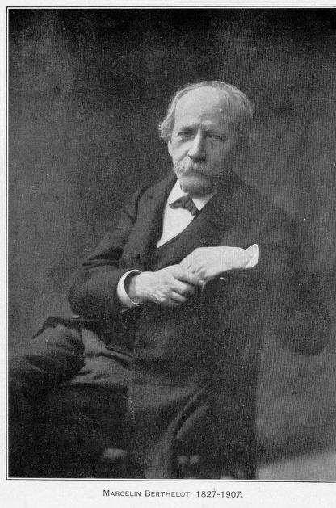
Je me propose de réunir ici quelques textes relatifs à la découverte de l'alcool, afin de montrer quels sont les noms originaires de cette substance, quels faits en ont suggéré Ja découverte et à quelle époque on la trouve constatée avec précision, dans des auteurs de date certaine; ces divers points ayant donné lieu autrefois à des confusions et à des erreurs, qui se sont répétées depuis. [voir notre voie humide] Les noms originaires sont importants à définir d'abord pour l'intelligence des textes. Or le nom même de l'alcool, en tant que réservé aux produits de la distillation du vin, est moderne. Jusqu'à la fin du XVIIIe siècle, ce mot signifiait un principe quelconque, atténué par pulvérisation extrême ou par sublimation. Par exemple, il s'appliquait non seulement à notre alcool, mais aussi à la poudre de sulfure d'antimoine, employée pour noircir les cils et à diverses autres. [voir Char Triomphal de l'antimoine, pseudo Basile Valentin] Au XIIIe siècle, et même au XIVe siècle, je n'ai trouvé aucun auteur qui appliquât le mot d'alcool au produit de la distillation du vin. Le mot d'esprit-de-vin, ou esprit ardent, quoique plus ancien, n'était pas non plus connu au XIIIe siècle; car on réservait à cette époque le nom d'esprit aux seuls agents volatils capables d'agir sur les métaux pour en modifier la couleur et les propriétés (voir le Mémoire précéd., p. 467 - Quelques figures d'appareils chimiques, syriaques et latins, au Moyen Âge). Quant à la dénomination eau-de-vie, nous la trouvons dès l'origine dans Arnaud de Villeneuve, non comme nom spécifique, mais comme résultant de l'assimilation du produit de la distillation du vin avec l'élixir de longue vie, qui portait alors à proprement parler ce nom d'eau-de-vie. [le vin était confondu avec l'aqua permanens, voir Isaac Le Hollandais, Opus Saturni] Je donnerai tout à l'heure des détails plus circonstanciés sur ce point, qui a occasionné plus d'une erreur chez les historiens de la Science.
C'est sous la dénomination d'eau ardente, c'est-à-dire inflammable, que notre alcool apparaît d'abord dans la Science. [la cabale admettait la même expression pour désigner le Mercure
des Sages] Donnons quelques détails sur l'origine même de la
découverte.Que le vin pût fournir quelque chose d'inflammable, c'est ce que les anciens avaient déjà observé. On lit en effet dans Aristote (Météorologiques, édition Didot, t. III, p. 622, 1. 23) :
« Le vin ordinaire possède une légère exhalaison ; c'est pourquoi il émet une flamme »
Le sens du mot qui est traduit ici par flamme est admis par les traducteurs latins; et il est confirmé par la signification que ce mot présenie dans les lignes suivantes du texte, où il s'applique à des substances combustibles.
[l'exhalaison correspond au souffle qui définit l'âme ou anima
mais la flamme peut correspondre aussi au feu infernal
qui peut convenir au spiritus abscondus de la fig. 8 du Ros. Phil.] On lit de même dans Théophraste, le disciple immédiat d'Aristote (de lgne, 67) :
« Le vin versé sur le feu, comme pour des libations, jette un éclat » (eklampei.) ;
c'est-à-dire produit une flamme brillante.
[par cabale, nous pouvons y voir les noces de Neptune et de Hellè quand celle-ci s'abîme dans la mer qui porte son nom, cf. commentaire au Mutus Liber. De ces noces, les mythographes rapportent que naît soit Paeon, soit Edon. Les deux contractent des rapports avec Apollon dont le surnom est « le brillant »]
Pline renferme une phrase plus décisive encore; il nous apprend (Hist. nat., L. XIV, 6) que le vin de Falerne produit par le champ Faustien
« est le seul vin qui entretienne la flamme : solo vinorum flamma accenditur ».
Ce qui arrive en effet pour certains vins très riches en alcool. Au même genre d'essais s'applique le texte suivant, que j'ai rencontré dans le manuscrit latin 197 de la Bibliothèque royale de Munich, manuscrit écrit vers l'an 1438, mais qui renferme des écrits plus anciens. Le texte actuel fait immédiatement suite à une copie du Liber ignium de Marcus Graecus, ouvrage du XIIe ou XIIIe siècle.
« On peut faire brûler du vin dans un pot, comme il suit : mettez dans un pot du vin blanc ou rouge, le sommet du pot étant un peu élevé et pourvu d'un couvercle percé au milieu. Quand le vin aura été échauffé, qu'il entrera en ébullition et que la vapeur sortira par le trou, approchez une chandelle allumée ; aussitôt la vapeur prend feu et la flamme dure tant que la vapeur sort. » (Ms. latin 197 de Munich, f° 75, verso.) [à l'époque, on pensait que les éléments se transformaient :
donnait
. Il
semblait clair qu'un principe sulfureux
pouvait être à la base de cette modification]Malgré la connaissance de ces faits, l'alcool ne fut pas isolé par les anciens ; quoiqu'ils sussent déjà condenser certains liquides vaporisés. Ainsi, dans les Météorologiques d'Aristote (L. II, Ch. iii) on lit :
« L'expérience nous a appris que l'eau de mer réduite en vapeur devient potable et le produit vaporisé, une fois condensé, ne reproduit pas l'eau de mer... Le vin et tous les liquides, une fois vaporisés, deviennent eau. » [si l'on poursuit la note précédente, aboutissait fatalement à
]II semblait donc que l'évaporation changeât la nature du corps vaporisé. Ces indications doivent d'ailleurs se rapporter à la condensation du liquide échauffé dans un vase, la condensation étant opérée soit à la surface d'un couvercle superposé, procédé relaté par Dioscoride (au Ier siècle de l'ère chrétienne), pour condenser la vapeur du mercure; soit dans des flocons de laine, comme Pline l'indique pour l'essence de térébenthine. Mais nous ne connaissons aucun texte analogue pour le vin. Les appareils distillatoires proprement dits furent inventés en Égypte, dans les premiers siècles de l'ère chrétienne, et décrits dans le Traité d'une femme alchimiste, appelée

Chrysopée de Cléopâtre, figure 11
Cléopâtre. J'ai reproduit ailleurs les dessins de ces appareils (Introd. à la Chimie des Anciens, p. 132 - voir Chimie Anciens, V), appareils qui ont conduit, par leurs transformations, à la découverte de l'alambic, décrit dès la fin du IVe siècle de notre ère, par Synésius (Introd., etc., p. 164). Mais nous ne trouvons chez les alchimistes grecs aucune indication précise qui soit attribuable à l'alcool. Les Arabes, en tant qu'ils nous sont connus par des textes traduits en latin, n'en font non plus aucune mention ; contrairement à une assertion erronée de Hœfer, dont je parlerai bientôt. Le texte le plus ancien qui en parle est probablement le suivant, qui se trouve à la suite du Traité de Marcus Graecus dans le Ms. latin 197 de Munich (fol. 75 v.) ; à supposer que ce texte soit, comme je le crois probable, aussi ancien que le Traité de Marcus Graecus lui-même : il est compris dans la même collection de recettes tecbniques que ce Traité. En tous cas, en voici la traduction :
« L'eau ardente se prépare ainsi. Prenez du vin vieux et bon, de n'importe quelle couleur; distillez-le dans une cucurbite et un alambic, à jointures bien lutées, sur un feu doux. Le produit distillé s'appelle eau ardente. En voici la vertu et la propriété. Mouillez avec un chiffon de lin et allumez, il se produira une grande flamme. Quand elle est éteinte, le chiffon demeure intact, tel qu'il était auparavant. Si vous trempez le doigt dans cette eau, et si vous mettez le feu, il brûlera comme une chandelle, sans éprouver de lésion. Si vous trempez dans cette eau une chandelle allumée, elle ne s'éteindra pas. Notez que l'eau qui distille la première est surtout active et inflammable; la dernière, utile à la médecine. Avec la première on fait un excellent collyre, pour les maladies des yeux. »
Le premier auteur, connu nominativement, qui ait parlé de l'alcool est Arnaud de Villeneuve. On le donne même d'ordinaire comme l'auteur de la découverte, prétention qu'il n'a jamais élevée lui-même. Il s'est borné à en parler comme d'une préparation connue de son temps et qui l'émerveillait au plus haut degré. C'est dans son Ouvrage, intitulé : De conservandâ juventute, ouvrage écrit vers 1309 d'après M. Hauréau (Hist. littéraire de la France, t.XXVIII). Voici les textes, tels qu'ils sont imprimés dans omnia Arnaldi Villanovani (Bâle, 1585), p. 1699, E. :
« On extrait par distillation du vin, ou de sa lie, le vin ardent, dénommé aussi eau-de-vie. C'est la portion la plus volatile du vin. »
Ailleurs (p. 832), il en exalte les vertus :
« Discours sur l'eau-de-vie. Quelques-uns l'appellent eau-de-vie. Certains modernes, disent que c'est l'eau permanente (C'est-à-dire qui ne peut être solidifiée ou fixée.), ou bien l'eau d'or, à cause du caractère sublime de sa préparation. Ses vertus sont bien connues. » [l'aqua permanens permet la maturation du Rebis chez les alchimistes jusqu'à un état de sursaturation où la cristallisation - coagula - survient]
II énumère ensuite les maladies qu'elle guérit. Puis:
« Elle prolonge la vie et voilà pourquoi elle mérite d'être appelée eau-de-vie. On doit la conserver dans un vase d'or; tous autres vases, ceux de verre exceptés, laissent suspecter une altération... En raison de sa simplicité, elle reçoit toute impression de goût, d'odeur et autre propriété... Quand on lui a communiqué les vertus du romarin et de la sauge, elle exerce une influence favorable sur les nerfs, etc. »
Le pseudo-Raymond Lulle, auteur plus moderne qu'Arnaud de Villeneuve, parle avec le même enthousiasme de l'alcool (Theatrum chemicum, t. IV, p. 334 - Lulle apparaît au début du t. IV mais la réf. de Berthelot renvoie à Andreas Brentzius. Variarum Philosophorum Sententiarum perveniendi ad lapidem benedictum Collectanea, p. 333). Il décrit la distillation de l'eau ardente, tirée du vin, et ses rectifications, répétées au besoin sept fois, jusqu'à ce que le produit brûle sans laisser de trace d'eau.
« On l'appelle, ajoute-t-il, mercure végétal ».
On voit que les alchimistes, au début du XIVe siècle, furent saisis d'une telle admiration par la découverte de l'alcool qu'ils l'assimilèrent à l'élixir de longue vie et au mercure des philosophes. [il y a méprise fréquente sur la notion d'élixir qu'on tient pour une sorte de potion alors qu'il s'agit d'un des états du
] Mais il faudrait se garder de prendre tout texte où il est
question de ce mercure, ou de cet élixir, comme applicable
à l'alcool. L'élixir de longue vie est un vieux
rêve de l'ancienne Égypte. Diodore de Sicile (I, 25) en
parle sous le nom de AqavasiaV
jarmakon, « remède
d'immortalité » ; dont l'invention
était attribuée à Isis. Galien (cité par H.
Etienne, Thesaurus, édition Didot) en donne même la
formule. Ce fut aussi le rêve de tout le moyen âge. Cet
élixir de longue vie était en même temps
réputé susceptible de changer l'argent en or (Guidonis
Magni de Monte Tractatulus (Th. chem., t. VI). -
Guidonis Magni de Monte Philosophi Græci Discipuli Anonymi
tractatulus, seu descriptio Philosophici Adrop, ejusque
præparatio. p. 543-564«Tu pourras aussi préparer le grand élixir de vie; car je veux que tu saches, qu'en prenant le mercure rouge et en y ajoutant du mercure fixé et qui a été passé sur la tutie et le vitriol, de façon à le rougir et à le rendre huileux, tu ne perdras pas ton travail. En effet, une lame d'argent, rougie au feu et éteinte dans cette liqueur, devient jaune. »). [il est fait état d'une solution mercurielle contenant le sulphur
dans laquelle on plonge une terre fixe. S'agirait-il du Sel
?]À cet ordre d'idées se rattache un texte, de date incertaine d'ailleurs, que l'on rencontre dans les traductions de certains ouvrages arabes, attribués (L'attribution de ce texte à Aristote est évidemment fausse. Les ouvrages alchimiques du prétendu Aristote arabe ne remontent probablement pas au delà du XIIIe siècle, ou tout au plus du XIIe siècle. L'attribution à Rasés est toute aussi incertaine. La seule date sûre est celle du manuscrit lui-même, écrit vers l'an 1300.) tantôt à Rasés (Ms. 6514, f° 124 recto ), tantôt à Aristote (De perfecto magisterio, Theatrum chemicum, t. III, p. 104; et de nouveau, avec plus de détails, p. 124). Ce texte, dont je connais trois versions, ne parle pas du vin : il emploie le mot fermentari, qui s'appliquait alors à toute réaction chimique lente. En voici la traduction (D'après le Theatrum chemicum, t. III, p. 104. Le texte du Ms. 6514 n'en diffère pas sensiblement.) :
« Préparation de l'eau-de-vie simple. — Prends de la pierre secrète (La version de la page 124 ajoute, après lapidis occulti, le mot elixati, c'est-à-dire lessivée, ou bouillie avec de l'eau. ), ce que tu voudras, broie fortement, en consistance de moelle; laisse fermenter pendant un jour et une nuit. Mets alors dans un vase distillatoire bien luté et distille au moyen d'un bain d'eau et de cendres. Cohobe l'eau distillée, ou son résidu, et répète ces distillations trois fois. Dans plusieurs livres, on ne parle pas de redistiller sur le résidu, mais seulement de distiller deuxfois et ce sera fait (Toute cette phrase manque dans le Ms. 6514). Alors distillera une eau blanche comme du lait; garde-la pour l'usage. »
[voir M. L. von Franz et Emma Jung, la Légende du Graal, sur l'expression lapsit exillis que certains traduisent par lapis elixir ou lapis exilis, ce qui signifie pierre vile, de peu de prix, qui correspond à la formulation traditionnelle de la prima materia. Dans Arnaud de Villeneuve, le lapis philosophorum est qualifié de lapis exilis, cf. Bibliotheca chemica curiosa, II, 88. On retrouve la même expression dans le Rosarium philosophorum, datant du XVe siècle :
« Hic lapis exilis extat precio quoque vilis - Spernitur a stultis, amatur plus ab edoctis. ».
Emma Jung ajoute que certains érudits ont transformé lapsit exillis en lapis elixir. Nous pouvons donc inférer que l'expression lapidis elixati ne désigne rien d'autre que la prima materia dissoute dans le
, ce qui correspond à la
définition habituelle de la nigredo]Ce texte est trop vague pour qu'on puisse dire exactement quelle substance il désigne. En réalité, il n'y est aucunement question de vin, je le répète, ni d'eau ardente, mais d'un liquide laiteux, analogue à l'eau blanche de Zosime (Collection des Alchimistes grecs, Traduction, p. 144 — Voir aussi p. 165, n° 16.), eau dérivée d'un polysulfure et capable de teindre superficiellement les métaux. Hoefer a cru y voir une première mention de l'alcool. Mais cette opinion me paraît avoir peu de solidité et elle repose sur une confusion résultant des sens multiples du mot eau-de-vie. On voit par ces détails combien les problèmes relatifs à l'origine des découvertes chimiques sont délicats, en raison des sens multiples des mots et aussi parce que les découvertes ont souvent eu lieu peu à peu, et par des changements insensibles dans les détails et dans l'interprétation des opérations.
SUR L'HISTOIRE DE LA BALANCE HYDROSTATIQUE ET DE QUELQUES AUTRES APPAREILS ET PROCÉDÉS SCIENTIFIQUES. [Annales de Chimie et de Physique, 6e série, t. XXIII, août 1891]
1. On connaît le problème de la couronne d'Hiéron, relatif à l'analyse d'un alliage d'or et d'argent par une méthode purement physique. Le roi avait confié à un orfèvre un certain poids d'or pour fabriquer une couronne. L'objet livré, sous une forme artistique, on soupçonna une fraude. Le même poids de métal était rendu ; mais ce métal était-il bien de l'or ?
[voir : Tout corps plongé dans un liquide subit de la part de celui-ci, une poussée exercée du bas vers le haut, et égale, en intensité, au poids du liquide déplacé = concept de masse volumique, cf. http://www.ac-orleans-tours.fr/hist-geo-grece/grandegrece/archimede.htm]
Ou bien l'artisan avait-il substitué à une partie de l'or un métal moins précieux, l'argent ou le cuivre, par exemple. Les anciens possédaient dès cette époque, — par la coupellation, combinée avec l'emploi du soufre et des sulfures métalliques, ou bien avec la cémentation en présence des sels de fer et du chlorure de sodium, — des procédés propres à analyser les alliages de l'or avec le plomb, le cuivre et même avec l'argent. [voir chimie et alchimie, à Bernard Husson] Mais ces procédés exigeaient la refonte du métal et, par conséquent, la destruction de l'objet d'art : analyser l'alliage sans altérer l'objet paraissait un problème insoluble. Cependant il fut résolu par Archimède et il fournit en. quelque sorte la première illustration du principe célèbre sur lequel repose l'Hydrostatique. Ce fut à cette occasion, dit-on, que le géomètre grec prononça le mot si souvent connu et si répété : eurhka, « j'ai trouvé ». Vitruve est le plus ancien auteur connu qui ( De Architectura, L. IX, Ch. 3) expose le détail de la solution, tel qu'il la comprend. D'après cet auteur, Archimède aurait introduit successivement des poids égaux d'or et d'argent dans un vase complètement rempli d'eau. Il aurait mesuré l'eau écoulée dans les deux cas: non directement, mais d'après la quantité d'eau qu'il fallait reverser dans le vase, pour le remplir exactement, après avoir enlevé la masse métallique. Connaissant ces deux quantités, ainsi que le poids de l'eau déplacée de la même manière par un poids égal de l'alliage inconnu, Archimède aurait conclu, par une règle facile à établir, la proportion relative de ces métaux dans l'alliage; sans qu'il fût nécessaire de détruire la couronne, ni de lui faire subir aucune altération. À la vérité, ceci suppose que l'argent seul aurait été employé pour falsifier l'or. Mais, quel que soit le métal substitué, la méthode employée serait toujours efficace pour accu-ser la fraude, l'or élant de tous les métaux connus à cette époque celui qui occupe le plus petit volume sous un poids donné : c'est donc le métal qui déplace le moins d'eau et' tout excès à cet égard accuse la fraude.
Observons ici que la découverte du platine et des métaux congénères, plus denses que l'or, mettrait cette méthode en défaut ; car elle permet de fabriquer, en alliant le platine avec un métal plus léger, des alliages de même densité que l'or, et les faussaires modernes ont employé en effet ce procédé. Mais le platine était inconnu des anciens.
Quoi qu'il en soit, en nous bornant à envisager les alliages d'or et d'argent, la méthode exposée par Vitruve est correcte en principe; pourvu, bien entendu, que l'on suppose — ce que faisait implicitement Archimède — qu'il n'y a eu ni dilatation, ni contraction, lors de la formation de l'alliage. Mais le procédé physique qui met cette méthode en pratique est d'une exactitude médiocre, parce que le remplissage d'un vase à large orifice, vase nécessaire pour l'immersion d'une couronne, est difficile à définir, et la mesure de la quantité d'eau écoulée dans ces conditions peu précise. C'est ce que Galilée fit observer avec raison (Œuvres de Galilée, édition d'Albéri, t. XI, p. 21; 1854), et il présenta un autre procédé moins grossier, fondé sur l'emploi de la balance hydrostatique. Il ajoutait que (Même Ouvrage, t. XIV, p. 201, Bilancetta. — Edition nationale, t. I, p. 215; 1890.) cet emploi répondait mieux au génie d'Archimède, qui avait dû sans doute employer quelque artifice analogue. Dans la balance hydrostatique, en effet, on détermine les pertes de poids d'une masse métallique suspendue, et pesée tour à tour dans l'air et dans l'eau, opération susceptible d'une très grande précision. Cette supposition de Galilée était plus vraie qu'il ne le croyait peut-être; à moins qu'il n'eût eu connaissance des procédés de métier que je vais rappeler. En effet, je vais donner des textes montrant que la balance hydrostatique était employée pour analyser un mélange d'or et d'argent par les orfèvres pendant le moyen âge, et que leur procédé remonte à l'antiquité. Je citerai d'abord un texte du moyen âge, qui fournit une expression numérique plus approchée qu'aucun autre pour la composition de l'alliage. Il se trouve dans un Traité technique, relatif à l'Orfèvrerie et à la Peinture, traité intitulé Mappae clavicula.
[sur la Mappae clavicula, cf. 1, 2, 3, 4, 5, et notamment Journal des Savants, janvier 1893. Le Ms de la Mappae clavicula est aujourd'hui au Corning Glass Museum à Corning, New-York, États- Unis. Il fut rédigé vers 1170, abbaye de Bec en Normandie. Naguère, propriété de Sir Thomas Philipps qui en publia le texte en 1847. Quelques articles sur le sujet :
'A Treatise on the Preparation of Pigments during the Middle Ages' T Philipps, in Archaeologia, vol. XXXII, London, 1847, p. 183-244.
'Compositiones ad tingenda musiva, herausgegeben, übersetzt und philologisch erklärt, H Hedfors, Uppsala 1923.
'Medieval recipes describing the use of metals in manuscripts' S.M. Alexander, in Marsyas 12, pp.34-51.
'Art, Technology and Science: Notes on their Historical Interaction' CS Smith. in Technology and Culture 11, pp.493-549.
'Notes on some mss. of the Mappae Clavicula, ' Rozelle Johnson in Speculum 10, 1935.
'Trial Index to some unpublished sources for the History of Medieval Craftsmanship' Daniel V Thompson, pp.410-431.
- C. Smith, J. Hawthorne, Mappae Clavicula, 1974, American Philosophical Societ
voir encore alchemywebsite.com/a-archive_may99.html]
Nous en possédons plusieurs copies : l'une, du XIIe siècle, a été publiée par Way dans le tome XXXII de l'Archaeologia, collection de la Société archéologique de Londres. Je vais donner ce texte en entier, traduit en français. Il répond au n° 194 de l'Archaeologia (t. XXXII, p. 225).
L'emploi de la méthode hydrostatique est ici des plus nets. Pour saisir exactement le sens du morceau, il faut remarquer la fraction indiquée au début :
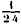
+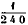
: c'est la différence entre les pertes de poids, dans l'eau, de masses égales d'or et d'argent.1 kg d'or, par exemple, perdra, d'après la densité connue du métal, —soit 19,26 : 51 g, 9.
Et 1 kg d'argent perdra, d'après la densité connue du métal,— soit 10,51 : 95 g,1.
La différence est 43 g, 2. Or ( + ). 1 kg = 45 g, 8 (On néglige ici la perte de poids dans l'air, laquelle n'atteindrait que la dernière décimale.). Les nombres sont aussi voisins qu'on peut l'attendre des procédés de purification des métaux connus au moyen âge. La proportion relative de l'or et de l'argent, dans un alliage soumis à la même épreuve, se calcule aisément : v étant la perte de poids de l'or, v' celle de l'argent, v" celle de l'alliage, la fraction x de l'or qu'il renferme sera
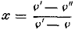
; v' - v est ce que l'auteur de l'article exprime par 11 deniers pour une livre. Pour comprendre cette expression, il convient de savoir que l'auteur admet une livre de 12 onces, chaque once valant 20 deniers. 11 deniers font alors précisément + du poids de la masse métallique mise en expérience. Ce procédé d'analyse des alliages d'or et d'argent par la balance hydrostatique était fort répandu chez les orfèvres du moyen âge; car on retrouve le même texte dans un manuscrit du XIIe siècle, contenant un Traité technique bien connu, celui d'Eraclius (Livre III, Chap. 23); mais avec des variantes un peu moins exactes quant aux valeurs numériques. L'auteur indique la fraction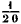
(c'est-à-dire 50 gr, au lieu de 45 gr ,8), comme représentant l'excès de la perte de poids due à l'or sur celle due à l'argent; et la valeur 12 deniers comme le nombre caractéristique. Or ces variantes numériques existent, ainsi que le texte lui-même, comme je l'ai vérifié, dans le manuscrit latin 12292 de la Bibliothèque nationale de Paris (Ancien fonds Saint-Germain, 852), sur le premier folio, écrit au Xe siècle. Le texte de la Mappae clavicula est donc le plus exact et probablement celui qui répond à la plus vieille tradition, laquelle doit être la plus précise : vers le Xe ou le XIIe siècle, on n'avait guère l'idée ni la possibilité de rectifier les données transmises par les savants de l'antiquité. Quelques modernes, notamment l'éditeur du Traité d'Eraclius dans les Quellenschriften für Kunstgeschichte und Kunsttechnik des Mittelalters ( Wien, 1873, p. 141) ont pensé que le procédé décrit par l'auteur n'avait pas dû être transmis directement depuis l'antiquité; mais qu'il était revenu en Europe, comme tant d'autres résultats scientifiques, par l'intermédiaire des Arabes. On sait que les Arabes eux-mêmes n'ont guère fait, en matière de Physique et de Mathématiques, que traduire les savants grecs. Il paraît dès lors probable que la balance hydrostatique vient des Grecs, sinon d'Archimède lui-même.J'ajouterai que l'indication du procédé dans des manuscrits du Xe siècle, c'est-à-dire antérieurs à l'influence arabe, montre qu'il s'était conservé en Occident par une transmission technique directe et non interrompue. Que la balance hydrostatique remonte à l'antiquité classique, c'est, en effet, ce que démontre la lecture d'un petit poème latin sur les poids et mesures, attribué soit à Priscien, soit à O. Remnius Fannius Palemo, poème écrit au temps de l'Empire romain, vers le IVe ou le Ve siècle de notre ère, et qui a été publié dans les Poetae latini minores. L'emploi de la balance hydrostatique pour résoudre le problème de la couronne y est amplement décrit et attribué à Archimède (Hultsch, Metrol. reliquiae, t. II, p. 95). La différence entre les pertes de poids dans l'eau d'une once d'or et d'argent est fixée, dans ce poème, à trois drachmes, c'est-à-dire à
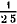
, en acceptant l'évaluation de la livre attique à 75 drachmes, suivant les vers antérieurs du même poème : cette fraction est un peu trop faible, d'après ce qui précède, mais toujours voisine de la vérité. En résumé, l'emploi de la balance hydrostatique pour analyser les alliages d'or et d'argent repose sur une tradition certaine, attestée par des textes authentiques et transmise au moyen âge depuis le temps des Grecs et des Romains.2. Le même poème latin, contemporain de l'Empire romain, contient la description de l'aréomètre, instrument dont parle aussi en détail Synésius, dans une Lettre à Hypatie, publiée parmi ses œuvres. [voir 1, 2 - consulter : http://www.geocities.com/hckarlso/synesius.html#letters. Il s'agit de la Lettre 15]
3. Enfin le poème sur les poids et mesures expose un procédé pour déterminer la composition d'un objet formé avec un alliage d'or et d'argent, d'après son poids et celui d'un volume égal de cire, mesurés directement : ce qui est encore plus remarquable. Le procédé consiste à prendre d'abord les poids d'un même volume d'or, d'argent et de cire, puis le poids de l'objet et le poids d'une reproduction en cire, exécutée au moyen du même objet. La comparaison de ces diverses données permet de calculer la proportion relative de l'or et de l'argent, dans l'alliage susindiqué. Ce procédé dérive évidemment des moulages desorfèvres, exécutés à cire perdue dans la pratique de leur art, et dont je vais parler maintenant.
4. On remarquera que, dans les procédés précédents, les densités proprement dites des métaux ne sont pas calculées, bien que les expériences fournissent toutes les données nécessaires. La densité est une notion abstraite, qui n'a été tout à fait éclaircie et définie que plus tard. Les rapports numériques entre les densités des métauxétaient cependant connus en fait, au moins approximativement; car ils résultent d'une recette signalée dans un manuscrit de la Mappae clavicula, existant à Schlestadt, écrit au Xe siècle. M. Giry, qui l'a découvert et collationné, a bien voulu me communiquer sa collation ; il y a relevé deux transcriptions de la recette que je vais donner. Cette recette me paraît, je le répète, répondre aux moulages d'objets à cire perdue et indiquer les poids relatifs des métaux susceptibles de remplacer dans le moule un poids donné de cire. J'ai trouvé un texte analogue dans le manuscrit latin 12292, manuscrit du Xe siècle déjà cité (p. 480), texte qui y figure sous le titre : De mensura cerae et metalli in operibus fusilibus : « Sur la mesure de la cire et du métal dans les ouvrages exécutés par fusion. »
« Dans la fusion, voici les poids de chaque métal qui doivent correspondre au poids de la cire (Dans plusieurs de ces textes, après avoir donné les poids des matières qui remplacent une once de cire, l'auteur a cru nécessaire de présenter une seconde table donnant les poids qui remplacent une livre de cire; poids proportionnels aux précédents.).
Deniers.
1 once de cire (20 deniers) est remplacée pendant la fusion par
8 onces et 16 deniers d'airain (Aeris albi, ms. 12292)..................... 176
9 onces et 3 deniers de cuivre (Aeris Cyprii, ms. 12292)........ 183
7 onces et 17 deniers d'etain............ 157
10 onces et 12 deniers d'argent........... 212
1 livre et 6 deniers de plomb..:....... 246
1 livre, 7 onces et 8 deniers d'or (19 onces et 9 deniers dans l'un des textes : ce qui répond à de l'or un peu plus fin.)..... 388 »
Si l'on admet pour la densité de la cire la valeur connue 0,96, les chiffres précédents fourniraient pour les métaux les densités suivantes :
Airain........................... 8,4
Cuivre.......................... 8,8
Étain............................ 7,5
Argent........................... 10,2
Plomb............................ 11,8
Or............................... 18,6
Ces chiffres sont assez rapprochés des densités des métaux purs, tels que nous savons les préparer aujourd'hui. Ils se rapporteraient aux métaux solidifiés, plutôt qu'aux métaux en fusion 5 mais les conditions du moulage sont trop compliquées pour permettre de serrer davantage de semblables rapprochements.
5. Je saisis cette relation pour rappeler un nouveau texte relatif à l'origine du nom du bronze, texte plus décisif encore que les précédents que j'ai déjà signalés (Introd. à l'étude de la Chimie des anciens, p. 275-279). J'avais rapporté ce nom à celui de la ville de Brundusium : ces Brundusinum ayant fait bronze, de même que ces Cyprium a fait cuivre. Sans revenir sur les preuves que j'en avais données, je dirai aujourd'hui qu'on lit, en effet, dans une recette d'amalgame de la Mappae clavicula (n°89),les mots: Brundisini speculi tusi et cribellati; c'est-à-dire « métal à miroir de Brindes, broyé et criblé. » Il s'agit donc bien du métal qui servait à fabriquer ces miroirs de Brindes, dont Pline parle en deux endroits (Même citation, p. 279), et qui me paraissent l'origine du nom moderne du bronze. Mais j'ai traité cette question plus amplement dans la Revue archéologique (1891), à laquelle je renverrai le lecteur. [Revue archéologique, 1891, IIIe série, t. XVII, sur l'origine du nom du bronze, pp. 49-51]
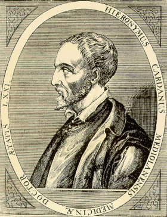
Hieronymus Cardanus (1501-1576)
6. On trouve encore dans la Mappae clavicula la description d'une invention moins importante, mais qui n'est pas sans intérêt ni sans application, celle du système des cercles concentriques, dits de Cardan; système bien connu, à l'aide duquel un objet placé au centre conserve une position invariable, quels que soient les mouvements imprimés au système. Or ce système était connu au XIIe siècle; car il figure dans la Mappae clavicula, parmi une suite de recettes de magicien, ou de prestidigitateur, professions exercées alors par les mêmes individus. Voici dans quels termes : Soient quatre cercles concentriques et roulant les uns sur les autres, d'après une disposition convenable de leurs diamètres; si l'on suspend un vase à leur intérieur, de quelque façon qu'on les tourne, rien ne se répandra. C'est sans doute dans les procédés secrets de la magie, auxquels il n'était pas étranger, que Cardan aura trouve son invention : il est probable qu'elle remontait aux physiciens grecs. D'après une Lettre que M. Le Myre de Vilers me fait l'honneur de m'écrire, la suspension à la Cardan est également employée dans l'extrême Asie, probablement de temps immémorial ; car les Chinois ne changent pas leurs procédés : cependant ce point exigerait de nouveaux éclaircissements.
7. C'est ici le lieu de rappeler que le principe du culbuteur chinois, c'est-à-dire l'emploi du mercure dans un corps creux dont la présence déplace le centre de gravité pendant le cours des mouvements qu'il exécute au contact d'un support solide, était déjà connu et utilisé par les faiseurs de tours dans l'antiquité: ainsi que l'atteste un passage de Philippe, auteur comique, cité par Aristote (Introduction à la Chimie des anciens, etc., p. 257).
8. Enfin je rappellerai que j'ai démontré dans le présent Recueil (6e série, t. XXII, p. 145), la filiation antique de certaines des recettes de la Mappae clavicula, relevant de l'étude des alliages métalliques et congénères. En effet, plusieurs des articles qui les décrivent sont traduits mot pour mot des textes grecs contenus dans le papyrus égyptien de Leide, et d'autres articles sont traduits pareillement de certains textes, appartenant aux plus vieux alchimistes grecs, que j'ai publiés. C'est la preuve d'une transmission directe des connaissances techniques de l'antiquité, par la voie des procédés traditionnels des ateliers, depuis l'Égypte jusqu'à l'Italie, et depuis l'époque de l'Empire romain jusqu'au cœur du moyen âge.
SUR L'ORIGINE DU NOM DU BRONZE [Revue archéologique, 1891, IIIe série, t. XVII]
On sait à quelles controverses a donné lieu le nom du bronze, qui apparaît dans l'usage courant vers le XVe siècle. J'ai montré précédemment, dans le présent recueil (Cf. mon Introduction à la chimie des anciens et du moyen âge, p. 216 et 279, chez Steinheil, 1889), que le nom de cet alliage se lisait déjà sous la forme brenthsioV dans un manuscrit du XIe siècle, renfermant la collection des alchimistes grecs, et je l'ai rattaché à celui de la ville de Brundusium, où se fabriquait, d'après Pline, un bronze à miroirs fort estimé.
J'ai trouvé récemment plusieurs textes, non signalés jusqu'ici à ce point de vue, qui complètent ma démonstration. Ces textes sont au nombre de cinq, tirés de trois manuscrits différents : l'un des manuscrits a été découvert dans la bibliothèque du chapitre des chanoines de Lucques et renferme un opuscule, reproduit par Muratori dans ses Antiquitates Italicae (t. II. p. 364-387 ; Dissertatio XXIV) ; il remonte au temps de Charlemagne. Il a pour titre : Compositiones ad tingenda musiva, pelles et alia, etc. aliaque artium documenta : « Recettes pour teindre les mosaïques, les peaux et autres objets... et autres documents techniques. » II est écrit dans un latin barbare, mêlé de mots grecs, et sans aucun doute sous l'influence de ces traditions byzantines qui se perpétuaient alors dans le midi de l'Italie. Un second traité, intitulé : Mappae clavicula, renferme les mêmes recettes, reproduites dans un ordre un peu différent, en même temps que des recettes d'orfèvrerie plus étendues. Il en existe plusieurs manuscrits. L'un, du XIIe siècle, a été imprimé par A. Way en 1847, dans le recueil Archaeologia de la Société des Antiquaires de Londres, t. XXXII, p. 183-244. Un autre manuscrit, du Xe siècle, a été signalé dans la Bibliothèque de Schlestadt par M. Giry, qui l'a collationné avec soin et qui a eu l'extrême obligeance de me communiquer sa collation. Voici les cinq textes que j'ai trouvés dans ces divers ouvrages :
1. Ms. de Lucques (Muratori, t. II, p. 386).
De compositio Brandisii. Compositio brandisii eramen partes II, plumbi parte I, stagni parte I, c'est-à-dire :
« Composition du bronze : airain (cuivre), 2 parties; plomb, 1 partie; étain, 1 partie. »
C'est là une formule traditionnelle qui a passé d'âge en âge jusqu'à nous. On la trouve exactement dans les mêmes termes dans Du Cange, au nom Bruntus : Compositio Brundi : sume aera, minis partes duas; plumbi unam; stanni unam. Elle y est rapportée à Palladius, de Architectura : titre reproduit encore ailleurs dans Du Cange, mais dont je n'ai pu retrouver l'auteur véritable, Palladius n'ayant écrit aucun traité connu sur l'architecture. Il est probable qu'il s'agit de quelque ouvrage, placé dans un manuscrit du moyen âge à la suite de ceux de Vitruve et de son abréviateur Palladius, tel, par exemple, que l'opuscule de Celius Faventinus (Cf. Giry, Revue de philologie, janvier 1879). L'orthographe Brundi conserve une trace d'origine. Quoi qu'il en soit, la formule du ms. de Lucques est caractéristique. Elle est suivie dans le même manuscrit par celle-ci :
2. Ms. de Lucques (Muratori, t. II, p. 386).
De compositio brandisii. Alia compositio brandisii. Eramen partes II; plumbi partem unam; vitri dimidium et stagni dimidium. Commisces et conflas; fundis secundum mensuram vasorum; facit et agluten eramenti cum afrinitru.
« Autre composition du bronze : cuivre, 2 parties; plomb, 1 partie; verre une demie, étain une demie. Mêle et fonds; coule uivant la mesure des vases ; on soude le cuivre avec l'aide de l'écume de natron . » (Fondant destiné à empêcher l'oxydation du métal. C'est un carbonate alcalin, Introduction à la chimie des anciens, p. 263)
3. Dans le traité Mappae clavicula, chapitre CCXXI, imprimé dans l'Archaeologia, p. 230, on lit : aeraminis partes II; plumbi partem I. C'est la formule d'un bronze. Elle reproduit, incomplèment d'ailleurs, l'une de celles du ms. de Lucques, le nom même du bronze n'étant pas donné dans le ms. de Way ; mais la même recette dans le ms. de Schlestadt, d'après la collation de M. Giry, est inscrite sous le titre : Compositio Brundisii.
4. Dans ce même manuscrit de Schlestadt, sur les derniers feuillets, on lit diverses recettes isolées, dont la suivante, relevée par M. Giry : Compositio brondisono : eramen partes II; plumbi una; stagni una. — C'est toujours la même formule et le même nom.
5. Enfin dans le Mappae clavicula, chapitre LXXXIX, au cours d'un procédé pour argenter, on lit : Brundisini speculi tusi et cribellati; c'est-à-dire : métal à miroirs de Brindes, pilé et passé au crible, etc. Ce dernier texte est tout à fait décisif, si on le rapproche des indications de Pline sur les miroirs fabriqués à Brindes.
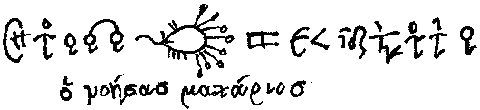
Zosimos - Saint-Marc MS Fol. 193 - Hansi Linderoth (d'après Festugière)
Sur les voyages de Galien et de Zosime dans l'Archipel et en Asie, et sur la matière médicale dans l'antiquité. [Journal des Savants, 1895, p. 382]
Parmi les traités d'alchimie syriaque contenus dans un manuscrit de l'Université de Cambridge et que j'ai publiés avec la collaboration de M. Rubens Duval, on trouve (p. 297 de la traduction, feuille 120 v° du manuscrit, Mm. 6.29,) un ouvrage consacré à la matière médicale tirée des minéraux, lequel débute par ces mots :
« Commencement du livre IX de Zosime le philosophe, sur les changements de la terre et de sa poussière, et sur les pierres et drogues tirées de la terre. »
Cet ouvrage, qui occupe dix feuillets du manuscrit, se termine par les mots :
« Fin du livre de Zosime, le philosophe, adressé à Théosébie, la prêtresse. » [signalons un texte qui donne Zosime à Eusébie, par corruption, voir Marie à Aros et Chimie des Anciens, VI]
L'en-tête et la finale ne permettent guère de douter qu'il n'ait été compris dans la collection des œuvres de Zosime et composé, ou plutôt compilé, par ce savant. Le texte syriaque est d'ailleurs, de même que tous ceux que nous avons publiés, traduit du grec : la science syriaque, dans cet ordre comme dans tous les autres, a consisté principalement en traductions. Or ce traité soulève des problèmes intéressants, relativement aux connaissances des anciens en matière médicale, aux voyages qu'ils accomplissaient pour s'en approvisionner et aux procédés suivis dans la composition de leurs médicaments. En effet, il renferme des articles similaires de ceux de Dioscorides, et quelques-uns traduits du traité attribué à Galien sous ce titre : Heri thV twn aplwn jarmakwn krasewV kai dunamewV « Sur le mélange et la puissance des médicaments simples ». Zosime a dû copier Galien, l'un et l'autre ayant reproduit par places des auteurs plus anciens, Dioscorides notamment. Ces textes sont dignes d'intérêt, à la fois par ce qu'ils nous apprennent sur les mines et procédés minéralogiques des anciens, sur les voyages que faisaient alors les médecins pour s'approvisionner de drogues authentiques, et en particulier sur ceux qui y sont attribués à Galien, et qui figurent dans ses biographies; voyages que le texte syriaque rapporterait à Zosime, s'il fallait le prendre au pied de la lettre et le regarder comme absolument original. Mais nous avons affaire à un compilateur, qui a reproduit sans aucun changement une œuvre plus ancienne : cette pratique n'est pas rare dans l'antiquité, et chez les compilateurs orientaux et occidentaux du moyen âge; elle a donné lieu à bien des méprises. Exposons les faits, c'est-à-dire le plan du traité de Zosime, avant d'aller plus loin. C'est une compilation un peu incohérente, comme tout ce que nous a laissé cet auteur, et formée de quatre morceaux ou chapitres dissemblables.
- Un premier chapitre renferme les noms de diverses drogues, rangés par ordre alphabétique depuis alV (sel) jusqu'à yimuqion (céruse) et opopanax, qui devrait être écrit par un w pour se conformer à l'ordre des lettres. Toutes ces drogues sont d'origine minérale, à l'exception de deux d'origine végétale (rhubarbe et opoponax), intercalées là on ne sait pourquoi. Elles sont décrites dans Dioscorides, suivant un ordre différent, et dans l'ouvrage de Galien, à peu près dans le même ordre et avec des détails sur les mines de Chypre, qui fournissent la cadmie et le misy, détails reproduits par Zosime; je reviendrai tout à l'heure sur ce dernier rapprochement.
- Un second chapitre est intitulé : « Explication des terres de toute espèce par Zosime, le philosophe »: terre de Lemnos, terre de Samos, terre Selinusienne, terres de Chio, de Cimole, d'Érétrie, d'Arménies, terre empelitis, pignitis, etc. C'est la classification de Dioscorides; mais le texte même est traduit de Galien, ou, si l'on aime mieux, du commentateur de Dioscorides; on y trouve notamment un long passage sur la terre de Lemnos. La traduction n'est pas d'ailleurs identique avec le texte grec; ainsi le morceau de Galien relatif à l'emploi de la terre ou du bol d'Arménie contre la peste, durant une épidémie survenue en Italie (épidémie où Galien montra peu de courage), n'existe pas dans notre auteur; tandis qu'il ajoute des noms de provenance : montagne Bagavana, ville Agraca, attribuables à une glose du traducteur syriaque. Ce chapitre se retrouve dans un autre manuscrit syriaque du British Museum, mais à l'état d'un simple sommaire d'une quinzaine de lignes, comprenant seulement sept terres, c'est-à-dire un nombre mystique.
- Un troisième chapitre est consacré à la description des treize pierres, partagées en deux groupes : celui des sept pierres, hématite, galactite, etc., consacrées aux planètes, suivies de six autres, qui complètent le nombre sacramentel. Ce chapitre se trouve également dans le manuscrit syriaque du British Museum, sans l'indication des planètes, et avec deux articles en sus de treize. Le chiffre 12 est d'ailleurs signalé au début comme le nombre véritable, au lieu de 13.
Le rôle attribué à ces indications numériques est caractéristique du traité syriaque et lui imprime un certain cachet mystique et astrologique, qui n'existe pas chez les originaux grecs. En effet, tous ces articles sont le résumé de ceux de Dioscorides et ils sont reproduits aussi dans Galien ; mais ils n'y sont assujettis ni à un nombre déterminé ni à certaines relations avec les astres. Ils renferment en outre les applications médicales , qui ont disparu dans les textes syriaques : ceux-ci sont donc un résumé, exécuté à un point de vue purement chimique. Ils ont été traduits assurément du grec, mais à une époque plus récente et plus superstitieuse, soit par Zosime, soit par quelque auteur plus moderne, dont l'œuvre a été mise sous le nom de Zosime. Cependant la finale du chapitre l'attribue formellement à Zosime :
« Fin des pierres qui ont une vertu médicinale de quelque sorte, dont se servent les sages médecins, sur lesquelles Zosime a fait des recherches et qu'il a décrites pour Théosébie, reine et prêtresse. »
- Le quatrième chapitre est une sorte de vocabulaire « des expressions médicales de Zosime, le philosophe », renfermant des mots rangés sans ordre, quelques-uns avec un petit commentaire, où se trouvent notamment, à propos du nom de l'alouette huppée,
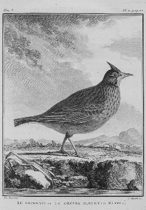
cochevis ou alouette huppée, Buffon, Histoire naturelle des oiseaux, t. V, pl. 5, p. 72
korudoV, des citations d'Aristophane et de Théocrite, que je n'ai pas pu retrouver dans leurs œuvres actuelles; je les signale aux hellénistes. D'après l'une, la huppe est antérieure à tous les animaux et porta le corps de son père sur sa tête pendant cinq jours, jusqu'à ce qu'elle eût trouvé une région convenable pour l'enterrer.
[par galeritus, qui vient de galerus, on peut trouver un rapport entre l'alouette et le casque qui est l'un des symboles de la matière fondue chez les alchimistes, voir nos symboles. L'analogie est encore possible en grec, puisque l'alouette huppée - korudalloV - est proche de koruV, casque]
L'article relatif aux sels et spécialement à celui de Tragase n'existe ni dans Dioscorides ni dans Galien. La composition de l'ouvrage étant ainsi définie, examinons la question des voyages attribués à Zosime et celle de ses recherches rninéralogiques à Chypre, où il trouve le diphrygès, la cadmie, le misy et le sory, nécessaires à la fabrication de ses drogues. Rappelons ici que : Le diphrygès désignait le résidu infusible des fours où l'on traite le cuivre, ou bien encore du grillage de la pyrite (Introd. à la Ch. des anc., p. 23), ou même de son oxydation spontanée;
[dijrughV, deux fois rôti, tutie. A rapprocher par cabale de dijreuw, conduire un char, i.e. le char du
- voir
le Currus triomphalis du pseudo Basile Valentin
et aussi de dijuhV, de double nature, renvoyant à
l'hermaphrodite, au Rebis qui est de la nature de ]La cadmie était constituée par un mélange d'oxydes métalliques (cuivre, plomb, zinc, etc.), sublimés ou entraînés dans la cheminée des fours pendant le traitement (Ibid., p. 239). On désignait aussi sous le même nom un minéral naturel, dont le grillage produisait ces oxydes volatils ; Le misy et le sory étaient des sulfates basiques de fer, mêlés de sulfates de cuivre et d'alumine, plus ou moins secs ou hygrométriques (Ibid., p. 242), obtenus par la décomposition spontanée ou le grillage des pyrites et autres minerais de cuivre.
- Dans le chapitre suivant, relatif aux terres, Zosime s'étend sur la rubrique ou terre sigillée de Lemnos, objet d'une fabrication et d'une exploitation religieuse et scellée par la prêtresse du lieu. C'est là que l'auteur parle de ses voyages en Célésyrie, à Rome, en Thrace, en Macédoine, en Troade et dans les îles de l'Archipel. L'auteur s'y exprime à la première personne. À prendre ce texte au pied de la lettre, il semblerait donc que Zosime, réputé, d'après ses autres ouvrages, un savant gréco-égyptien, aurait parcouru l'Asie Mineure, l'Archipel, la Thrace, et se serait rendu en Italie. Aucune mention de ces voyages ne figure cependant dans les ouvrages déjà connus de cet auteur, tels qu'ils existent dans la collection des Alchimistes grecs, et mieux encore dans le grand Traité méthodique, conservé en majeure partie en langue syriaque (La Chimie au moyen âge, t. II - Traités d'Alchimie syriaque, p. 210 à 266), et dont nous avons, M. Rubens Duval et moi, publié une analyse développée.
Le Traité même de minéralogie que j'analyse en ce moment paraît bien avoir été écrit par Zosime, à en juger par les phrases du commencement, de la fin et des chapitres intermédiaires. Mais l'interprétation littérale des affirmations qui y sont contenues ne saurait être acceptée, en raison des textes de Galien que je viens de rappeler, et qui s'y trouvent littéralement traduits, avec certaines lacunes et abréviations. Galien, en effet, a exécuté tous ses voyages dans sa jeunesse, par curiosité scientifique, et pour s'approvisionner des matières premières avec lesquelles il composait ses médicaments, la thériaque notamment. C'est ainsi qu'il déclare (Ouvrage cité, ch. iii, 8, t. XII, p. 214, de l'édition de Kuhn.) avoir rapporté une grande quantité de diphrygès des mines de Soli à Chypre. Ce passage est traduit mot pour mot par Zosime; mais il ne reproduit pas ce qui suit dans Galien :
« Dans ma jeunesse, ajoute celui-ci, j'ai appris à préparer les médicaments, sous la direction d'un maître chèrement rémunéré. J'ai été par mer à Lemnos, à Chypre, dans la Syrie palestinienne, afin d'en rapporter une provision de matières premières non falsifiées et suffisante pour toute ma vie. »
Un peu plus loin (p. 219), Galien parle de la cadmie de Chypre, fabriquée dans les fours en même temps que le diphrygès, ainsi que du minéral naturel qui la produisait et de ses variétés « botruitis », en forme de grappes, à la partie supérieure des fourneaux, et « placitis », en croûtes, le long des parois inférieures. Zosime a traduit également ce passage, ainsi que l'article de Galien sur le misy de Chypre, où l'auteur décrit l'entrée de la mine et ses trois veines de minerais superposées : celle d'en haut formée par le misy, la veine moyenne par la chalcite, la veine inférieure par le sory. Les mots misy, sory, chalcite, dans ces articles, de même que celui de cadmie, ont un sens multiple : d'abord celui de minéraux natifs plus ou moins altérés, lesquels sont, dans le cas actuel, des pyrites cuivreuses inégalement riches en fer et en cuivre; ils signifient aussi les sulfates basiques, produits extrêmes de la décomposition de ces minerais sous l'influence de l'eau, spontanément, ou avec le concours d'un grillage plus ou moins complet, On conservait le même nom aux matières premières altérées, et aux produits successifs de leur transformation, mais en y joignant souvent une épithète, telle que « cadmie minérale » et « cadmie des fourneaux ». Galien ajoute (p. 226) que le directeur de la mine, en lui montrant ces veines, disait :
« Tu viens dans un moment où nous manquons de cadmie des fourneaux; mais tu vois quelle est notre richesse en ces trois matières (sory, chalcite, misy). » « J'en remportai, dit l'auteur, un poids considérable, que j'apportai en Asie; puis à Rome, et dont j'ai encore une provision plus de trente ans après. »
Il décrit ensuite une altération, surprenante à ses yeux, du misy naturel : de petits fragments de ce sulfure s'étant agglomérés spontanément, avec formation d'une efflorescence intérieure. Cette portion du texte de Galien se retrouve dans le texte syriaque, mais altérée par une série de contresens dus au traducteur, qui n'avait pas vu les produits eux-mêmes. [voir Damigeron - Evax, LXXXIII in Lapidaires grecs, p. 290, Halleux et Schamp, Les Belles Lettres, 1985] Un second morceau, non moins intéressant, concerne la terre sigillée de Lemnos. Ici encore Zosime a reproduit le texte de Galien, en conservant une rédaction faite à la première personne. Le début de ce chapitre, relatif aux différentes terres, est le même. Puis vient l'article sur la terre de Lemnos ; le début en est fort abrégé dans Zosime, notamment la partie relative aux manipulations faites par la prêtresse. Cette terre, en effet, était vendue par une prêtresse, comme la liqueur dite chartreuse l'est aujourd'hui par les moines; c'était un oxyde de fer plus ou moins hydraté et impur. On la délayait dans l'eau, afin d'en séparer les pierres et le sable par décantation ; puis on la laissait sécher et on imprimait sur les fragments le sceau de Diane, avant qu'elle fût durcie; d'où le nom de terre sigillée. Un préjugé populaire, rapporté par Dioscorides, prétendait à tort que l'on y ajoutait du sang de bouc, sans doute en raison de sa couleur rouge.
[pour préparer une bonne terre sigillée, il faut à l'Artiste du silicate de sodium, du carbonate de sodium, beaucoup d'eau de pluie et de la terre en poudre. Il faut employer une argile ferrugineuse fine, qui peut être légèrement calcaire. Quand on emploie un défloculant, on doit nécessairement laisser décanter un mois puis concentrer la solution obtenue.]
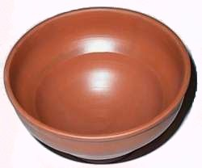
terre sigillée
Galien explique quelles difficultés on rencontrait alors pour gagner Lemnos; comment, en se rendant d'Asie à Rome par voie terrestre, c'est-à-dire par la Thrace et la Macédoine, il fit un premier voyage par, mer, d'Alexandrie de Troade à Lemnos, sur un vaisseau qui allait à Thessalonique, et qui le débarqua à Myrina, ville située à l'Occident de l'île de Lemnos et non à Héphestias, située à l'Orient et siège véritable de la fabrication; comment il dut se rembarquer aussitôt et aller jusqu'à Rome. C'est dans un nouveau voyage, en sens inverse, qu'il vit enfin la terre sigillée. On la retirait d'une colline, d'apparence brûlée et dénuée de toute végétation. Il décrit ensuite sa visite et l'achat de 20,000 sceaux, c'est-à-dire doses scellées de la terre de Lemnos, ainsi que les propriétés médicales de cette terre employée dans diverses maladies, après délayement dans le vinaigre, le vin, l'eau, etc. Le passage relatif aux voyages a été reproduit par Zosime, le reste étant abrégé ou supprimé. Ces détails ne laissent, je crois, aucun doute sur le caractère véritable de l'ouvrage attribué à Zosime : c'est une compilation, analogue à celle de divers auteurs du IIIe et du IVe siècle de notre ère, tels qu'Africanus, Eusèbe et beaucoup d'autres. [rappelons que les écrits hermétiques datent de la même époque; quant à la Tabula smaragdina, elle est beaucoup plus récente ] On s'explique ainsi l'incohérence apparente des autres ouvrages de Zosime; mais on voit en même temps qu'ils renferment des fragments de livres plus anciens, fragments intercalés sans aucun changement. J'en ai déjà fait la remarque pour les traités de Marie l'Égyptienne, relatifs aux alambics et à la distillation, et pour les livres des orfèvres alchimistes, concernant les alliages métalliques et l'imitation ou la falsification de l'or et de l'argent. Mais ces livres et traités sont perdus, tandis que le contenu du traité de Galien nous permet de saisir sur le fait la valeur des emprunts et le caractère même de la composition des œuvres de Zosime.
BERTHELOT.
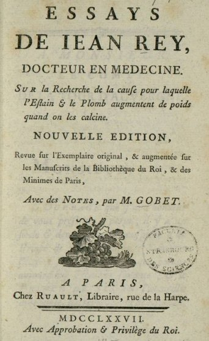
frontispice des Essays de Jean Rey (2ème édition, 1777)
HISTOIRE DES SCIENCES - Les « Essays » de Jean Rey. [voir supra et idée alchimique, V] - L.-A. HALLOPEAU et Albert POISSON
Parmi les savants de la première moitié du xvii° siècle, il en est un dont le nom est resté longtemps ignoré et qui, à l'heure actuelle, est encore presque inconnu ou mal jugé. C'est Jean Rey, médecin du Périgord. Il naquit vers la fin du xvie siècle, au Bugues, sur la Dordogne, dans les dépendances de la baronnie de Lymeil; Lymeil, ville de la province du Périgord, appartenait au duc de Bouillon. Nous ne savons pour ainsi dire rien sur sa vie; il était docteur en médecine et se livrait, pendant ses loisirs, à des recherches de chimie et de physique chez son frère aîné, qui s'appelait aussi Jean Rey, sieur de la Perotasse, propriétaire de la Forge de Fer, à Rochebeaucourt, dans la Dordogne. Il mourut en 1645; peut-être ses jours furent-ils abrégés par le chagrin que lui causa un procès malheureux. Jean Rey inventa un thermomètre à eau ou thermoscope, et une arquebuse à vent. Il songea même à appliquer aux usages de la médecine ce thermomètre, qu'il décrit de la façon suivante, et qui fut certainement un des premiers instruments destinés à mesurer des diflérences de température :
« Ce n'est rien plus qu'une petite phiole ronde ayant le col fort long et deslié. Pour m'en servir, je la mets au soleil, et parfois à la main d'un febricitant, l'ayant tout remplie d'eau fors le col, la chaleur dilatant l'eau fait qu'elle monte : le plus et le moins m'indiquent la chaleur grande ou petite. »
Il écrivit un seul ouvrage, un opuscule d'une centaine de pages, dédié au comte de la Tour d'Auvergne, imprimé à Bazas, en 1630, et ayant pour titre : « Essays de Jean Rey, docteur en médecine, sur la recherche de la cause pour laquelle l'estain et le plomb augmentent de poids quand on les calcine. »
[Quinze ans avant sa mort, qni arriva en 1615, il avait publié le résultat de ses expéricuces sur l'augmentation du poids des métaux, sous le titre de : Essays sur la recherche de la cause pour laquelle l'estain et le plomb augmentent de poids quand on les calcine; Bazas, 1630, in-8, 142 pages. Gobet donna, en 1777, une nouvelle édition sur l'exemplaire original, qui est aujourd'hui très-rare. Nouvelle édition, revue sur l'exemplaire original, et augmentée sur les manuscrits de la Bibliothèque du roi et des Minimes de Paris avec des notes; Paris, Paris, in-8, 1777.
] Cet ouvrage n'a pas été compris des savants de cette époque. Il fut, d'ailleurs, probablement fort peu répandu et, au milieu du xviiie siècle, il n'en existait plus que deux exemplaires. Encore, un seul de ces exemplaires était-il complet; il appartenait à la grande bibliothèque du roi. Néanmoins, en 1777, le livre de Rey fut réimprimé par Gobet, qui réimprima aussi, vers la même époque, les œuvres de Bernard Palissy. A la suite des Essays, Gobet fit paraître également la correspondance que Rey eut avec Brun et avec le P. Mersenne à l'occasion des Essays; ces lettres, éditées par Gobet, ne répondent pas, d'ailleurs, exactement les unes aux autres et il doit en exister d'autres inédites dans la correspondance manuscrite du P. Mersenne. Le livre de Rey fut donc assez répandu à la fin du xviiie siècle. Malgré cela, il est aujourd'hui excessivement rare; il n'en existe en France, dans les bibliothèques publiques, que trois exemplaires qui se trouvent à la bibliothèque Mazarine, au Conservatoire des Arts et Métiers et à la bibliothèque de la Rochelle. Aussi, bien peu de personnes, aujourd'hui, ont-elles lu les Essays de Rey, devenus introuvables. Nous avons pensé pouvoir rendre quelques services et éclaircir dans une certaine mesure l'histoire de la science, toujours si obscure à ses débuts, en donnant une analyse aussi courte et aussi exacte que possible de cet ouvrage, dont nous avons le bonheur de posséder un exemplaire. À en juger par ses écrits, Jean Rey paraît avoir eu des connaissances scientifiques très étendues et un talent d'expérimentation qui devait être rare à son époque. D'ailleurs, il se trouvait en relation avec la plupart des savants du temps; on s'adressait à lui dans les cas difficiles et, lui-même, il était au courant de tout ce qui avait été fait, aussi bien en France que dans les pays voisins. Trois hommes surtout sont intimement mêlés à ses travaux ; ce sont le sieur Brun, maître apothicaire de Bergerac; Deschamps, médecin de la même ville; et, enfin, le P. Mersenne, de l'ordre des Minimes, qui eut avec Jean Rey une correspondance si suivie et si intéressante pour nous. C'est à la demande de Brun que Rey entreprit ses expériences. La lettre de Brun mérite d'être citée tout entière ; elle va nous donner une idée de la grande confiance que Rey avait su inspirer à ses contemporains et de la haute réputation qui s'était attachée à son nom :
« Voulant ces jours passez calciner de l'estain, écrivait Brun, j'en pesay deux livres six onces du plus fin d'Angleterre, le mis dans un vase de fer adapté à un fourneau ouvert, et à grand feu l'agitant continuellement sans y adjouster chose aucune, je le convertis dans six heures en une chaux très blanche. Je la pesay pour scavoir le déchet et en y trouvay deux livres treize onces. Ce qui me donna un estonnement incroyable, ne pouvant m'imaginer d'où estoient venues les sept onces de plus. Je feis le mesme essay du plomb et en calcinay six livres, mais j'y trouvay six onces de déchet. J'en ay demandé la cause à plusieurs doctes hommes, notamment au docteur N... (Deschamps), sans qu'aucun ay peu me la monstrer. Vostre bel esprit, qui se donne des eslans, quand il veut, au-delà du commun, trouvera icy matière d'occupation. Je vous supplie de toute mon affection vous employer à la recherche de la cause d'un si rare effect; et me tant obliger que par vostre moyen je sois esclaircy de cette merveille. »
Rey se met aussitôt à l'œuvre pour résoudre cette question, une « des plus ardues que la philosophie aye jamais produit ». Et, d'ailleurs, ce n'est pas sans quelque émotion qu'il prend la plume :
« Estimant d'avoir frappé le but, dit-il, j'en produits ces miens essays. Non sans prévoir très bien que j'encourray d'abord le nom de téméraire, puis qu'en iceux je choque quelques maximes approuvées depuis longs siècles par la pluspart des philosophes. Mais quelle témérité y peut-il avoir d'estaller au jour la vérité après l'avoir cogneuë ? »
Composé de vingt-huit chapitres ou Essays, le livre de Rey est divisé en deux parties bien distinctes. Dans la première, il prépare, pour ainsi dire, son lecteur aux idées qu'il exposera dans la seconde. Il démontre d'abord la pesanteur de l'air, fait entièrement nouveau pour la science; il applique ensuite les idées qu'il vient d'émettre à l'explication de l'accroissement de poids de l'étain et du plomb calcinés à l'air.
I. DÉCOUVERTE DE LA PESANTEUR DE l'AIR.
Les grands physiciens du xviie siècle n'avaient encore rien produit à l'époque où parurent les Essays de Jean Rey, en 1630. Otto de Guericke n'avait que vingt-huit ans, Torricelli étudiait encore les mathématiques à Rome et sa célèbre expérience ne fut faite par Viviani qu'en 1643. Galilée seul pouvait avoir, à ce moment, des idées bien arrêtées sur la pesanteur de l'air; mais ce n'est qu'en 1638 que parurent, à Leyde, ses Dialogues sur le mouvement et sur la résistance des fluides. C'est donc Rey qui, le premier, déclara que l'air est pesant, et à lui seul doit revenir tout l'honneur de cette importante découverte. Son premier Essay a pour titre : « Tout ce qui est de matériel soubs le pourpris des cieux a de la pesanteur. » D'après lui, la terre occupe le centre du monde.
« La matière remplissant de tout point l'espace enfermé soubs la courbure du ciel, est continuellement poussée par son propre poids vers le centre du monde. Vray est que la terre, comme plus pesante, occupe promptement ce lieu : et forçant ses confraires à la retraite, fait que l'eau, seconde en pesanteur, soit aussi seconde en place : que si l'air chassé du plus bas et second lieu, se restraint au troisième; laissant au feu, le moins pesant de tous, la suprême région pour faire sa demeure. »
Ainsi Jean Rey exprime d'une façon bien précise que les corps sont pesants; « il n'y a rien de léger en la nature, » et « il n'y a point de mouvement en haut qui soit naturel. »
Rapportons encore ses propres paroles :
« Je dis : s'il y avoit un canal depuis le centre de la terre, jusques bien avant dans la région du feu, ouvert par les deux bouts, et plein des quatre elemens, chacun endroit de sa place ordinaire; que tirant la terre par le bas, l'eau des-cendroit occuper cette place; laissant la sienne à l'air, et l'air au feu la sienne. Puis soubstrayant l'eau de ce lieu, l'air le viendroit remplir; lequel aussi vuidé, le feu s'y por-teroit, et rempliroit tout le canal, descendant jusqu'au centre, par luy avoir osté seulement ce qui l'empeschoit de ce faire. Ceux qui diront que cela se fait pour esviter le vide, ne diront pas beaucoup; ils indiqueront la cause finale et il s'agit de l'efficiente, qui ne peut point estre le vuide. »
Ainsi, avant Torricelli, Rey combattait ce préjugé grossier qui voulait que la nature ait horreur du vide. Contraire-
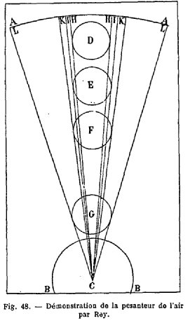
ment aux opinions des savants, il disait « que l'air et le feu sont pesants, et se meuvent naturellement en bas ».
Que nous sommes loin déjà du temps où Salomon de Caus écrivait :
« L'air est un élément froid, sec et léger, lequel se peut presser et rendre fort violent... L'air est aussi dit léger, car quelque quantité qu'il y ait d'air dans un vaisseau, il n'en sera plus pesant ! » (Raison des forces mouvantes, 1615. — 2e édition 1624.)
Il faut convenir d'ailleurs que le livre de Jean Rey, tout en réalisant un progrès énorme pour la science, renferme encore des erreurs bien considérables. Examinons l'Essay V, où Rey montre
« que l'air et le feu sont pesants, par la vitesse du mouvement des choses graves, plus grande vers la fin qu'au commencement ».
Voici l'explication toute hypothétique qu'il en donne :
« Soit A A le ciel; B B la terre; C le centre d'icelle ; D, un boulet de fer descendant vers la terre; E le mesme descendu plus bas; F le mesme encor au milieu de la descente; G le mesme près de la fin ; H H deux lignes tirées du centre de la terre jusques au ciel, touchantes le boulet en D, aux deux extrémités de son diamètre; II deux autres lignes tirées de mesme, touchantes le boulet en E; KK deux autres lignes le touchant en F; LL encore deux lignes le touchant en G. Il est manifeste que le boulet estant en D outre sa pesanteur interne a sur soy la matière des elemens de l'air et du feu, enclose entre les lignes H H, mais estant en E, il y a toute la matière contenue entre les lignes II laquelle se voit augmentée en F, de ce que les lignes KK contiennent de plus; et estant en G, tout le contenu entre les lignes LL fait poids sur iceluy : dont il faut que la vitesse du mouvement s'augmente, joint a ce le choc que fait continuellement cette matière,' à mesure qu'elle vient fondre sur ledit boulet. »
Voilà certainement une idée fort originale. Quoique fausse, c'est du moins une hypothèse raisonnable, en attendant les découvertes de Newton. Et cependant Mersenne écrivait à Rey en 1631 :
« Nous ne sçavons pas encore, ni ne sçaurons jamais, si les pierres et les autres corps vont vers le centre par leur pesanteur, ou s'ils sont attirés par la terre, comme par un aimant. » [les alchimistes étaient-ils conscients de cette question ? Ils parlent de leur Aimant - magnete sphorum, Philalethes - en signifiant l'attraction vers un punctum dans lequel ils trouvent le sel
]Énoncé du principe de la conservation du poids de la matière. —
Après avoir essayé de « graver au cœur de tous cette persuasion que l'air a de la pesanteur », Rey énonce une proposition qui découle de la précédente, et qui est bien nouvelle encore pour la science :
« La pesanteur, écrit-il, est si estroittement joincte à la première matière des elemens, que se changeant de l'un en l'autre, ils gardent tousjours le même poids... Le poids que. chaque portion d'icelle (la matière) print au berceau, elle le portera jusques à son cercueil. En quelque lieu, soubs quelle forme, à quel volume qu'elle soit reduitte, tousjours un mesme poids. »
Ne croirait-on pas entendre le mot célèbre : « Rien ne se perd, rien ne se crée dans la nature ! » Guidé lui aussi par ce fameux principe, Rey pourra en déduire les conséquences les plus importantes. Plus d'un siècle avant Lavoisier, il trouvait par le raisonnement que la matière est immuable en poids; ce que vint confirmer une curieuse expérience de Brun. En 1644, Brun construisit un appareil distillatoire hermétiquement fermé, y enferma du bois de gaïac, buis ou chêne, pesa le tout, et distilla. Le bois fut détruit; mais une nouvelle pesée, faite à la fin de l'expérience, prouva que le poids total de l'appareil n'avait pas changé pendant la distillation. C'était là une expérience délicate, qui nous prouve que l'on savait travailler à l'époque de Rey. Voici d'ailleurs qu'il indique un « moyen pour sçavoir à quel volume d'air se réduit certaine quantilé d'eau » ; on croyait encore à tort, en effet, que l'eau pouvait se changer en air.
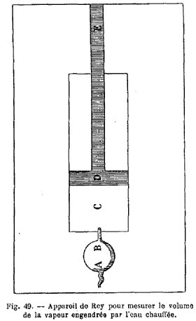
Le tuyau B d'un éolipyle A, renfermant une certaine quantité d'eau, s'engage dans une ouverture pratiquée au centre d'une plaque de laiton; cette plaque forme le fond d'un cylindre ouvert à l'autre extrémité. Dans ce cylindre se meut un bouchon D. On enfonce le bouchon D, au moyen du manche E, jusqu'au fond du canal C. On chauffe l'éolipyle; l'eau qui y est contenue se transforme en air, qui chasse le bouchon. — Poursuivant l'expérience, on peut enlever l'éolipyle A, fermer l'ouverture B, exposer le tout à un froid intense, en poussant à grand'force le bouchon D; alors « l'air pressé là-dedans se gèlera ou tournera en eau ».
Malheureusement pour lui, Rey n'avait pas fait cette expérience, comme il le dit lui-même. Il n'avait songé en aucune façon aux applications que l'on aurait pu en tirer; cette gloire devait être réservée à Papin, un demi-siècle plus tard. Pourtant, un an à peine après la publication des Essays, le 1er septembre 1631, Mersenne disait :
« Quant aux expériences de l'Eolipile je les ay faites :mais c'est une fausse imagination de croire que l'eau qui en sort se tourne en air : elle demeure toujours eau, qui revient après en sa nature. »
Démonstration expérimentale de la pesanteur de l'air. —
Reprenant son étude sur la pesanteur de l'air, Rey se demande pourquoi ses devanciers ne lui ont pas trouvé de poids; c'est qu ils ont pesé l'air dans l'air lui-même, comme il l'explique dans un passage publié déjà par M. Hœfer (Histoire de la Chimie), mais que nous devons néanmoins rapporter ici :
« Balançans l'air dans l'air mesme, et ne luy trouvans point de pesanteur, ils ont cru qu'il n'en avoit point. Mais qu'ils balancent l'eau (qu'ils croyent pesante) dans l'eau mesme, ils ne luy en trouveront non plus ; estant très véritable que nul élément pesé dans soi-même. Tout ce qui pesé dans l'air, tout ce qui pesé dans l'eau, doit soubs esgal volume contenir plus de poids pour le plus de matière que ou l'air ou l'eau, dans lesquels le balancement se practique. »
Pour que l'air devienne pesant, il faut qu'il soit mélangé à quelque matière plus pesante que lui. Et cela peut se faire de trois façons :
« Sçavoir est par le meslange de quelque matière estrange plus grave; par la compression de ses parties; par la séparation de ses portions moins pesantes. »
À l'appui de la première hypothèse, Rey avait vérifié expérimentalement que l'air humide ou nébuleux est plus pesant que l'air sec. Quant à la seconde, il l'avait aussi vérifiée par l'expérience :
« Remplissez d'air à grand force un balon avec un soufflet ; vous trouverez plus de poids à ce balon plein, qu'à luy-mesme estant vuide. »
Il prétend même avoir cherché à utiliser l'air comprimé pour la construction d'une arquebuse à vent; mais il ne mit point son projet à exécution, et l'honneur de cette invention revient au sieur Marin Bourgeois, de Lisieux. Inversement, Rey avait observé que si l'on chauffe un ballon plein d'air il diminue de poids, ainsi que l'atteste le passage suivant :
« Vous pesez une phiole de verre estant froide; vous la chauffez peu après sur un réchaud, et la pesant vous trouvez qu'elle pèse moins, parce qu'il en est sorti de l'air; et afin de trouver quelle quantité vous mettez son tuyau (estans toute chaude) dans l'eau qu'elle suce, jusqu'à ce qu'il en soit autant rentré comme il en était sorti d'air. »
D'ailleurs Rey n'est pas le premier qui ait observé ce fait important, signalé déjà antérieurement par Drebbel [sur Drebbel, cf. 1, 2, 3, 4].
Jean Rey émet encore beaucoup d'idées qui lui sont propres sur la façon dont le feu se comporte vis-à-vis des corps homogènes, puis vis-à-vis de l'eau ou de l'air. Agissant sur les corps homogènes et sur l'eau, le feu « en dilate quelques parties et espessit les autres ». Il y avait longtemps que les alchimistes, « vrays singes de la nature, » avaient su tirer parti de la distillation; et à l'époque de Jean Rey comme à la nôtre, l'eau distillée était la base des manipulations du chimiste :
« Les chymistes, dit-il, ne pouvans commodément faire leurs extraits avecques l'eau commune, ont accoustumé de se servir de l'eau distillée, ou bien de la rosée, qui n'est autre chose que de l'eau passée par le grand alambic de la nature. »
Réciproquement, il résulte des propositions précédentes que l'air peut décroître de poids de trois façons qui sont :
« Le demeslement de quelque matière estrange plus grave; son extension a de plus amples bornes, et l'extraction de ses parties plus pesantes. »
La balance elle-même est trompeuse : Ces idées sur l'air et sur la pesanteur étant exposées, Jean Rey peut désormais répondre à son ami Brun et lui donner la cause de l'augmentation de poids que subissent l'étain et le plomb lorsqu'on les calcine :
« Maintenant, dit-il, ay-je fait les préparatifs, voire jetté les fondements de ma response à la demande du sieur Brun, qui est telle qu'ayant mis deux livres six onces d'estain fin d'Angleterre dans un vase de fer, et iceluy pressé sur un fourneau à grand feu ouvert, l'espace de six heures, l'agitant continuellement, sans y adjouster chose aucune, il en a recueilli deux livres treize onces de chaux blanche; ce qui l'a porté d'abord dans l'admiration, et dans le désir de sçavoir d'où luy sont venues les sept onces de plus. Et pour grossir la difficulté, je dis, qu'il ne faut pas s'enquérir seulement d'où lui sont venues ces sept onces, mais outre icelles, d'où ce qui a remplacé le déchet du poids qui est arrivé nécessairement par l'ampliation du volume de l'estain, se convertissant en chaux. A cette demande doneques, appuyé sur les fondements ja posez, je responds et soustiens glorieusement, « que ce surcroit de poids vient de l'air, qui dans le vase a esté espessi, appesanti, et rendu aucunement adhésif, par la véhémente et longuement continuée chaleur du fourneau; lequel air se mesle avecques la chaux (à ce aydant l'agitation fréquente) et s'attache à ses plus menues parties : non autrement que l'eau appesantit le sable que vous jéttez et agitez dans icelle, par l'amoitir et adhérer au moindre de ses grains. »
Telle est la réponse célèbre que M. Hœfer a déjà citée dans son Histoire de la chimie [troisième époque, p. 255], passage fameux qui a fait considérer Rey, à juste titre, comme le précurseur de Lavoisier. Et maintenant qu'il a avancé son assertion, Rey va la défendre, en combattant et détruisant les objections qui lui ont été ou qui pourraient lui être posées.
L'augmentation de poids ne provient pas de la perte de chaleur céleste que subit le plomb par la calcination. — Bien des philosophes, Porta, Borel, Geber, Eck de Sulzbach, Cardan, Libavius, Caesalpin, François Bacon, Scaliger, avaient déjà parlé de l'augmentation de poids des métaux par la calcination. Cardan, dans son Traité de la subtilité (liv. v, p. 132, A., édition française de 1642, Rouen), avait cherché à expliquer pourquoi le plomb augmente de poids en se convertissant en céruse. C'est que le plomb meurt [il s'agit là d'une idée alchimique, stricto sensu, cf. humide radical métallique], et perd la chaleur céleste qui était son âme, ce qui le rend plus léger; et Cardan ajoute qu'un animal est toujours plus lourd lorsqu'il est mort que lorsqu'il est vivant. Jean Rey réfute cette objection en faisant remarquer que le plomb est une matière dénuée de vie, qu'on ne peut pas comparer au corps d'un animal ; d'ailleurs, on peut facilement régénérer le plomb en partant de sa chaux, de sa céruse :
« Les chymistes nous promettent que si nous abreuvons la chaux du plomb, et la meslons avecquës l'eau où du salicot (Le salicot était probablement un tartrate du soude ou de potasse, ou bien un mélange de carbonates alcalins avec du charbon, obtenu par la calcination de certains végétaux.) a esté dissoult, puis l'ayant seichée, la mettons dans un creuset qui n'ait qu'un petit souspirail ouvert, et luy donnons un feu grand et prompt, qui nous la réduirons à son premier estre. »
Au reste, « rien n'augmente en poids que par addition de matière, ou par estrecissement de volume » ; et cela ne peut avoir lieu dans le cas présent, avec l'hypothèse même de Cardan, puisque la chaleur céleste en s'évanouissant enlève de la matière, tandis qu'au contraire le volume augmente sensiblement pendant toute la durée de l'expérience.
Notons, à propos de ce passage, que Rey partageait les préjugés de son temps à l'égard de « la pesanteur qui augmente aux animaux par leur mort », préjugé qui existait dans l'esprit d'un grand nombre des savants de l'époque. C'est le P. Mersenne qui le premier réfuta cette erreur ; il avait vérifié par l'expérience qu'un chien et une poule pèsent plus vifs que morts, quoique de bien peu :
« Vous pourrés vous-mesme l'expérimenter, écrit-il à Jean Rey, le 1er septembre 1631, sans perdre ni sang, ni poil, ni plume desdits animaux, que vous pourrés estouffer, comme nous avons faict. »
L'augmentation de poids du plomb ne provient pas de ce que ses parties aérées sont consumées par le feu. —
Une deuxième objection que Jean Rey avait à combattre était due à Scaliger. Scaliger, bel esprit du temps, homme de lettres médiocre, mais qui se piquait d'être un grand philosophe, avait cherché à réfuter les assertions de Cardan. En l'exercitation CI, section 18, « il veut que l'augmentation en poids du plomb calciné vienne de ce que ses parties aërées sont consumées par le feu, » et il compare le plomb à la tuile qui « cuitte pèse plus que crue ».
Rien de plus simple que la réponse de Rey :
« S'il se perdoit quelques parties aërées, (le plomb) ne decroistroit-il pas de volume ? Il en augmente au rebours. Et puis pourquoy les pierres et les plantes n'accroissent-elles de poids estans calcinées si cette raison a lieu ?... J'adjoute pour la fin, que l'air qui est syringué à force dans le balon qui en est plein, sortant d'iceluy le rabaisse de poids; bien loin de l'en accroître comme Scaliger veut. »
Quant à la comparaison du plomb à la tuile, Rey l'a déjà rejetée bien loin ; ce n'est pas un expérimentateur comme lui qui se laisserait prendre à un pareil piège. Il lui a suffi d'ouvrir les yeux et d'observer le phénomène pour répondre :
« La tuile accroist en poids par raccourcissement d'estenduë : la chaux pour la matière qui s'y joint. »
L'augmentation de poids n'est pas due à la suie du foyer. —
L'augmentation de poids du plomb noir (Le plomb noir, c'est le plomb ordinaire, par opposition au plomb blanc, qui n'est autre chose que l'étain. « Le plomb a quatre genres : le noir, le vulgaire et de vil prix, le blanc, que coutumièrement on appelle estain. » (Cardan, de la Subtilité; Rouen, 1642.)) par la calcination avait été observé aussi par Cœsalpin, ainsi que le rapporte Libavius (Arcan. chym. lib. IV, cap. x). Caesalpin, interprétant le phénomène, en avait trouvé bien facilement l'explication, prétendant que la suie produite par le foyer heurtait la voûte du fourneau et retombait de là sur la matière. Rey répond à cela que la suie noircirait le plomb au lieu de lui communiquer une teinte blanche, et de plus qu'on pourrait en continuant le feu augmenter indéfiniment la production de la chaux, ce qui n'a pas lieu. Certes, Libavius n'avait pas tort de « rejetter l'opinion de Caesalpin, jusqu'à dire que les apprentifs en chymie se riront d'icelle ».
L'augmentation de poids ne provient pas du vase de fer où l'on fait la calcination. —
L'augmentation de la chaux de l'étain et du plomb ne peut provenir non plus du vase de fer où l'on opère la calcination. Car la chaux ne resterait pas blanche au contact de la poudre de fer; en outre, le vase devrait se consumer en deux ou trois opérations, au lieu de servir tous les jours pendant plusieurs années; enfin, s'il en était ainsi, on devrait retirer d'une très petite quantité d'étain ou de plomb une très grande quantité de chaux, ce qui est contraire à l'expérience. D'ailleurs, un chimiste allemand, Modestinus Fachsius, qui s'était aussi occupé de la question, avait conclu
« qu'en l'examen des métaux, le vase, la coupelle, le plomb, et le métal qu'on examine, tout est plus pesant après l'examen, qu'avant souffrir le feu ».
L'augmentation de poids n'est pas causée par les vapeurs de charbon traversant le vase. —
Une autre objection avait été posée par Deschamps, qui prétendait que l'augmentation de poids était due aux vapeurs de charbon traversant le vase. Rey fait remarquer très justement à son ami que de telles vapeurs ne peuvent traverser un bocal de verre, un plat d'étain, un pot de terre, puisque les eaux bouillies, les sauces et les potages n'en sont pas infectés. Comment traverseraient-elles alors un vase de fer ? Et, en admettant qu'elles arrivent à le traverser, pourquoi s'arrêteraient-elles dans la chaux, plutôt que de continuer leur course ? Rey termine sa réponse par ces belles paroles, qui prouvent qu'il était un homme de cœur aussi bien qu'un grand savant : « ô vérité que tu m'es chère, de me faire estriver contre un si cher amy ! »
L'augmentation de poids n'est pas due au sel volatil du charbon.—
Deschamps néanmoins ne s'en tient pas là. Il fait d'autres remarques. On disait alors que le charbon contenait deux parties ou natures, l'une végétale, l'autre métallique, et chacune d'elles deux autres, l'une fixe, et l'autre volatile. La partie fixe demeure dans les cendres, d'où l'on peut retirer par lavage un sel fixe. Mais la partie volatile, de nature mercuriale, monte autour du vase. D'où l'objection suivante à la proposition de Rey :
« Le sel volatil, eslevé en haut, sur les aisles de l'humidité, rencontrant l'air qui est directement sur le vase, plus raréfié et moins pesant, que la vapeur qui part du charbon, s'avale par iceluy dans le vase, et s'attache par une estroite sympathie, au sel fixe de la chaux de l'estain, laquelle en ayant prins certaine quantité, et estant comme assouvie, rejette le surplus. »
Cette observation-là était une observation purement théorique, posée par un homme de science. Elle nous paraît bizarre aujourd'hui; mais à l'époque de Rey elle pouvait avoir quelque fondement Rey, qui a réfuté par le raisonnement les objections précédentes, recourt cette fois à l'expérience. Citons ici ses propres paroles; elle prouveront bien qu'il appuyait ses hypothèses par l'expérience :
« S'il est dressé un fourneau dans une muraille séparant deux chambres, en telle sorte que le vase soit d'un costé, et les registres et portes à mettre charbon et donner le vent, soient de l'autre, je soustiens que l'augmentation s'y trouvera, bien que nulles vapeurs puissent entrer dans la chambre où est le vase. Ce que je confirme par l'espreuve que j'ai fait aux forges de Jean Rey sieur de la Perrotasse mon aisné : où j'ay trouvé pareille augmentation en l'estain que j'ay calciné sur une gueuse, qu'ils appellent, ou lingot de seize à vingt quintaux de fer, à l'instant que sortant de la fournaise elle a estée jcttée dans son moule. Car on ne peut pas dire que les vapeurs du charbon ayent ici rien contribué. Partant ce sel volatil n'est point en ce faict recevable. »
Expérience décisive par laquelle Jean Rey réfute toutes les objections précédentes.
Calcination de l'antimoine au contact de l'air. —
C'est ainsi que Jean Rey réfute toutes les objections qui lui sont posées. Mais il va plus loin encore, détruisant par une seule épreuve toutes les opinions contraires à la sienne :
« Je viens de lire dans Homerus Poppius [1, 2], dit-il, au troisième chapitre de son livre intitulé Basilica Antimonii, la nouvelle façon qu'il practique à calciner l'antimoine. Il en prend certaine quantité, le pesé, et l'ayant pulvérisé, le pose en façon de cône sur un marbre, puis ayant un miroir ardent, il l'oppose au soleil, et dresse la pointe pyramidalle des rayons réfléchis sur la pointe du cône de l'antimoine, qui tandis fume abondamment, et en peu de temps, ce que les rayons touchent se convertit en une chaux tres-blanche, laquelle il sépare avec un couteau, et conduit les rayons sur le demeurant, tant que tout soit blanchi; et adonc sa calcination est faite. C'est une chose admirable (adjouste-t-il en suitte), que bien qu'en cette calcination, l'antimoine perde beaucoup de sa substance, par les vapeurs et fumées qui s'exhalent copieusement, si est-ce que son poids augmente, au lieu de diminuer. Ores si on demande la cause de cette augmentation : dira Cardan que ce soit l'esvanouïssement de la chaleur céleste ? Ainçois elle y est infuse plus largement par le moyen des rayons solaires. Dira Scaliger que c'est la comsomption des parties aérées ? mais s'amenuisant en chaux, et grandissant en volume, il s'en y fourre davantage. Alléguera Caesalpin sa suye ? Il n'y a point de feu qui en produise ici. Fourniroit le vase quelque chose du sien ? Certes, les rayons se conduisent si dextrement sur la matière, qu'ils ne touchent point le marbre. Proposera-t-on les vapeurs du charbon ? Il ne s'en use point en cet affaire. Pour les sels volatils qu'on a tant ingénieusement produits, ils perdent ici tout-à-fait leur saveur et leur grâce. Par avanture, mettra-on en avant l'humidité, comme quelqu'un de nouveau a voulu faire. Mais d'où viendroit-elle ? du marbre ? nenny, cela n'est pas imaginable. De l'air ? encore moins : car cette opération se doibt practiquer pour le mieux, aux plus chauds jours d'esté, dans les plus violentes ardeurs de la canicule. »
La chaux n'augmente pas de poids à l'infini. —
Il est encore néanmoins une dernière objection que Rey se pose à lui-même : pourquoi la chaux n'augmente-t-elle pas indéfiniment de poids ? C'est que :
« L'air espessi s'attache à elle, et va adhérant peu à peu jusqu'aux plus minces de ses parties : ainsi son poids augmente du commencement jusques à la fin : mais quand tout en est affublé, elle n'en sçauroit prendre davantage. »
Il conclut enfin, et termine son traité en annonçant avec fierté qu'il a trouvé la véritable voie de la vérité, défrichant le chemin pour ses successeurs, et leur recommandant surtout de ne pas s'écarter de la route qu'il vient de leur tracer.
Tel est le résumé des travaux de Jean Rey. Expérimentateur habile, il sut tirer parti de la balance, et c'est la balance qui lui dicte le résultat de ses expériences (Il ne faut pas croire que l'on ne possédait à l'époque de Rey que des balances grossières; ces instruments, sans être aussi parfaits que les nôtres, avaient déjà une certaine précision. Dans une lettre de Rey à Mersenne, il est question d'une balance que la 32e partie d'un grain faisait trébucher; or le grain pesait environ 5 centigrammes. On pouvait donc déjà faire des posées exactes à 2 milligrammes près.). Son œuvre est courte; une seule expérience principale y est décrite, un seul but y est poursuivi. Mais il fit faire deux grands pas à la science. Il découvrit la pesanteur de l'air, exposant le premier cette hypothèse, et la vérifiant par des expériences de chimie et de physique. — L'augmentation de poids du plomb et de l'étain par la calcination avait été signalée depuis longtemps par les alchimistes, et Galien lui-même en avait connaissance. Mais personne avant Rey n'avait trouvé que la cause de cette augmentation de poids venait de l'air, de cet air espessi et appesanti. Certes il était remarquable d'énoncer pareille chose à une époque où la chimie était si peu avancée. On ne connaissait encore aucun gaz, et c'est seulement vers 1719, qu'un homme de sciences méconnu, Moitrel d'Élément, trouva le moyen de transvaser l'air sur l'eau dans des fioles, et enseigna dans un cours public, à Paris,
« la manière de rendre l'air visible, et assez sensible pour le mesurer en pintes, ou par telle autre mesure que l'on voudra. »
Ne reprochons donc pas à Rey de ne pas s'être avancé davantage dans la voie du progrès. Ses découvertes n'ont influé en aucune façon sur celle de Priestley et de Lavoisier. S'il a trouvé que la cause de l'augmentation de poids du plomb calciné venait de l'air, il n'a pas découvert pour cela l'oxygène; et les travaux de Rey ne doivent rien enlever à la gloire de Priestley, moins encore à celle de Lavoisier, qui restera toujours, pour nous, le véritable fondateur de la chimie.
L. - A. Hallopeau et Alb. Poisson.
Je terminerai ces notes sur Jean Rey par ce qu'en dit Lavoisier, cité par Jagnaux [Histoire de la Chimie, I, Jean Rey, p. 13] :
Voici, en etfet, comment l'appréciait Lavoisier (Mémoires de Chimie, t. II, p. 79) dans ses Détails historiques sur la muse de l'augmentation du poids qu'acquièrent les substances métalliques, lorsqu'on les chauffe pendant leur exposition à l'air :
« Descartes ni Pascal n'avoient point encore parus ; on ne connoissoit ni le vuide de Hoyle, ni celui de Toricelli, ni la cause de l'ascension des liqueurs dans les tubes vuides d'air; la physique expérimentale n'existoit pas ; l'obscurité la plus profonde régnoit dans la Chimie. Cependant Jean Rey, dans un ouvrage publié en 1630 sur la recherche de la cause pour laquelle le plomb et l'étain augmentent de poids quand on les oxide, développa des vues si profondes, si analogues a tout ce que l'expérience a confirmé depuis, si conformes à la doctrine de la saturation et des affinités, que je n'ai pu me défendre de soupçonner longtemps que les essais de Jean Rey avoient été composés à une date très postérieure à celle que porte le frontispice de l'ouvrage. »